if(!require("lme4")){install.packages("lme4")}
if(!require("nlme")){install.packages("nlme")}
if(!require("lmerTest")){install.packages("lmerTest")}
if(!require("glmmTMB")){install.packages("glmmTMB")}
if(!require("MCMCglmm")){install.packages("MCMCglmm")}
if(!require("car")){install.packages("car")}
if(!require("dplyr")){install.packages("dplyr")}
if(!require("GAD")){install.packages("GAD")}
if(!require("ggplot2")){install.packages("ggplot2")}
if(!require("DHARMa")){install.packages("DHARMa")}
if(!require("emmeans")){install.packages("emmeans")}
if(!require("multcomp")){install.packages("multcomp")}
if(!require("multcompView")){install.packages("multcompView")}
if(!require("fitdistrplus")){install.packages("fitdistrplus")}
if(!require("betareg")){install.packages("betareg")}
if(!require("statmod")){install.packages("statmod")}
if(!require("brms")){install.packages("brms")}
if(!require("rstan")){install.packages("rstan")}
if(!require("vegan")){install.packages("vegan")}
if(!require("readxl")){install.packages("readxl")}
if(!require("data.tree")){install.packages("data.tree")}
if(!require("DiagrammeR")){install.packages("DiagrammeR")}
if(!require("PMCMRplus")){install.packages("PMCMRplus")}
if(!require("performance")){install.packages("performance")}
if(!require("MuMIn")){install.packages("MuMIn")}
if(!require("goftest")){install.packages("goftest")}
if(!require("nortest")){install.packages("nortest")}
if(!require("knitr")){install.packages("knitr")}
if(!require("kableExtra")){install.packages("kableExtra")}
if(!require("factoextra")){install.packages("factoextra")}
if(!require("cluster")){install.packages("cluster")}
if (!require(transport)) install.packages("transport")Actividad 3 - EFECTO INSECTICIDAS
1 Introducción
1.1 Instalación de paquetes
Instalamos en primer lugar los paquetes necesarios:
2 Análisis de insecticidas en 2017
2.1 Primera observación de los datos
Ahora hacemos un summary de los datos y unas primeras observaciones. No se muestra el summary ni los table por confidencialidad de los datos.
#Vemos los datos
arbol1 = read.table("C:/Users/dvalh/Desktop/UA/MatesUA/Prácticas de empresa + privado/Datos actividad 3/DATOS PREPROCESADO_INSECTICIDAS.txt", sep = "\t", header = TRUE)Haríamos el summary y table para ver outliers, datos faltantes o extraños para hacer data cleaning posteriormente y variabilidad a simple vista en los datos.
summary(arbol1)Y hacemos un par de tables y observamos los factores a tratar:
table(arbol1$Trt)
table(arbol1$Trt, arbol1$periodo)
table(arbol1$PLOT, arbol1$periodo)print("Factor tratamiento:")
summary(arbol1$Trt)
print("Factor periodo:")
summary(arbol1$periodo)2.2 Primeros boxplot
Convertimos en factores las variables year, Trt, PLOT y periodo y hacemos los boxplot.
#Boxplot treatment observación
arbol1$yearf <- factor(arbol1$year) # si quieres tratar años como factor
arbol1$Trtf <- factor(arbol1$Trt, levels = c("7","1","2","3","4","5","6"))
arbol1$PLOTf <- factor(arbol1$PLOT)
arbol1$periodof <- factor(arbol1$periodo)#Boxplot básico de tratamiento
library(ggplot2)
ggplot(arbol1, aes(x = Trtf, y = mortalidad, fill = Trtf)) +
geom_boxplot(color = "black") +
scale_y_continuous(limits = c(0, 105), breaks = seq(0, 100, 20)) +
scale_x_discrete(labels = c(
"UNTREATED",
"GF-2626\n200 ml/ha\n(B)",
"GF-2626\n400 ml/ha\n(B)",
"GF-2626\n400 ml/ha\n(A)",
"CONFIDOR 200 OD\n750 ml/ha\n(B)",
"CONFIDOR 200 OD\n750 ml/ha\n(A)",
"KARATE ZEON 10CS\n250 ml/ha\n(B)"
)) +
scale_fill_manual(values = c(
"#A6CEE3", "#1F78B4", "#B2DF8A", "#33A02C",
"#FB9A99", "#E31A1C", "#FDBF6F"
)) +
labs(
title = "Boxplot of % Mortality by Treatment",
x = "Treatment",
y = "% Mortality"
) +
theme_minimal(base_size = 12) +
theme(
legend.position = "none",
axis.text.x = element_text(angle = 45, hjust = 1)
)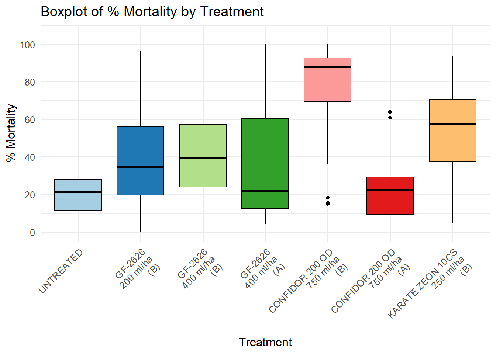
ggplot(arbol1, aes(x = Trtf, y = mortalidad, fill = Trtf)) +
geom_violin(color = "black") +
scale_y_continuous(limits = c(0, 105), breaks = seq(0, 100, 20)) +
scale_x_discrete(labels = c(
"UNTREATED",
"GF-2626\n200 ml/ha\n(B)",
"GF-2626\n400 ml/ha\n(B)",
"GF-2626\n400 ml/ha\n(A)",
"CONFIDOR 200 OD\n750 ml/ha\n(B)",
"CONFIDOR 200 OD\n750 ml/ha\n(A)",
"KARATE ZEON 10CS\n250 ml/ha\n(B)"
)) +
scale_fill_manual(values = c(
"#A6CEE3", "#1F78B4", "#B2DF8A", "#33A02C",
"#FB9A99", "#E31A1C", "#FDBF6F"
)) +
labs(
title = "Violinplot of % Mortality by Treatment",
x = "Treatment",
y = "% Mortality"
) +
theme_minimal(base_size = 12) +
theme(
legend.position = "none",
axis.text.x = element_text(angle = 45, hjust = 1)
)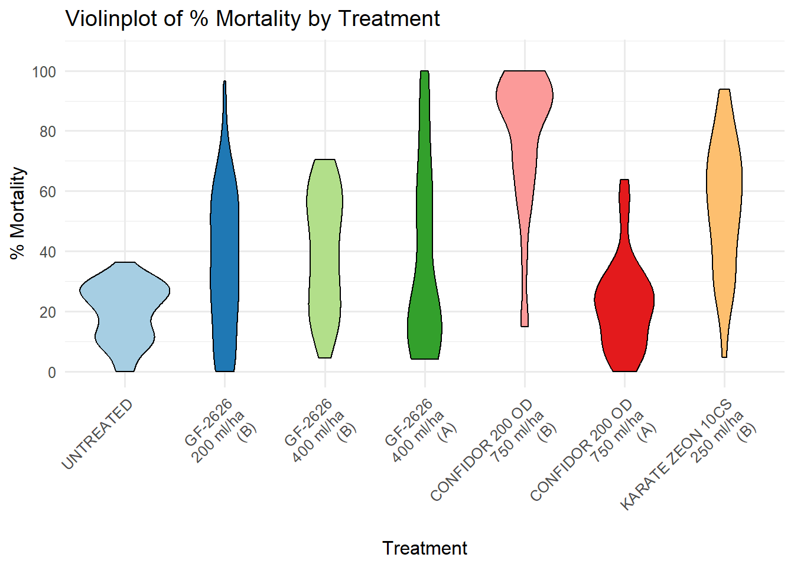
2.3 P1 - ¿Qué insecticida es más efectivo? Planteamiento de varios modelos lineales generalizados
2.3.1 ¿Qué distribución podría fittear bien los datos?
Vemos en detalle qué modelo puede fittear bien los residuos con la función descdist del paquete fitdistrplus:
library(fitdistrplus)
descdist(arbol1$mortalidad, boot = 1000)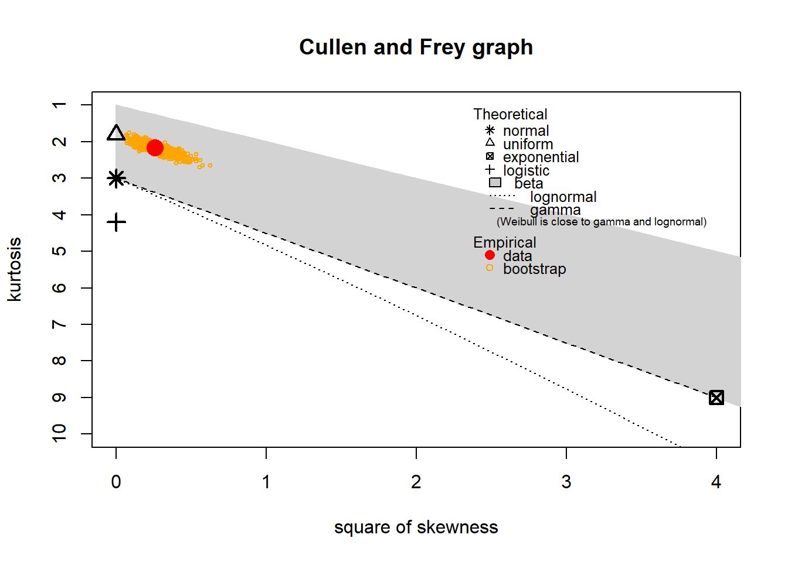
summary statistics
------
min: 0 max: 100
median: 33.04598
mean: 41.18343
estimated sd: 28.00391
estimated skewness: 0.5073424
estimated kurtosis: 2.15807 Así, ahora probaremos varios glms para ver cuál fittea mejor el modelo.
2.3.2 Modelo 1: Modelo lineal mixto con lmer
Usamos la función lmer del paquete lme4 para ver nuestro primer modelo y printeamos un summary inicial del mismo:
library(lme4)
#Modelo 1 (lmer, modelo lineal mixto, family = gaussian)
modelo_lmer <- lmer(mortalidad ~ Trtf + (1|PLOTf), data = arbol1)
print(summary(modelo_lmer))Linear mixed model fit by REML. t-tests use Satterthwaite's method [
lmerModLmerTest]
Formula: mortalidad ~ Trtf + (1 | PLOTf)
Data: arbol1
REML criterion at convergence: 2960.2
Scaled residuals:
Min 1Q Median 3Q Max
-2.90964 -0.60975 0.06809 0.61705 2.71206
Random effects:
Groups Name Variance Std.Dev.
PLOTf (Intercept) 61.03 7.812
Residual 408.14 20.202
Number of obs: 336, groups: PLOTf, 28
Fixed effects:
Estimate Std. Error df t value Pr(>|t|)
(Intercept) 19.750 4.874 21.000 4.052 0.000574 ***
Trtf1 15.852 6.893 21.000 2.300 0.031827 *
Trtf2 20.290 6.893 21.000 2.943 0.007762 **
Trtf3 17.855 6.893 21.000 2.590 0.017081 *
Trtf4 57.838 6.893 21.000 8.390 3.81e-08 ***
Trtf5 3.059 6.893 21.000 0.444 0.661740
Trtf6 35.139 6.893 21.000 5.098 4.76e-05 ***
---
Signif. codes: 0 '***' 0.001 '**' 0.01 '*' 0.05 '.' 0.1 ' ' 1
Correlation of Fixed Effects:
(Intr) Trtf1 Trtf2 Trtf3 Trtf4 Trtf5
Trtf1 -0.707
Trtf2 -0.707 0.500
Trtf3 -0.707 0.500 0.500
Trtf4 -0.707 0.500 0.500 0.500
Trtf5 -0.707 0.500 0.500 0.500 0.500
Trtf6 -0.707 0.500 0.500 0.500 0.500 0.500Usamos la librería DHARMa para estudiar si los residuos siguen la distribución apropiada y hay homogeneidad de varianzas dentro de los grupos y entre los grupos:
library(DHARMa)
residuos_simulados1 <- simulateResiduals(fittedModel = modelo_lmer)
plot(residuos_simulados1)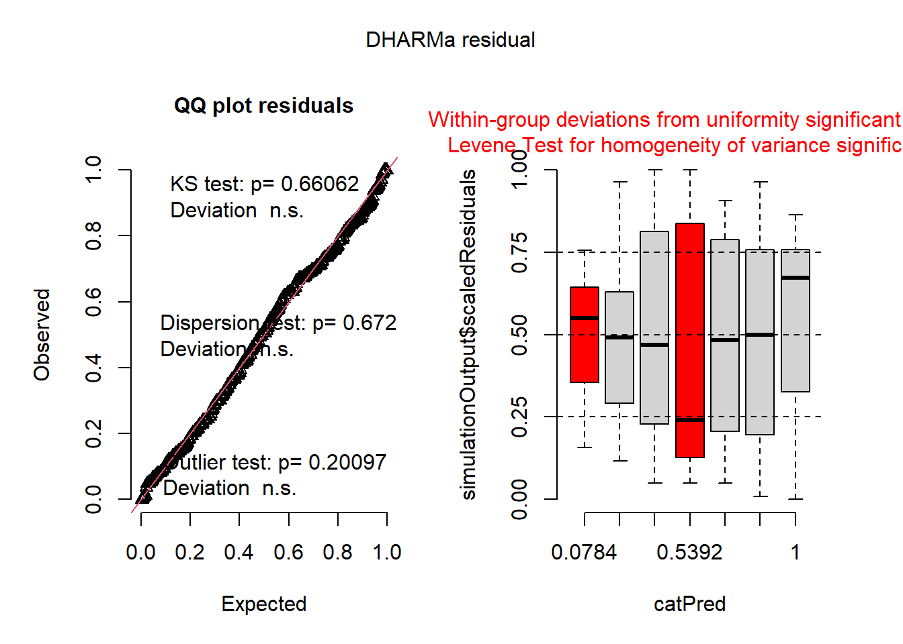
La normalidad de los residuos se cumple pero no así la homocedasticidad. En cualquier caso seguimos analizando este modelo.
Vemos el \(R^2\) marginal (porcentaje de varianza explicada por efectos fijos) y condicional (porcentaje de varianza explicada por efectos fijos + aleatorios) para el factor fijo Trt y el aleatorio Plots. Como estamos en un modelo lineal mixto, no hace falta añadir la varianza del enlace con distribución, ya que el enlace es la identidad y estamos en el caso gaussiano:
# Instalar si es necesario
# install.packages("MuMIn")
library(MuMIn)
# Calcular R² marginal (efectos fijos) y condicional (fijos + aleatorios)
r2_values <- r.squaredGLMM(modelo_lmer)
# Extraer R² marginal (porcentaje de variabilidad explicada por Trtf)
porcentaje_trtf <- r2_values[1, "R2m"] * 100
print(paste("Trtf explains", round(porcentaje_trtf, 2), "% de la variabilidad"))[1] "Trtf explains 41.84 % de la variabilidad"porcentaje_total <- r2_values[1, "R2c"] * 100
print(paste("Trtf+Plotf explica el", round(porcentaje_total, 2), "% de la variabilidad"))[1] "Trtf+Plotf explica el 49.4 % de la variabilidad"porcentaje_plotf <- porcentaje_total - porcentaje_trtf
print(paste("Plotf explica el", round(porcentaje_plotf, 2), "% de la variabilidad"))[1] "Plotf explica el 7.57 % de la variabilidad"Podemos también ver los intervalos de confianza: de los coeficientes:
confint(modelo_lmer, method = "profile")Computing profile confidence intervals ... 2.5 % 97.5 %
.sig01 3.042609 9.627538
.sigma 18.706204 21.909120
(Intercept) 11.184562 28.315822
Trtf1 3.738516 27.965776
Trtf2 8.176176 32.403436
Trtf3 5.741029 29.968289
Trtf4 45.723887 69.951147
Trtf5 -9.054495 15.172765
Trtf6 23.025765 47.253025Y un análisis de la deviance con el test \(\chi^2\) proporcionado por el test de Wald (tipo II):
Anova(modelo_lmer)Analysis of Deviance Table (Type II Wald chisquare tests)
Response: mortalidad
Chisq Df Pr(>Chisq)
Trtf 99.136 6 < 2.2e-16 ***
---
Signif. codes: 0 '***' 0.001 '**' 0.01 '*' 0.05 '.' 0.1 ' ' 1De forma similar pero usando el test de razón de verosimilitudes (TRV) con el estadístico \(\Lambda\) correspondiente que aproxima a una \(\chi^2(6)\) en vez del test de Wald (tipo II) que también usa \(\chi^2(6)\):
Vemos las diferencias entre las medias marginales más en detalle con emeans usando el test FDR:
library(emmeans)
arbol1$Trtf <- factor(arbol1$Trtf,
levels = c("7", "1", "2", "3", "4", "5", "6"))
emmeans_trat11 <- emmeans(modelo_lmer, ~ Trtf)Registered S3 methods overwritten by 'broom':
method from
nobs.fitdistr MuMIn
nobs.multinom MuMInemmeans_trat11 Trtf emmean SE df lower.CL upper.CL
7 19.8 4.87 21 9.61 29.9
1 35.6 4.87 21 25.47 45.7
2 40.0 4.87 21 29.90 50.2
3 37.6 4.87 21 27.47 47.7
4 77.6 4.87 21 67.45 87.7
5 22.8 4.87 21 12.67 32.9
6 54.9 4.87 21 44.75 65.0
Degrees-of-freedom method: kenward-roger
Confidence level used: 0.95 comparaciones11 <- pairs(emmeans_trat11, adjust = "fdr")
comparaciones11 contrast estimate SE df t.ratio p.value
Trtf7 - Trtf1 -15.85 6.89 21 -2.300 0.0477
Trtf7 - Trtf2 -20.29 6.89 21 -2.943 0.0181
Trtf7 - Trtf3 -17.85 6.89 21 -2.590 0.0326
Trtf7 - Trtf4 -57.84 6.89 21 -8.390 <.0001
Trtf7 - Trtf5 -3.06 6.89 21 -0.444 0.7314
Trtf7 - Trtf6 -35.14 6.89 21 -5.098 0.0002
Trtf1 - Trtf2 -4.44 6.89 21 -0.644 0.6145
Trtf1 - Trtf3 -2.00 6.89 21 -0.290 0.7743
Trtf1 - Trtf4 -41.99 6.89 21 -6.091 <.0001
Trtf1 - Trtf5 12.79 6.89 21 1.856 0.0958
Trtf1 - Trtf6 -19.29 6.89 21 -2.798 0.0226
Trtf2 - Trtf3 2.44 6.89 21 0.353 0.7638
Trtf2 - Trtf4 -37.55 6.89 21 -5.447 0.0001
Trtf2 - Trtf5 17.23 6.89 21 2.500 0.0336
Trtf2 - Trtf6 -14.85 6.89 21 -2.154 0.0573
Trtf3 - Trtf4 -39.98 6.89 21 -5.800 <.0001
Trtf3 - Trtf5 14.80 6.89 21 2.146 0.0573
Trtf3 - Trtf6 -17.28 6.89 21 -2.507 0.0336
Trtf4 - Trtf5 54.78 6.89 21 7.947 <.0001
Trtf4 - Trtf6 22.70 6.89 21 3.293 0.0091
Trtf5 - Trtf6 -32.08 6.89 21 -4.654 0.0004
Degrees-of-freedom method: kenward-roger
P value adjustment: fdr method for 21 tests plot(comparaciones11)
Veo las letras que le corresponden a cada tratamiento:
library(multcomp)
library(multcompView)
cld(emmeans_trat11, Letters = letters, adjust = "fdr") Trtf emmean SE df lower.CL upper.CL .group
7 19.8 4.87 21 5.23 34.3 a
5 22.8 4.87 21 8.28 37.3 ab
1 35.6 4.87 21 21.08 50.1 bc
3 37.6 4.87 21 23.08 52.1 bc
2 40.0 4.87 21 25.52 54.6 cd
6 54.9 4.87 21 40.36 69.4 d
4 77.6 4.87 21 63.06 92.1 e
Degrees-of-freedom method: kenward-roger
Confidence level used: 0.95
Conf-level adjustment: bonferroni method for 7 estimates
P value adjustment: fdr method for 21 tests
significance level used: alpha = 0.05
NOTE: If two or more means share the same grouping symbol,
then we cannot show them to be different.
But we also did not show them to be the same. Es un modelo relativamente bueno, es verdad que la homogeneidad falla pero al menos tenemos normalidad, con lo que la eficiencia del test bajará pero nos podría servir. Vemos que el mayor efecto respecto al control es con el tratamiento 4, seguido del 6 y el 2 (sin diferencia entre estos estadísticamente significativa).
library(dplyr)
letras <- arbol1 %>%
group_by(Trtf) %>%
summarise(y.pos = max(mortalidad, na.rm = TRUE) + 5) %>%
left_join(
data.frame(
Trtf = factor(c("7", "1", "2", "3", "4", "5", "6"),
levels = levels(arbol1$Trtf)),
letra = c("a", "bc", "cd", "bc", "e", "ab", "d")
), by = "Trtf"
)
ggplot(arbol1, aes(x = Trtf, y = mortalidad, fill = Trtf)) +
geom_boxplot(color = "black") +
geom_text(data = letras, aes(x = Trtf, y = y.pos, label = letra),
inherit.aes = FALSE, vjust = 0) +
scale_y_continuous(limits = c(0, 110), breaks = seq(0,100,20)) +
scale_x_discrete(labels = c("Control", "1", "2", "3", "4", "5", "6")) +
scale_fill_manual(values = c(
"#A6CEE3", "#1F78B4", "#B2DF8A", "#33A02C",
"#FB9A99", "#E31A1C", "#FDBF6F"
)) +
labs(title = "Boxplot % Mortalidad", x = expression("Tratamiento"), y = "% Mortalidad") +
theme_minimal() +
theme(legend.position = "none")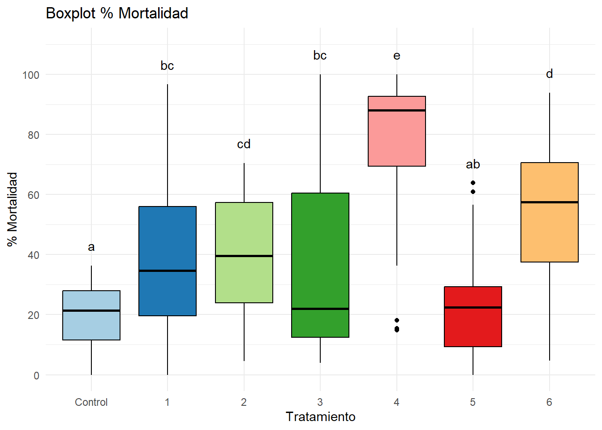
library(ggplot2)
library(dplyr)
# Asumiendo que 'letras' ya está creado como antes
ggplot(arbol1, aes(x = Trtf, y = mortalidad, color = Trtf)) +
geom_jitter(width = 0.15, size = 2, alpha = 0.7) + # puntos con algo de dispersión horizontal
geom_text(data = letras, aes(x = Trtf, y = y.pos, label = letra),
inherit.aes = FALSE, vjust = 0) +
scale_y_continuous(limits = c(-1, 110), breaks = seq(0, 100, 20)) +
scale_x_discrete(labels = c("7" = "Control", "1" = "1", "2" = "2", "3" = "3",
"4" = "4", "5" = "5", "6" = "6")) +
scale_color_manual(values = c(
"#A6CEE3", "#1F78B4", "#B2DF8A", "#33A02C",
"#FB9A99", "#E31A1C", "#FDBF6F"
)) +
labs(title = "Dotplot % Mortalidad", x = expression("Tratamiento"), y = "% Mortalidad") +
theme_minimal() +
theme(legend.position = "none")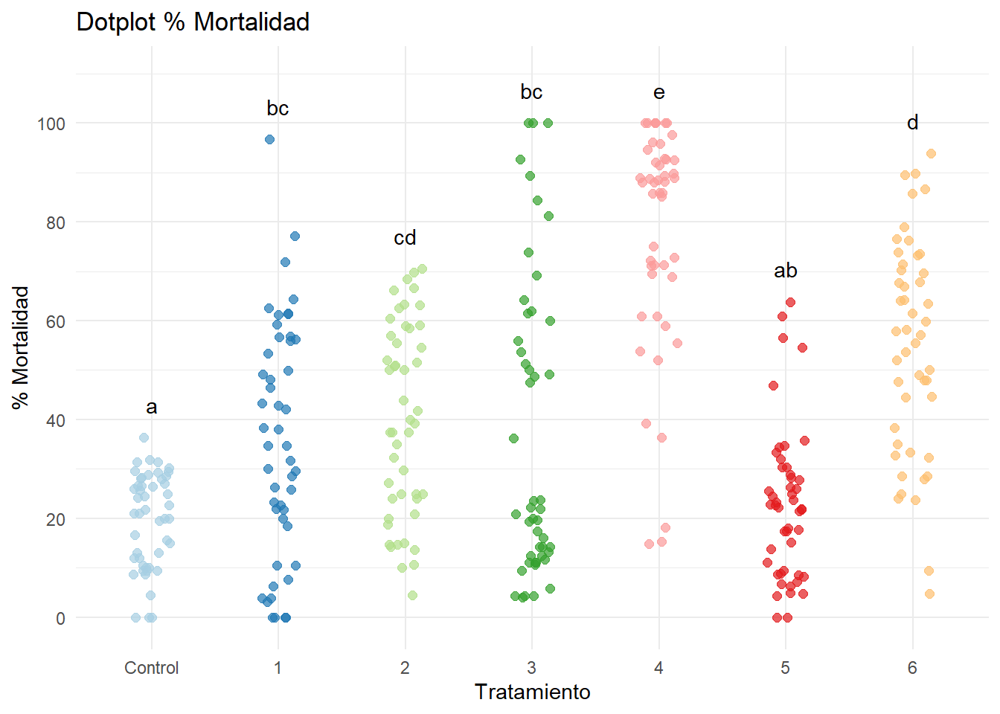
Ahora los superponemos y los ponemos bonito (y en inglés):
library(ggplot2)
library(dplyr)
# Generate label positions and group letters
arbletras <- arbol1 %>%
group_by(Trtf) %>%
summarise(y.pos = max(mortalidad, na.rm = TRUE) + 9) %>%
left_join(
data.frame(
Trtf = factor(c("7", "1", "2", "3", "4", "5", "6"),
levels = levels(arbol1$Trtf)),
arbletter = c("a", "bc", "cd", "bc", "e", "ab", "d")
), by = "Trtf"
)
# Sampled data for dotplot (e.g., 70% of points)
set.seed(123) # for reproducibility
arbol1_jitter <- arbol1 %>%
group_by(Trtf) %>%
sample_frac(1) %>%
ungroup()
# Plot
ggplot(arbol1, aes(x = Trtf, y = mortalidad)) +
# Thinner transparent boxplots with colored borders
geom_boxplot(aes(color = Trtf), fill = NA, outlier.shape = NA, linewidth = 0.5) +
# Jittered points (reduced number, smaller, filled with their color)
geom_jitter(
data = arbol1_jitter,
aes(color = Trtf, fill = Trtf),
width = 0.15, size = 1.2, alpha = 0.8,
shape = 21, stroke = 0.1
) +
# Significance letters
geom_text(data = arbletras, aes(x = Trtf, y = y.pos, label = arbletter),
inherit.aes = FALSE, vjust = 0) +
# Axis and labels
scale_y_continuous(limits = c(-1, 120), breaks = seq(0, 100, 20)) +
scale_x_discrete(labels = c(
"7" = "UNTREATED",
"1" = "GF-2626 (200 ml/ha, FOL)",
"2" = "GF-2626 (400 ml/ha, FOL)",
"3" = "GF-2626 (400 ml/ha, INJ)",
"4" = "CONFIDOR 200 OD (750 ml/ha, FOL)",
"5" = "CONFIDOR 200 OD (750 ml/ha, INJ)",
"6" = "KARATE ZEON 10CS (250 ml/ha, FOL)"
)) +
scale_color_manual(values = c(
"7" = "#A6CEE3", "1" = "#1F78B4", "2" = "#B2DF8A", "3" = "#33A02C",
"4" = "#FB9A99", "5" = "#E31A1C", "6" = "#FDBF6F"
)) +
scale_fill_manual(values = c(
"7" = "#A6CEE3", "1" = "#1F78B4", "2" = "#B2DF8A", "3" = "#33A02C",
"4" = "#FB9A99", "5" = "#E31A1C", "6" = "#FDBF6F"
)) +
labs(
x = "Treatment",
y = "% Mortality"
) +
theme_minimal(base_size = 12) +
theme(
legend.position = "none",
axis.text.x = element_text(size = 8, angle = 45, hjust = 1),
panel.grid.major = element_line(size = 0.2),
panel.grid.minor = element_line(size = 0.1)
)Warning: The `size` argument of `element_line()` is deprecated as of ggplot2 3.4.0.
ℹ Please use the `linewidth` argument instead.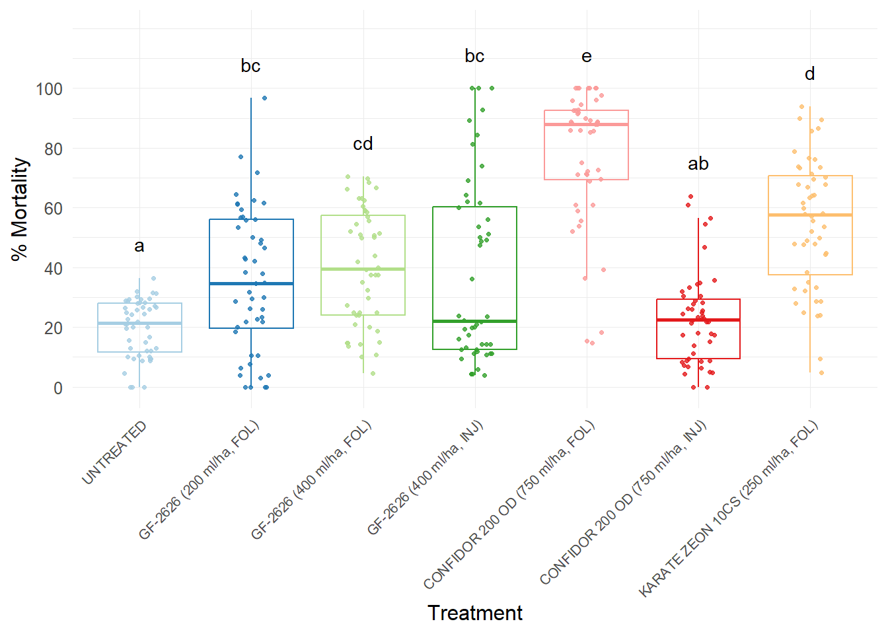
Ahora para finalizar, procedemos a extraer las predicciones de los efectos aleatorios del modelo (sus esperanzas condicionales que minimizarían el error cuadrático medio), también conocidas como best linear unbiased predictions (BLUPs). Estas estimaciones nos permiten conocer, por ejemplo, cómo varía la respuesta en cada nivel del efecto aleatorio una vez tenida en cuenta la estructura fija del modelo. Dicho de otro modo, los BLUPs representan los desvíos específicos de cada unidad (como sujetos, escuelas o grupos) respecto al promedio poblacional predicho por los efectos fijos, ajustados por la varianza estimada de los componentes aleatorios. Obtendremos también las parcelas influyentes (que hemos considerado como tales si el BLUP difiere al menos 2 desviaciones estándar respecto a la media).
# Extraer efectos aleatorios (BLUPs)
library(lme4)
blups <- ranef(modelo_lmer)$PLOTf
colnames(blups) <- "BLUP"
# Identificar parcelas con efectos extremos (más de 2 SD de la media)
blups$DesvStd <- scale(blups$BLUP)
parcelas_influyentes <- rownames(blups)[abs(blups$DesvStd) > 1.5]
print(parcelas_influyentes)[1] "101" "102" "206"Por último, graficamos los BLUPs con sus intervalos de confianza:
library(lattice)
dotplot(ranef(modelo_lmer, condVar = TRUE))$PLOTf
library(lme4)
library(ggplot2)
library(dplyr)
# Step 1: Extract BLUPs with conditional variances
blups <- ranef(modelo_lmer, condVar = TRUE)
blup_df <- as.data.frame(blups$PLOTf)
blup_df$PLOTf <- rownames(blups$PLOTf)
# Extract conditional variances and calculate SEs
post_vars <- attr(blups$PLOTf, "postVar")[1, 1, ] # vector of variances
se <- sqrt(post_vars)
blup_df$se <- se
blup_df$lower <- blup_df$`(Intercept)` - 2 * se
blup_df$upper <- blup_df$`(Intercept)` + 2 * se
# Step 2: Ensure only one row per PLOTf in arbol1
Trtf <- arbol1[!duplicated(arbol1$PLOTf), c("PLOTf", "Trtf")]
# Step 3: Merge treatment info
blup_df <- merge(blup_df, Trtf, by = "PLOTf")
# Step 4: Order factor PLOTf by BLUP
blup_df <- blup_df %>%
arrange(`(Intercept)`) %>%
mutate(PLOTf = factor(PLOTf, levels = PLOTf))
# Step 5: Plot with error bars
ggplot(blup_df, aes(x = `(Intercept)`, y = PLOTf, color = Trtf)) +
geom_point(size = 2) +
geom_errorbarh(aes(xmin = lower, xmax = upper), height = 0.2, linewidth = 0.5) +
scale_color_manual(
values = c(
"#A6CEE3", "#1F78B4", "#B2DF8A", "#33A02C",
"#FB9A99", "#E31A1C", "#FDBF6F"
),
labels = c(
"UNTREATED",
"GF-2626 (200 ml/ha, FOL)",
"GF-2626 (400 ml/ha, FOL)",
"GF-2626 (400 ml/ha, INJ)",
"CONFIDOR 200 OD (750 ml/ha, FOL)",
"CONFIDOR 200 OD (750 ml/ha, INJ)",
"KARATE ZEON 10CS (250 ml/ha, FOL)"
)
) +
labs(
title = "BLUPs by Plot with 95% Confidence Intervals",
x = "Intercept BLUP",
y = "Plot (PLOTf)",
color = "Treatment"
) +
theme_minimal(base_size = 12) +
theme(
axis.text.y = element_text(size = 6),
legend.position = "right"
)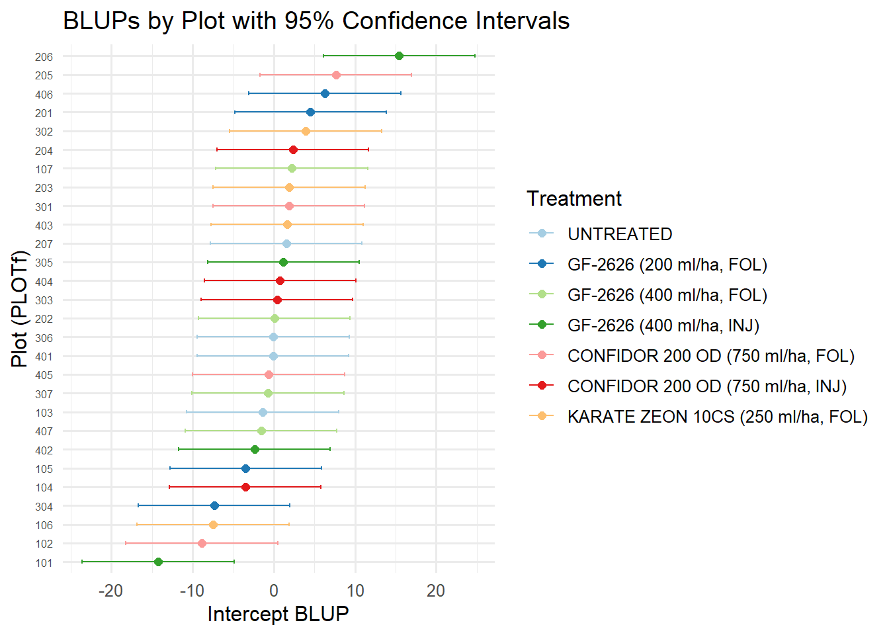
Vemos que el efecto aleatorio de la parcela tiene un efecto significativo en la mortalidad además del efecto fijo del tratamiento como tal, ya que tenemos parcelas a las que se les aplica el mismo tratamiento y cuyos BLUPs para el intercepto/control (mejores predictores lineales insesgados) son completamente opuestos (uno muy por debajo del promedio y otro muy por encima del promedio), como se ve entre las parcelas 101 y 206 para el mismo tratamiento 3, por ejemplo. Sin embargo, también vemos que hay parcelas como la 303 y 404 a las que se les aplica el mismo tratamiento pero no presentan diferencias entre los predictores del intercepto significativas, lo que nos indica que aquí el efecto aleatorio de las parcelas es muy pequeño, en contraste con lo que pasaba con las parcelas 101 y 206. También como referencia podemos coger los boxplots y barplot de la sección anterior.
En resumen, la interpretación es:
BLUP (eje X):
Representa la desviación de cada parcela respecto al promedio general
Valores positivos = parcelas con mortalidad por encima del promedio
Valores negativos = parcelas con mortalidad por debajo del promedio
Intervalos de confianza:
Si el intervalo cruza cero: La parcela no difiere significativamente del promedio
Si el intervalo no cruza cero: Efecto significativo (positivo o negativo)
Patrones por tratamiento:
Agrupamientos de colores similares indicarían que ciertos tratamientos tienden a tener parcelas con efectos similares
Dispersión de colores mezclados sugeriría que la variabilidad entre parcelas no está fuertemente asociada a los tratamientos
2.3.3 Modelo 1.5: Transformación Box-Cox con lmer
Transformamos la variable mortalidad. Hallamos el lambda óptimo para la transformación Box-Cox:
#Transformo con Box-Cox
library(MASS)
boxcox_result <- boxcox(arbol1$mortalidad+0.000001 ~ arbol1$Trtf, lambda = seq(-4, 4, 0.1))
# El gráfico te indicará el lambda óptimo
lambda_optimo <- boxcox_result$x[which.max(boxcox_result$y)]
print(lambda_optimo) #0.44444444[1] 0.4444444Transformamos mortalidad:
if(abs(lambda_optimo) < 0.01) {
arbol1$mortalidad_trans <- log(arbol1$mortalidad + 1) # +1 para evitar log(0)
} else {
arbol1$mortalidad_trans <- ((arbol1$mortalidad + 1)^lambda_optimo - 1)/lambda_optimo
}Comprobamos el modelo con la variable mortalidad transformada:
#Modelo 1.5 (modelo lineal mixto + transformación Box-Cox (mortalidad), family = gaussian)
modelo_lmert <- lmer(mortalidad_trans ~ Trtf + (1|Trtf:PLOTf) + (1|periodof), data = arbol1)
summary(modelo_lmert)Linear mixed model fit by REML. t-tests use Satterthwaite's method [
lmerModLmerTest]
Formula: mortalidad_trans ~ Trtf + (1 | Trtf:PLOTf) + (1 | periodof)
Data: arbol1
REML criterion at convergence: 1523.3
Scaled residuals:
Min 1Q Median 3Q Max
-3.6083 -0.6282 0.0300 0.6256 3.6437
Random effects:
Groups Name Variance Std.Dev.
Trtf:PLOTf (Intercept) 0.9761 0.988
periodof (Intercept) 4.3369 2.083
Residual 4.8119 2.194
Number of obs: 336, groups: Trtf:PLOTf, 28; periodof, 6
Fixed effects:
Estimate Std. Error df t value Pr(>|t|)
(Intercept) 6.0659 1.0330 9.9606 5.872 0.000159 ***
Trtf1 1.9831 0.8298 21.0002 2.390 0.026308 *
Trtf2 3.0284 0.8298 21.0002 3.650 0.001497 **
Trtf3 2.1901 0.8298 21.0002 2.639 0.015333 *
Trtf4 7.1004 0.8298 21.0002 8.557 2.75e-08 ***
Trtf5 0.3753 0.8298 21.0002 0.452 0.655683
Trtf6 4.8225 0.8298 21.0002 5.812 9.07e-06 ***
---
Signif. codes: 0 '***' 0.001 '**' 0.01 '*' 0.05 '.' 0.1 ' ' 1
Correlation of Fixed Effects:
(Intr) Trtf1 Trtf2 Trtf3 Trtf4 Trtf5
Trtf1 -0.402
Trtf2 -0.402 0.500
Trtf3 -0.402 0.500 0.500
Trtf4 -0.402 0.500 0.500 0.500
Trtf5 -0.402 0.500 0.500 0.500 0.500
Trtf6 -0.402 0.500 0.500 0.500 0.500 0.500Anova(modelo_lmert)Analysis of Deviance Table (Type II Wald chisquare tests)
Response: mortalidad_trans
Chisq Df Pr(>Chisq)
Trtf 108.61 6 < 2.2e-16 ***
---
Signif. codes: 0 '***' 0.001 '**' 0.01 '*' 0.05 '.' 0.1 ' ' 1library(DHARMa)
residuos_simulados1h <- simulateResiduals(fittedModel = modelo_lmert)
plot(residuos_simulados1h)
No nos sirve, no tenemos homogeneidad de varianza entre grupos ni KS se cumple.
2.3.4 Modelo 2: Modelo lineal generalizado mixto + Transformación datos, family = beta)
Notemos que el soporte de la distribución beta es \((0,1)\) por lo que tendremos que transformar los datos de la siguiente manera:
\[ \begin{align} mortalidad_{esc} &= \frac{mortalidad - \min(mortalidad)}{\max(mortalidad) - \min(mortalidad)}\\ &= \frac{mortalidad}{100} \end{align} \]
Y posteriormente, para evitar valores de 0 y 1 en \(mortalidad_{esc}\), tomamos \(\epsilon = 10^{-4} > 0\) y cambiamos los valores del vector \(mortalidad_{esc}\) que valgan 0 por \(\epsilon\) y los que valgan 1 por \(1-\epsilon\):
# Escalado lineal al rango (0, 1)
arbol1$mortalidad_esc <- (arbol1$mortalidad - min(arbol1$mortalidad)) / (max(arbol1$mortalidad) - min(arbol1$mortalidad))
# Ajustar valores 0 y 1
epsilon <- 1e-4
arbol1$mortalidad_esc[arbol1$mortalidad_esc == 0] <- epsilon
arbol1$mortalidad_esc[arbol1$mortalidad_esc == 1] <- 1 - epsilonAhora fitteamos el modelo y vemos si los residuos cumplen las hipótesis del modelo.
library(glmmTMB)
library(statmod)
modelo_glmmbeta <- glmmTMB(mortalidad_esc ~ Trtf + (1|Trtf:PLOTf) + (1|periodof), family = beta_family(), data = arbol1)
summary(modelo_glmmbeta) Family: beta ( logit )
Formula: mortalidad_esc ~ Trtf + (1 | Trtf:PLOTf) + (1 | periodof)
Data: arbol1
AIC BIC logLik -2*log(L) df.resid
-330.6 -292.4 175.3 -350.6 326
Random effects:
Conditional model:
Groups Name Variance Std.Dev.
Trtf:PLOTf (Intercept) 0.2401 0.4900
periodof (Intercept) 0.4528 0.6729
Number of obs: 336, groups: Trtf:PLOTf, 28; periodof, 6
Dispersion parameter for beta family (): 4.99
Conditional model:
Estimate Std. Error z value Pr(>|z|)
(Intercept) -1.32057 0.39109 -3.377 0.000734 ***
Trtf1 0.50613 0.38895 1.301 0.193157
Trtf2 0.90870 0.38995 2.330 0.019789 *
Trtf3 1.06466 0.38947 2.734 0.006264 **
Trtf4 2.91661 0.39665 7.353 1.94e-13 ***
Trtf5 0.06288 0.39256 0.160 0.872736
Trtf6 1.49174 0.39149 3.810 0.000139 ***
---
Signif. codes: 0 '***' 0.001 '**' 0.01 '*' 0.05 '.' 0.1 ' ' 1Anova(modelo_glmmbeta)Analysis of Deviance Table (Type II Wald chisquare tests)
Response: mortalidad_esc
Chisq Df Pr(>Chisq)
Trtf 76.275 6 2.097e-14 ***
---
Signif. codes: 0 '***' 0.001 '**' 0.01 '*' 0.05 '.' 0.1 ' ' 1DHARMa:
residuos_simulados3 <- simulateResiduals(fittedModel = modelo_glmmbeta)
plot(residuos_simulados3)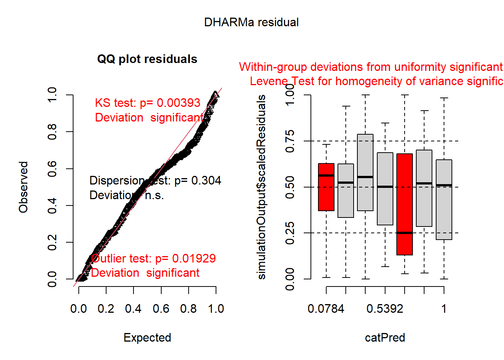
Falla las condiciones de homogeneidad de varianzas entre grupos y dentro de los grupos y también la hipótesis sobre la distribución de los residuos.
2.3.5 Modelo 3 (inferencia bayesiana con brms)
library(brms)
library(rstan)
#Comentar si va lento
# modelo_brms <- brm(
# mortalidad ~ Trtf + (1|Trtf:PLOTf) + (1|periodof),
# data = arbol1,
# family = gaussian(), # Cambia a binomial, poisson, etc., según tu variable respuesta
# chains = 4, # Número de cadenas MCMC
# iter = 2000, # Número de iteraciones por cadena
# warmup = 1000, # Iteraciones de calentamiento
# cores = 4, # Núcleos a usar en paralelo
# seed = 123 # Semilla para reproducibilidad
# )
#
# summary(modelo_brms)Visualizar posterior completo de los parámetros:
# plot(conditional_effects(modelo_brms), ask = FALSE)
#
# plot(modelo_brms, ask = FALSE) # Densidades posteriores + cadenas2.3.6 Modelo 4: modelo lineal con nlme con heterocedasticidad
Hacemos un modelo lineal mixto ajustado con pesos en los residuos para atajar la heterocedasticidad.
library(nlme)
modelo_11_nlme <- lme(
mortalidad ~ Trtf,
random = ~1 | PLOTf,
data = arbol1,
weights = varIdent(form = ~1 | Trtf), # Permite varianzas distintas por nivel de Trtf
)
summary(modelo_11_nlme)Linear mixed-effects model fit by REML
Data: arbol1
AIC BIC logLik
2939.663 2996.604 -1454.831
Random effects:
Formula: ~1 | PLOTf
(Intercept) Residual
StdDev: 3.690294 29.26399
Variance function:
Structure: Different standard deviations per stratum
Formula: ~1 | Trtf
Parameter estimates:
3 4 7 5 1 6 2
1.0000000 0.7617752 0.3296426 0.5190040 0.7914272 0.7284863 0.6657033
Fixed effects: mortalidad ~ Trtf
Value Std.Error DF t-value p-value
(Intercept) 19.75019 2.311553 308 8.544124 0.0000
Trtf1 15.85215 4.463502 21 3.551504 0.0019
Trtf2 20.28981 4.080980 21 4.971798 0.0001
Trtf3 17.85466 5.156463 21 3.462579 0.0023
Trtf4 57.83752 4.370487 21 13.233655 0.0000
Trtf5 3.05914 3.681530 21 0.830941 0.4154
Trtf6 35.13939 4.268029 21 8.233168 0.0000
Correlation:
(Intr) Trtf1 Trtf2 Trtf3 Trtf4 Trtf5
Trtf1 -0.518
Trtf2 -0.566 0.293
Trtf3 -0.448 0.232 0.254
Trtf4 -0.529 0.274 0.300 0.237
Trtf5 -0.628 0.325 0.356 0.281 0.332
Trtf6 -0.542 0.280 0.307 0.243 0.286 0.340
Standardized Within-Group Residuals:
Min Q1 Med Q3 Max
-2.66252225 -0.77443275 0.04126435 0.72864408 2.68405714
Number of Observations: 336
Number of Groups: 28 Veo test de Kolmogorov (n > 50) para ver normalidad (aquí DHARMa no funciona). Nótese que normalizamos los residuos para la validación del modelo por las tres razones siguientes:
2.3.6.1 1. Los residuos crudos (type = "response") no tienen en cuenta la estructura de varianza modelada
En modelos
lme, si modelas diferentes varianzas para cada grupo (comoTrtf), los residuos crudos reflejan esa heterogeneidad: pueden parecer más dispersos en unos tratamientos que en otros.Esto distorsiona el diagnóstico de normalidad porque mide residuos con escalas distintas, lo que puede llevar a rechazar la normalidad cuando en realidad es por culpa de la varianza no homogénea (ya modelada).
2.3.6.2 2. Los residuos normalizados sí están ajustados por la heterocedasticidad
Los residuos normalizados (
type = "normalized") se dividen por el desvío estándar estimado en cada nivel/grupo, ajustando por la estructuravarIdentu otras (comovarPower, etc.).Esto genera residuos comparablemente escalados, apropiados para pruebas de normalidad.
2.3.6.3 3. Evaluar normalidad con residuos normalizados da una evaluación más justa del supuesto de normalidad del modelo especificado
Dado que el modelo ya permite varianzas distintas, no es justo evaluar los residuos crudos bajo el supuesto de varianza constante.
Evaluar la normalidad en los residuos normalizados te dice si, dadas las varianzas especificadas, los errores se distribuyen normalmente, que es lo que realmente importa para la validez de inferencias en
lme.
Así, hacemos un diagnóstico completo del modelo. Utilizaremos bootstrapping paramétrico sobre el estadístico de Anderson-Darling (simulamos su distribución) ya que el test original de Anderson-Darling (o Kolmogorov-Smirnov, pero AD es generalmente más robusto y potente, sobre todo en las colas de la distribución) no se debería utilizar aquí. Las pruebas clásicas de bondad del ajuste (AD, KS, CvM, etc.) NO deberían usarse directamente cuando los parámetros teóricos de la distribución se estiman a partir de los datos. Estas pruebas fueron diseñadas suponiendo que los parámetros de la distribución de referencia son conocidos de antemano y fijos, no estimados de la muestra. Si se usan los datos tanto para estimar los parámetros como para evaluar el ajuste, la distribución teórica bajo la hipótesis nula cambia: ya no es la misma que se deriva bajo el supuesto de parámetros conocidos.
Implemento una función test_ad_bootstrap_normaliz para que se pueda utilizar posteriormente:
library(nlme)
library(MuMIn)
library(goftest)
test_ad_bootstrap_normaliz <- function(modelo, breaks_stat = 30, breaks_resid = 15, n_boot = 3000, seed = 123) {
res_norm <- resid(modelo, type = "normalized")
n <- length(res_norm)
# Estadístico observado AD a partir de mis residuos normalizados
ad_obs <- goftest::ad.test(res_norm, null = "pnorm",
mean = mean(res_norm), sd = sd(res_norm))$statistic
# Bootstrap paramétrico (simulo la distribución del estadístico #AD bajo H0, o sea, suponiendo y generando residuos normales #estimando media y sd)
set.seed(seed)
ad_boot <- replicate(n_boot, {
r_sim <- rnorm(n, mean = mean(res_norm), sd = sd(res_norm))
goftest::ad.test(r_sim, null = "pnorm",
mean = mean(res_norm), sd = sd(res_norm))$statistic
})
p_boot <- mean(ad_boot >= ad_obs) #Proporción de estadísticos #simulados más extremos que el observado (me da el p-valor empírico).
# Histograma comparando la distribución del estadístico AD bajo #H0 con el valor del estadístico AD en base a mis datos
hist(ad_boot, breaks = breaks_stat, col = "gray",
main = paste("Distribución Bootstrap AD -", deparse(substitute(modelo))),
xlab = "Estadístico AD (simulado bajo H0)", probability = TRUE)
abline(v = ad_obs, col = "red", lwd = 2)
legend("topright", legend = paste("Obs =", round(ad_obs, 3)), col = "red", lwd = 2)
#Gráfico Q-Q para ver (a ojo) normalidad de los residuos
qqnorm(res_norm, main = paste("Q-Q plot residuos normalizados -", deparse(substitute(modelo))))
qqline(res_norm, col = "blue", lwd = 2)
#Histograma de los residuos normalizados en contraste con N(0,1)
hist(res_norm, breaks = breaks_resid, main = paste("Histograma residuos normalizados -", deparse(substitute(modelo))),
col = "gray", probability = TRUE)
curve(dnorm(x, mean = mean(res_norm), sd = sd(res_norm)), add = TRUE,
col = "red", lwd = 2)
# Resultado estilo htest (formato para tests estadísticos de R)
structure(
list(
statistic = c(AD = unname(ad_obs)),
p.value = p_boot,
method = paste0("Anderson-Darling con bootstrap paramétrico (", n_boot, " réplicas)"),
data.name = paste0("Residuos normalizados de ", deparse(substitute(modelo)))
),
class = "htest"
)
}Así:
test_ad_bootstrap_normaliz(modelo_11_nlme)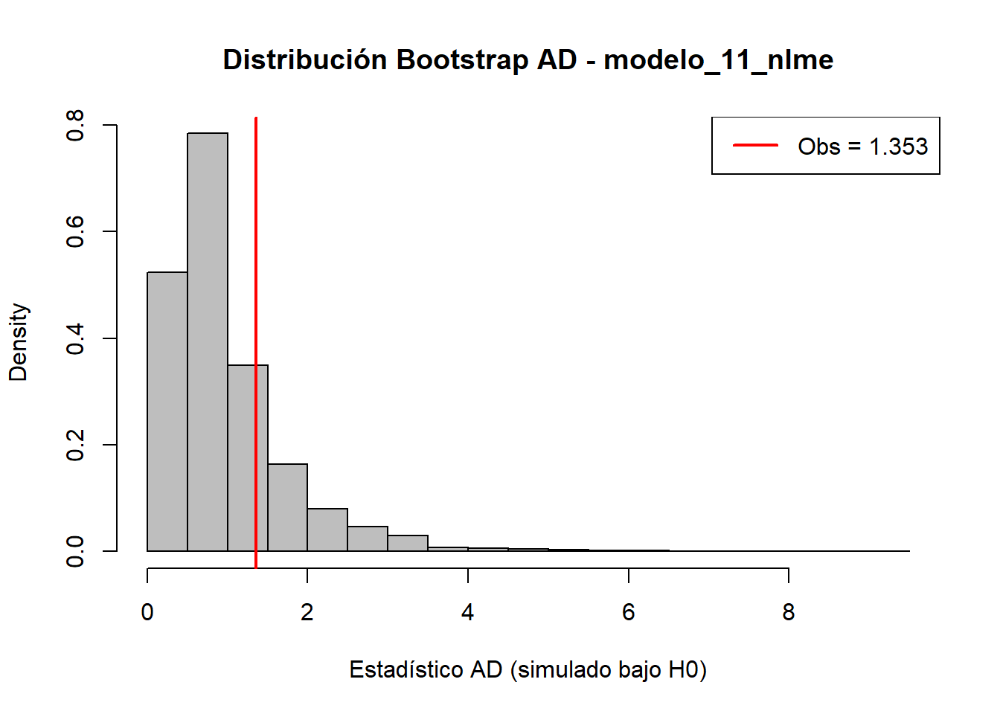
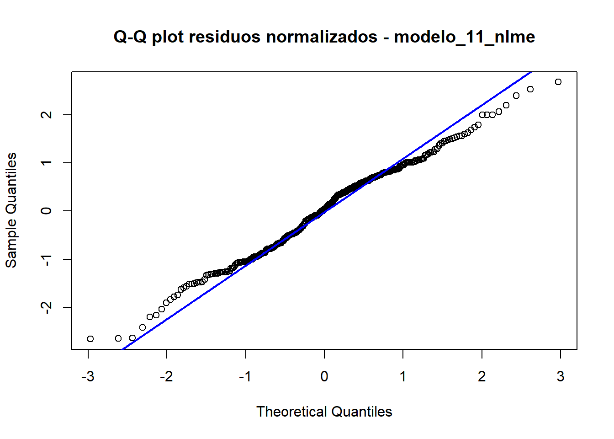
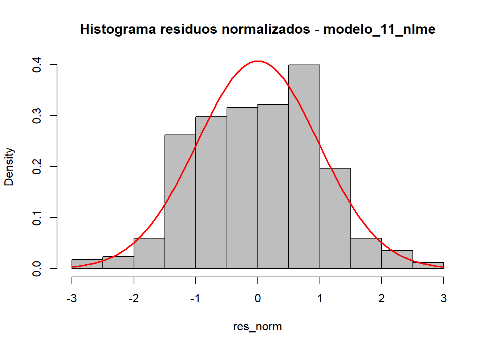
Anderson-Darling con bootstrap paramétrico (3000 réplicas)
data: Residuos normalizados de modelo_11_nlme
AD = 1.353, p-value = 0.2143# ---- 4. R² marginal y condicional (explicación del modelo) ----
r2 <- r.squaredGLMM(modelo_11_nlme)
cat("Marginal R² (Treatment):", round(r2[1, "R2m"], 3)*100, "%\n")Marginal R² (Treatment): 27.9 %cat("Conditional R² (Treatment + Plots):", round(r2[1, "R2c"]*100, 3), "%\n")Conditional R² (Treatment + Plots): 29.077 %cat("Variance proportion explained by the plots in the model:", round((r2[1, "R2c"] - r2[1, "R2m"])*100, 3), "%\n")Variance proportion explained by the plots in the model: 1.128 %Podemos suponer que el modelo verifica las hipótesis de normalidad, ya que p > 0.05. Viendo el qqplot y el histograma consideraremos que hay normalidad. Vemos además si mejora significativamente el modelo lineal mixto.
# logLik(modelo_lmer)
# logLik(modelo_11_nlme)
#Alternativa para más detalle: paso a formato nlme el modelo #homocedástico para compararlos y veo el p-valor (en este caso es mejor #claramente modelo_11_nlme)
modelo_lme <- lme(
fixed = mortalidad ~ Trtf,
random = ~1 | PLOTf,
data = arbol1
)
anova(modelo_lme, modelo_11_nlme) Model df AIC BIC logLik Test L.Ratio p-value
modelo_lme 1 9 2978.155 3012.319 -1480.077
modelo_11_nlme 2 15 2939.663 2996.604 -1454.832 1 vs 2 50.49193 <.0001El modelo que permite varianzas diferentes por tratamiento (modelo_11_nlme) mejora el ajuste. Deberíamos por tanto usar modelo_11_nlme por todo lo anterior, entonces.
Hacemos un análisis de la deviance:
Anova(modelo_11_nlme, type = "III")Analysis of Deviance Table (Type III tests)
Response: mortalidad
Chisq Df Pr(>Chisq)
(Intercept) 73.002 1 < 2.2e-16 ***
Trtf 225.524 6 < 2.2e-16 ***
---
Signif. codes: 0 '***' 0.001 '**' 0.01 '*' 0.05 '.' 0.1 ' ' 1Veamos ahora las diferencias de medias marginales con emeans:
library(emmeans)
library(multcomp)
library(multcompView)
arbol1$Trtf <- factor(arbol1$Trtf,
levels = c("7", "1", "2", "3", "4", "5", "6"))
# Estimamos medias marginales para Trtf con modelo nlme
emmeans_trat11_nlme <- emmeans(modelo_11_nlme, ~ Trtf)
print(emmeans_trat11_nlme) Trtf emmean SE df lower.CL upper.CL
7 19.8 2.31 27 15.0 24.5
1 35.6 3.82 21 27.7 43.5
2 40.0 3.36 21 33.0 47.0
3 37.6 4.61 21 28.0 47.2
4 77.6 3.71 21 69.9 85.3
5 22.8 2.87 21 16.9 28.8
6 54.9 3.59 21 47.4 62.4
Degrees-of-freedom method: containment
Confidence level used: 0.95 # Comparaciones pareadas ajustando p con FDR
comparaciones11_nlme <- pairs(emmeans_trat11_nlme, adjust = "fdr")
print(comparaciones11_nlme) contrast estimate SE df t.ratio p.value
Trtf7 - Trtf1 -15.85 4.46 21 -3.552 0.0033
Trtf7 - Trtf2 -20.29 4.08 21 -4.972 0.0002
Trtf7 - Trtf3 -17.85 5.16 21 -3.463 0.0038
Trtf7 - Trtf4 -57.84 4.37 21 -13.234 <.0001
Trtf7 - Trtf5 -3.06 3.68 21 -0.831 0.4591
Trtf7 - Trtf6 -35.14 4.27 21 -8.233 <.0001
Trtf1 - Trtf2 -4.44 5.09 21 -0.872 0.4585
Trtf1 - Trtf3 -2.00 5.99 21 -0.335 0.7413
Trtf1 - Trtf4 -41.99 5.32 21 -7.887 <.0001
Trtf1 - Trtf5 12.79 4.77 21 2.680 0.0173
Trtf1 - Trtf6 -19.29 5.24 21 -3.681 0.0027
Trtf2 - Trtf3 2.44 5.71 21 0.427 0.7076
Trtf2 - Trtf4 -37.55 5.01 21 -7.499 <.0001
Trtf2 - Trtf5 17.23 4.42 21 3.900 0.0017
Trtf2 - Trtf6 -14.85 4.92 21 -3.020 0.0098
Trtf3 - Trtf4 -39.98 5.92 21 -6.758 <.0001
Trtf3 - Trtf5 14.80 5.43 21 2.726 0.0166
Trtf3 - Trtf6 -17.28 5.84 21 -2.959 0.0105
Trtf4 - Trtf5 54.78 4.69 21 11.687 <.0001
Trtf4 - Trtf6 22.70 5.16 21 4.398 0.0006
Trtf5 - Trtf6 -32.08 4.59 21 -6.987 <.0001
Degrees-of-freedom method: containment
P value adjustment: fdr method for 21 tests # Plot de comparaciones
plot(comparaciones11_nlme)
Vemos cld:
letras11_nlme <- cld(emmeans_trat11_nlme, Letters = letters, adjust = "fdr")
print(letras11_nlme) Trtf emmean SE df lower.CL upper.CL .group
7 19.8 2.31 27 13.0 26.5 a
5 22.8 2.87 21 14.3 31.3 a
1 35.6 3.82 21 24.2 47.0 b
3 37.6 4.61 21 23.9 51.3 b
2 40.0 3.36 21 30.0 50.1 b
6 54.9 3.59 21 44.2 65.6 c
4 77.6 3.71 21 66.5 88.6 d
Degrees-of-freedom method: containment
Confidence level used: 0.95
Conf-level adjustment: bonferroni method for 7 estimates
P value adjustment: fdr method for 21 tests
significance level used: alpha = 0.05
NOTE: If two or more means share the same grouping symbol,
then we cannot show them to be different.
But we also did not show them to be the same. He hecho un gráfico con un boxplot y un dotplot superpuestos:
library(ggplot2)
library(dplyr)
# Generate label positions and group letters
arbletras <- arbol1 %>%
group_by(Trtf) %>%
summarise(y.pos = max(mortalidad, na.rm = TRUE) + 9) %>%
left_join(
data.frame(
Trtf = factor(c("7", "1", "2", "3", "4", "5", "6"),
levels = levels(arbol1$Trtf)),
arbletter = c("a", "b", "b", "b", "d", "a", "c")
), by = "Trtf"
)
# Sampled data for dotplot (e.g., 70% of points)
set.seed(123) # for reproducibility
arbol1_jitter <- arbol1 %>%
group_by(Trtf) %>%
sample_frac(1) %>%
ungroup()
# Plot
ggplot(arbol1, aes(x = Trtf, y = mortalidad)) +
# Thinner transparent boxplots with colored borders
geom_boxplot(aes(color = Trtf), fill = NA, outlier.shape = NA, linewidth = 0.5) +
# Jittered points (reduced number, smaller, filled with their color)
geom_jitter(
data = arbol1_jitter,
aes(color = Trtf, fill = Trtf),
width = 0.15, size = 1.2, alpha = 0.8,
shape = 21, stroke = 0.1
) +
# Significance letters
geom_text(data = arbletras, aes(x = Trtf, y = y.pos, label = arbletter),
inherit.aes = FALSE, vjust = 0) +
# Axis and labels
scale_y_continuous(limits = c(-1, 120), breaks = seq(0, 100, 20)) +
scale_x_discrete(labels = c(
"7" = "UNTREATED",
"1" = "GF-2626 (200 ml/ha, FOL)",
"2" = "GF-2626 (400 ml/ha, FOL)",
"3" = "GF-2626 (400 ml/ha, INJ)",
"4" = "CONFIDOR 200 OD (750 ml/ha, FOL)",
"5" = "CONFIDOR 200 OD (750 ml/ha, INJ)",
"6" = "KARATE ZEON 10CS (250 ml/ha, FOL)"
)) +
scale_color_manual(values = c(
"7" = "#A6CEE3", "1" = "#1F78B4", "2" = "#B2DF8A", "3" = "#33A02C",
"4" = "#FB9A99", "5" = "#E31A1C", "6" = "#FDBF6F"
)) +
scale_fill_manual(values = c(
"7" = "#A6CEE3", "1" = "#1F78B4", "2" = "#B2DF8A", "3" = "#33A02C",
"4" = "#FB9A99", "5" = "#E31A1C", "6" = "#FDBF6F"
)) +
labs(
x = "Treatment",
y = "% Mortality"
) +
theme_minimal(base_size = 12) +
theme(
legend.position = "none",
axis.text.x = element_text(size = 8, angle = 45, hjust = 1),
panel.grid.major = element_line(size = 0.2),
panel.grid.minor = element_line(size = 0.1)
)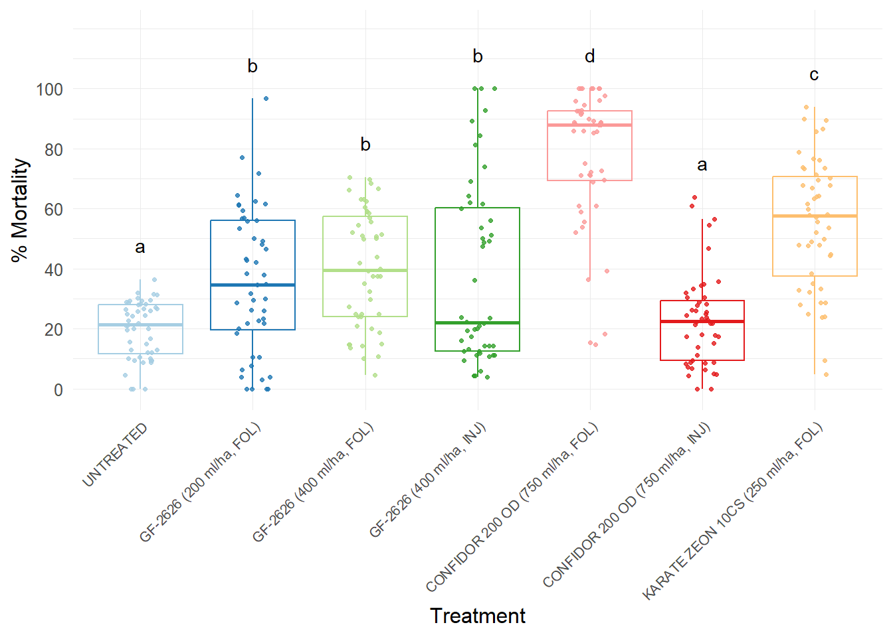
Por último, había pensado implementar un PERMANOVA, pero no tiene mucho sentido aquí ya que no tenemos varias variables respuesta (solo queremos estudiar las diferencias de la mortalidad para los diferentes tratamientos con aleatoriedad en otros factores como la parcela de aplicación y el periodo) y el caso unidimensional con la euclideana es simplemente un ANOVA normal.
2.4 P2 - ¿Es más eficaz foliar o inyectar?
En un diagrama de árbol nuestra situación es algo así:
graph TD Treatments --> SULFOXAFLOR SULFOXAFLOR --> SULFOXAFLOR_FOLIAR[FOLIAR APPLICATION] SULFOXAFLOR --> SULFOXAFLOR_INJECTION[INJECTION] Treatments --> CONFIDOR CONFIDOR --> CONFIDOR_FOLIAR[FOLIAR APPLICATION] CONFIDOR --> CONFIDOR_INJECTION[INJECTION] Treatments --> LAMBDA LAMBDA --> LAMBDA_FOLIAR[FOLIAR APPLICATION] Treatments --> UNTREATED
Miramos la tabla de Excel para crear una nueva categoría adecuadamente según el tratamiento aplicado. Para este caso, hacemos pooling sobre la categoría producto, ya que existen categorías como control o lambda que no tienen categoría ‘inyectar’. A su vez, no es posible anidar FOLIAR-INYECTAR ya que el factor NO es aleatorio ya que el método de introducción del insecticida es equivalente independientemente del tratamiento, además de por lo anterior.
library(dplyr)
# Crear la variable categ (puede contener NAs si hay Trt con valores distintos de 1 a 5 o 7)
arbol1 <- arbol1 %>%
mutate(
categ = factor(case_when(
Trt == 7 ~ "UNTREATED",
Trt == 1 ~ "SULFOXAFLOR_FOLIAR_200",
Trt == 2 ~ "SULFOXAFLOR_FOLIAR_400",
Trt == 3 ~ "SULFOXAFLOR_INJECT_400",
Trt == 4 ~ "CONFIDOR_FOLIAR_750",
Trt == 5 ~ "CONFIDOR_INJECT_750"
# otros valores de Trt → NA
)),
categ = relevel(categ, ref = "UNTREATED")
)
# Creamos nuevo dataframe sin NA en categ
arbol1_sinNA <- arbol1 %>%
filter(!is.na(categ))
# Verificamos niveles
levels(arbol1_sinNA$categ)[1] "UNTREATED" "CONFIDOR_FOLIAR_750" "CONFIDOR_INJECT_750"
[4] "SULFOXAFLOR_FOLIAR_200" "SULFOXAFLOR_FOLIAR_400" "SULFOXAFLOR_INJECT_400"Ahora planteamos varios modelos:
2.4.1 Modelo 1: Modelo lineal mixto con lmer
#Modelo 1 (lmer, modelo lineal mixto, family = gaussian)
modelo_lmerfol <- lmer(mortalidad ~ categ + (1 | PLOTf), data = arbol1_sinNA)
summary(modelo_lmerfol)Linear mixed model fit by REML. t-tests use Satterthwaite's method [
lmerModLmerTest]
Formula: mortalidad ~ categ + (1 | PLOTf)
Data: arbol1_sinNA
REML criterion at convergence: 2533.8
Scaled residuals:
Min 1Q Median 3Q Max
-2.93334 -0.58968 0.06948 0.61258 2.72311
Random effects:
Groups Name Variance Std.Dev.
PLOTf (Intercept) 66.99 8.185
Residual 401.24 20.031
Number of obs: 288, groups: PLOTf, 24
Fixed effects:
Estimate Std. Error df t value Pr(>|t|)
(Intercept) 19.750 5.011 18.000 3.942 0.000957 ***
categCONFIDOR_FOLIAR_750 57.838 7.086 18.000 8.162 1.84e-07 ***
categCONFIDOR_INJECT_750 3.059 7.086 18.000 0.432 0.671088
categSULFOXAFLOR_FOLIAR_200 15.852 7.086 18.000 2.237 0.038177 *
categSULFOXAFLOR_FOLIAR_400 20.290 7.086 18.000 2.863 0.010333 *
categSULFOXAFLOR_INJECT_400 17.855 7.086 18.000 2.520 0.021416 *
---
Signif. codes: 0 '***' 0.001 '**' 0.01 '*' 0.05 '.' 0.1 ' ' 1
Correlation of Fixed Effects:
(Intr) cCONFIDOR_F cCONFIDOR_I cSULFOXAFLOR_FOLIAR_2
cCONFIDOR_F -0.707
cCONFIDOR_I -0.707 0.500
cSULFOXAFLOR_FOLIAR_2 -0.707 0.500 0.500
cSULFOXAFLOR_FOLIAR_4 -0.707 0.500 0.500 0.500
cSULFOXAFLOR_I -0.707 0.500 0.500 0.500
cSULFOXAFLOR_FOLIAR_4
cCONFIDOR_F
cCONFIDOR_I
cSULFOXAFLOR_FOLIAR_2
cSULFOXAFLOR_FOLIAR_4
cSULFOXAFLOR_I 0.500 Veo el DHARMa:
residuos_simulados1fol <- simulateResiduals(fittedModel = modelo_lmerfol)
plot(residuos_simulados1fol)
Se cumple normalidad pero no homogeneidad. En cualquier caso, seguimos analizando el modelo.
Vemos análisis de la deviance:
Anova(modelo_lmerfol)Analysis of Deviance Table (Type II Wald chisquare tests)
Response: mortalidad
Chisq Df Pr(>Chisq)
categ 85.082 5 < 2.2e-16 ***
---
Signif. codes: 0 '***' 0.001 '**' 0.01 '*' 0.05 '.' 0.1 ' ' 1Recordemos que no hay homogeneidad pero sí normalidad. Podemos también usar en Anova en lugar del típico test de Wald usar un test más robusto como el de Kenward-Roger o incluso Satterthwaite:
library(lmerTest)
Anova(modelo_lmerfol, ddf = "Kenward-Roger")Analysis of Deviance Table (Type II Wald chisquare tests)
Response: mortalidad
Chisq Df Pr(>Chisq)
categ 85.082 5 < 2.2e-16 ***
---
Signif. codes: 0 '***' 0.001 '**' 0.01 '*' 0.05 '.' 0.1 ' ' 1Anova(modelo_lmerfol, ddf = "Satterthwaite")Analysis of Deviance Table (Type II Wald chisquare tests)
Response: mortalidad
Chisq Df Pr(>Chisq)
categ 85.082 5 < 2.2e-16 ***
---
Signif. codes: 0 '***' 0.001 '**' 0.01 '*' 0.05 '.' 0.1 ' ' 1Vemos diferencias de medias marginales con emeans:
library(emmeans)
emmeans_trat2 <- emmeans(modelo_lmerfol, ~ categ)
emmeans_trat2 categ emmean SE df lower.CL upper.CL
UNTREATED 19.8 5.01 18 9.22 30.3
CONFIDOR_FOLIAR_750 77.6 5.01 18 67.06 88.1
CONFIDOR_INJECT_750 22.8 5.01 18 12.28 33.3
SULFOXAFLOR_FOLIAR_200 35.6 5.01 18 25.08 46.1
SULFOXAFLOR_FOLIAR_400 40.0 5.01 18 29.51 50.6
SULFOXAFLOR_INJECT_400 37.6 5.01 18 27.08 48.1
Degrees-of-freedom method: kenward-roger
Confidence level used: 0.95 comparaciones2 <- pairs(emmeans_trat2, adjust = "fdr")
comparaciones2 contrast estimate SE df t.ratio
UNTREATED - CONFIDOR_FOLIAR_750 -57.84 7.09 18 -8.162
UNTREATED - CONFIDOR_INJECT_750 -3.06 7.09 18 -0.432
UNTREATED - SULFOXAFLOR_FOLIAR_200 -15.85 7.09 18 -2.237
UNTREATED - SULFOXAFLOR_FOLIAR_400 -20.29 7.09 18 -2.863
UNTREATED - SULFOXAFLOR_INJECT_400 -17.85 7.09 18 -2.520
CONFIDOR_FOLIAR_750 - CONFIDOR_INJECT_750 54.78 7.09 18 7.730
CONFIDOR_FOLIAR_750 - SULFOXAFLOR_FOLIAR_200 41.99 7.09 18 5.925
CONFIDOR_FOLIAR_750 - SULFOXAFLOR_FOLIAR_400 37.55 7.09 18 5.299
CONFIDOR_FOLIAR_750 - SULFOXAFLOR_INJECT_400 39.98 7.09 18 5.642
CONFIDOR_INJECT_750 - SULFOXAFLOR_FOLIAR_200 -12.79 7.09 18 -1.805
CONFIDOR_INJECT_750 - SULFOXAFLOR_FOLIAR_400 -17.23 7.09 18 -2.432
CONFIDOR_INJECT_750 - SULFOXAFLOR_INJECT_400 -14.80 7.09 18 -2.088
SULFOXAFLOR_FOLIAR_200 - SULFOXAFLOR_FOLIAR_400 -4.44 7.09 18 -0.626
SULFOXAFLOR_FOLIAR_200 - SULFOXAFLOR_INJECT_400 -2.00 7.09 18 -0.283
SULFOXAFLOR_FOLIAR_400 - SULFOXAFLOR_INJECT_400 2.44 7.09 18 0.344
p.value
<.0001
0.7743
0.0636
0.0258
0.0459
<.0001
0.0001
0.0001
0.0001
0.1197
0.0482
0.0769
0.6738
0.7807
0.7807
Degrees-of-freedom method: kenward-roger
P value adjustment: fdr method for 15 tests plot(comparaciones2)
Vemos cld:
library(multcomp)
library(multcompView)
cld(emmeans_trat2, Letters = letters, adjust = "fdr") categ emmean SE df lower.CL upper.CL .group
UNTREATED 19.8 5.01 18 4.90 34.6 a
CONFIDOR_INJECT_750 22.8 5.01 18 7.96 37.7 ab
SULFOXAFLOR_FOLIAR_200 35.6 5.01 18 20.76 50.4 abc
SULFOXAFLOR_INJECT_400 37.6 5.01 18 22.76 52.5 bc
SULFOXAFLOR_FOLIAR_400 40.0 5.01 18 25.19 54.9 c
CONFIDOR_FOLIAR_750 77.6 5.01 18 62.74 92.4 d
Degrees-of-freedom method: kenward-roger
Confidence level used: 0.95
Conf-level adjustment: bonferroni method for 6 estimates
P value adjustment: fdr method for 15 tests
significance level used: alpha = 0.05
NOTE: If two or more means share the same grouping symbol,
then we cannot show them to be different.
But we also did not show them to be the same. 2.4.2 Modelo 1.5: Transformación Box-Cox (usar mortalidad_trans)
#Modelo 1 (lmer, modelo lineal mixto, family = gaussian)
modelo_lmerfol2 <- lmer(mortalidad_trans ~ categ + (1 | PLOTf), data = arbol1_sinNA)
summary(modelo_lmerfol2)Linear mixed model fit by REML. t-tests use Satterthwaite's method [
lmerModLmerTest]
Formula: mortalidad_trans ~ categ + (1 | PLOTf)
Data: arbol1_sinNA
REML criterion at convergence: 1457.4
Scaled residuals:
Min 1Q Median 3Q Max
-2.8854 -0.6069 0.1734 0.6606 2.0937
Random effects:
Groups Name Variance Std.Dev.
PLOTf (Intercept) 0.7445 0.8629
Residual 9.0625 3.0104
Number of obs: 288, groups: PLOTf, 24
Fixed effects:
Estimate Std. Error df t value Pr(>|t|)
(Intercept) 6.0659 0.6123 18.0000 9.906 1.03e-08 ***
categCONFIDOR_FOLIAR_750 7.1004 0.8660 18.0000 8.199 1.72e-07 ***
categCONFIDOR_INJECT_750 0.3753 0.8660 18.0000 0.433 0.66986
categSULFOXAFLOR_FOLIAR_200 1.9831 0.8660 18.0000 2.290 0.03431 *
categSULFOXAFLOR_FOLIAR_400 3.0284 0.8660 18.0000 3.497 0.00257 **
categSULFOXAFLOR_INJECT_400 2.1901 0.8660 18.0000 2.529 0.02100 *
---
Signif. codes: 0 '***' 0.001 '**' 0.01 '*' 0.05 '.' 0.1 ' ' 1
Correlation of Fixed Effects:
(Intr) cCONFIDOR_F cCONFIDOR_I cSULFOXAFLOR_FOLIAR_2
cCONFIDOR_F -0.707
cCONFIDOR_I -0.707 0.500
cSULFOXAFLOR_FOLIAR_2 -0.707 0.500 0.500
cSULFOXAFLOR_FOLIAR_4 -0.707 0.500 0.500 0.500
cSULFOXAFLOR_I -0.707 0.500 0.500 0.500
cSULFOXAFLOR_FOLIAR_4
cCONFIDOR_F
cCONFIDOR_I
cSULFOXAFLOR_FOLIAR_2
cSULFOXAFLOR_FOLIAR_4
cSULFOXAFLOR_I 0.500 residuos_simulados2fol <- simulateResiduals(fittedModel = modelo_lmerfol2)
plot(residuos_simulados2fol)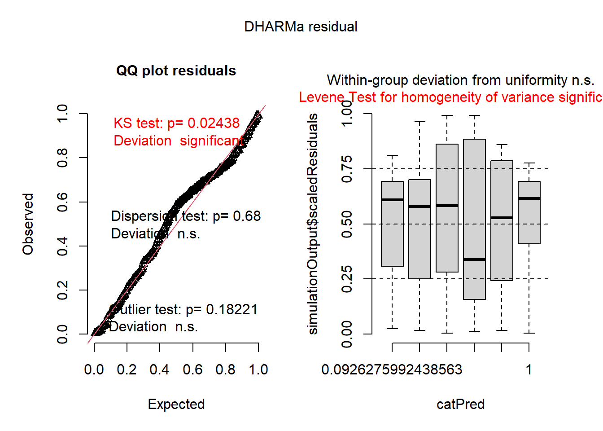
No nos sirve.
2.4.3 Modelo 2: ANOVA de Welch
Notemos que en el modelo 1 teníamos normalidad pero no homogeneidad de varianzas. En este caso, para evitar falsos positivos, podemos usar un ANOVA de Welch que no requiere suponer homocedasticidad (homogeneidad de varianzas). Así, si no suponemos factores aleatorios:
resultado_welch <- oneway.test(mortalidad ~ categ, data = arbol1_sinNA, var.equal = FALSE)
print(resultado_welch)
One-way analysis of means (not assuming equal variances)
data: mortalidad and categ
F = 56.916, num df = 5.00, denom df = 127.58, p-value < 2.2e-16Claramente rechazamos la igualdad de medias. Vemos ahora su test post-hoc apropiado (igual que Tukey, Bonferroni o FDR), que es el de Games-Howell:
# Test de Games-Howell
library(PMCMRplus)
gamesHowellTest(mortalidad ~ categ, data = arbol1_sinNA)
Pairwise comparisons using Games-Howell testdata: mortalidad by categ UNTREATED CONFIDOR_FOLIAR_750 CONFIDOR_INJECT_750
CONFIDOR_FOLIAR_750 1.6e-11 - -
CONFIDOR_INJECT_750 0.84598 5.2e-11 -
SULFOXAFLOR_FOLIAR_200 0.00084 4.9e-10 0.02701
SULFOXAFLOR_FOLIAR_400 1.5e-07 4.7e-10 7.6e-05
SULFOXAFLOR_INJECT_400 0.00369 2.6e-09 0.04100
SULFOXAFLOR_FOLIAR_200 SULFOXAFLOR_FOLIAR_400
CONFIDOR_FOLIAR_750 - -
CONFIDOR_INJECT_750 - -
SULFOXAFLOR_FOLIAR_200 - -
SULFOXAFLOR_FOLIAR_400 0.91504 -
SULFOXAFLOR_INJECT_400 0.99919 0.99713
P value adjustment method: nonealternative hypothesis: two.sidedSin embargo, no tenemos en cuenta aleatoriedad en otros factores. Así, mi última idea es utilizar un modelo lineal mixto con pesos para los residuos (evitar la heterocedasticidad del caso 1).
2.4.4 Modelo 3: modelo lineal con nlme con heterocedasticidad
modelo2_13_nlme <- lme(
mortalidad ~ categ,
random = ~1 | PLOTf,
data = arbol1_sinNA,
weights = varIdent(form = ~1 | categ), # Permite varianzas distintas por nivel de categ
)
summary(modelo2_13_nlme)Linear mixed-effects model fit by REML
Data: arbol1_sinNA
AIC BIC logLik
2509.592 2556.936 -1241.796
Random effects:
Formula: ~1 | PLOTf
(Intercept) Residual
StdDev: 0.0131 30.48573
Variance function:
Structure: Different standard deviations per stratum
Formula: ~1 | categ
Parameter estimates:
SULFOXAFLOR_INJECT_400 CONFIDOR_FOLIAR_750 UNTREATED
1.0000000 0.7529821 0.3138300
CONFIDOR_INJECT_750 SULFOXAFLOR_FOLIAR_200 SULFOXAFLOR_FOLIAR_400
0.4998082 0.7766235 0.6349895
Fixed effects: mortalidad ~ categ
Value Std.Error DF t-value p-value
(Intercept) 19.75019 1.380942 264 14.301973 0.0000
categCONFIDOR_FOLIAR_750 57.83752 3.589567 18 16.112671 0.0000
categCONFIDOR_INJECT_750 3.05914 2.596892 18 1.177999 0.2541
categSULFOXAFLOR_FOLIAR_200 15.85215 3.685806 18 4.300863 0.0004
categSULFOXAFLOR_FOLIAR_400 20.28981 3.116739 18 6.509948 0.0000
categSULFOXAFLOR_INJECT_400 17.85466 4.611846 18 3.871478 0.0011
Correlation:
(Intr) cCONFIDOR_F cCONFIDOR_I
categCONFIDOR_FOLIAR_750 -0.385
categCONFIDOR_INJECT_750 -0.532 0.205
categSULFOXAFLOR_FOLIAR_200 -0.375 0.144 0.199
categSULFOXAFLOR_FOLIAR_400 -0.443 0.170 0.236
categSULFOXAFLOR_INJECT_400 -0.299 0.115 0.159
cSULFOXAFLOR_FOLIAR_2 cSULFOXAFLOR_FOLIAR_4
categCONFIDOR_FOLIAR_750
categCONFIDOR_INJECT_750
categSULFOXAFLOR_FOLIAR_200
categSULFOXAFLOR_FOLIAR_400 0.166
categSULFOXAFLOR_INJECT_400 0.112 0.133
Standardized Within-Group Residuals:
Min Q1 Med Q3 Max
-2.73457929 -0.80928195 0.02611317 0.74900739 2.69215785
Number of Observations: 288
Number of Groups: 24 Hacemos un diagnóstico completo del modelo:
test_ad_bootstrap_normaliz(modelo2_13_nlme)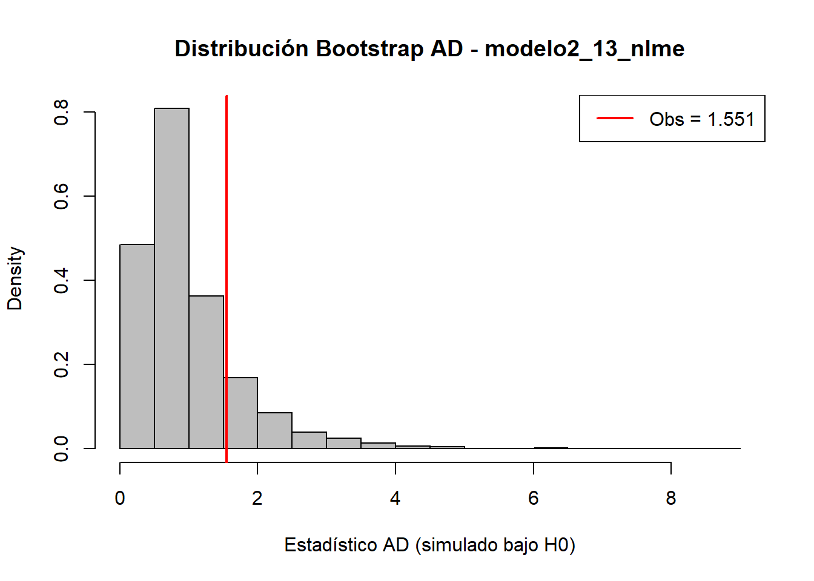
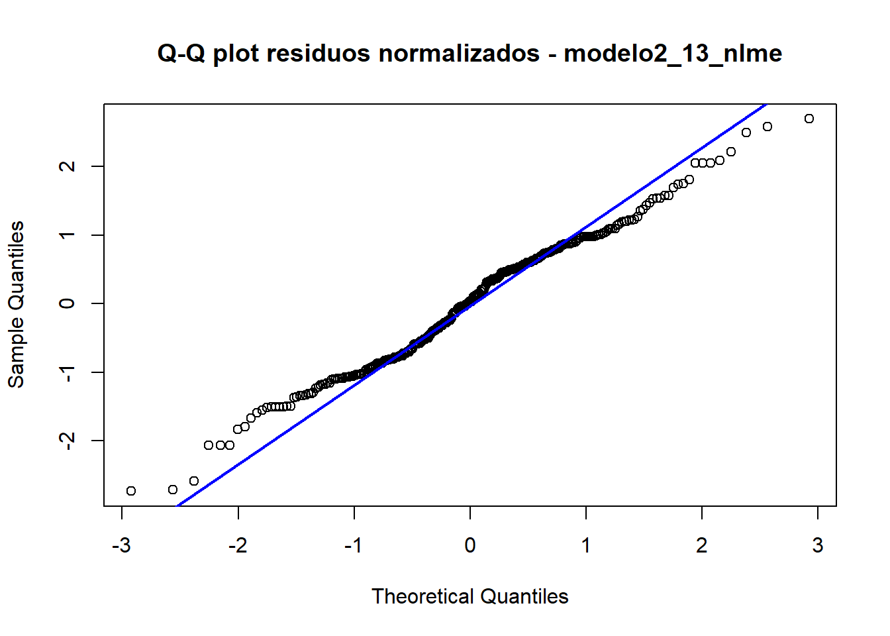
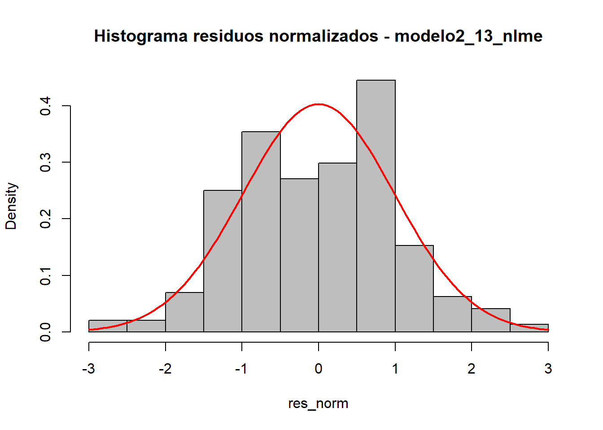
Anderson-Darling con bootstrap paramétrico (3000 réplicas)
data: Residuos normalizados de modelo2_13_nlme
AD = 1.5506, p-value = 0.1647# ---- 4. R² marginal y condicional (explicación del modelo) ----
r2 <- r.squaredGLMM(modelo2_13_nlme)
cat("R² marginal (Categ):", round(r2[1, "R2m"]*100, 8), "%\n")R² marginal (Categ): 27.76782 %cat("R² condicional (Categ + Plotf):", round(r2[1, "R2c"]*100, 8), "%\n")R² condicional (Categ + Plotf): 27.76784 %cat("Proporción atribuida a Plotf:", round((r2[1, "R2c"] - r2[1, "R2m"])*100, 8), "%\n")Proporción atribuida a Plotf: 1.334e-05 %El modelo podemos suponer que verifica las hipótesis de normalidad, ya que p > 0.05. Viendo el qqplot y el histograma consideraremos que hay normalidad. Vemos además si mejora significativamente el modelo lineal mixto.
#logLik(modelo_lmerfol)
#logLik(modelo2_13_nlme)
#Alternativa para más detalle: paso a nlme el modelo homocedástico
#para compararlos y veo el p-valor (en este caso es mejor #claramente modelo2_13_nlme)
modelo_lmefol <- lme(
fixed = mortalidad ~ categ,
random = ~1 | PLOTf,
data = arbol1_sinNA
)
anova(modelo_lmefol, modelo2_13_nlme) Model df AIC BIC logLik Test L.Ratio p-value
modelo_lmefol 1 8 2549.769 2578.904 -1266.884
modelo2_13_nlme 2 13 2509.592 2556.936 -1241.796 1 vs 2 50.17742 <.0001El modelo que permite varianzas diferentes por tratamiento (modelo2_13_nlme) mejora el ajuste, aunque sea un poco. Deberíamos por tanto usar modelo2_13_nlme por todo lo anterior, entonces.
Hacemos un análisis de la deviance:
Anova(modelo2_13_nlme)Analysis of Deviance Table (Type II tests)
Response: mortalidad
Chisq Df Pr(>Chisq)
categ 290.53 5 < 2.2e-16 ***
---
Signif. codes: 0 '***' 0.001 '**' 0.01 '*' 0.05 '.' 0.1 ' ' 1Veamos ahora las diferencias de medias marginales con emeans:
library(emmeans)
library(multcomp)
library(multcompView)
# Estimar medias marginales para Trtf con modelo nlme
emmeans2_trat13_nlme <- emmeans(modelo2_13_nlme, ~ categ)
print(emmeans2_trat13_nlme) categ emmean SE df lower.CL upper.CL
UNTREATED 19.8 1.38 23 16.9 22.6
CONFIDOR_FOLIAR_750 77.6 3.31 18 70.6 84.5
CONFIDOR_INJECT_750 22.8 2.20 18 18.2 27.4
SULFOXAFLOR_FOLIAR_200 35.6 3.42 18 28.4 42.8
SULFOXAFLOR_FOLIAR_400 40.0 2.79 18 34.2 45.9
SULFOXAFLOR_INJECT_400 37.6 4.40 18 28.4 46.8
Degrees-of-freedom method: containment
Confidence level used: 0.95 # Comparaciones pareadas ajustando p con FDR
comparaciones2_13_nlme <- pairs(emmeans2_trat13_nlme, adjust = "fdr")
print(comparaciones2_13_nlme) contrast estimate SE df t.ratio
UNTREATED - CONFIDOR_FOLIAR_750 -57.84 3.59 18 -16.113
UNTREATED - CONFIDOR_INJECT_750 -3.06 2.60 18 -1.178
UNTREATED - SULFOXAFLOR_FOLIAR_200 -15.85 3.69 18 -4.301
UNTREATED - SULFOXAFLOR_FOLIAR_400 -20.29 3.12 18 -6.510
UNTREATED - SULFOXAFLOR_INJECT_400 -17.85 4.61 18 -3.871
CONFIDOR_FOLIAR_750 - CONFIDOR_INJECT_750 54.78 3.98 18 13.775
CONFIDOR_FOLIAR_750 - SULFOXAFLOR_FOLIAR_200 41.99 4.76 18 8.821
CONFIDOR_FOLIAR_750 - SULFOXAFLOR_FOLIAR_400 37.55 4.33 18 8.663
CONFIDOR_FOLIAR_750 - SULFOXAFLOR_INJECT_400 39.98 5.51 18 7.259
CONFIDOR_INJECT_750 - SULFOXAFLOR_FOLIAR_200 -12.79 4.06 18 -3.148
CONFIDOR_INJECT_750 - SULFOXAFLOR_FOLIAR_400 -17.23 3.56 18 -4.846
CONFIDOR_INJECT_750 - SULFOXAFLOR_INJECT_400 -14.80 4.92 18 -3.008
SULFOXAFLOR_FOLIAR_200 - SULFOXAFLOR_FOLIAR_400 -4.44 4.41 18 -1.005
SULFOXAFLOR_FOLIAR_200 - SULFOXAFLOR_INJECT_400 -2.00 5.57 18 -0.359
SULFOXAFLOR_FOLIAR_400 - SULFOXAFLOR_INJECT_400 2.44 5.21 18 0.467
p.value
<.0001
0.3177
0.0008
<.0001
0.0019
<.0001
<.0001
<.0001
<.0001
0.0083
0.0003
0.0103
0.3785
0.7235
0.6921
Degrees-of-freedom method: containment
P value adjustment: fdr method for 15 tests # Plot sencillo de comparaciones
plot(comparaciones2_13_nlme)
Vemos cld:
letras2_13_nlme <- cld(emmeans2_trat13_nlme, Letters = letters, adjust = "fdr")
print(letras2_13_nlme) categ emmean SE df lower.CL upper.CL .group
UNTREATED 19.8 1.38 23 15.8 23.7 a
CONFIDOR_INJECT_750 22.8 2.20 18 16.3 29.3 a
SULFOXAFLOR_FOLIAR_200 35.6 3.42 18 25.5 45.7 b
SULFOXAFLOR_INJECT_400 37.6 4.40 18 24.6 50.6 b
SULFOXAFLOR_FOLIAR_400 40.0 2.79 18 31.8 48.3 b
CONFIDOR_FOLIAR_750 77.6 3.31 18 67.8 87.4 c
Degrees-of-freedom method: containment
Confidence level used: 0.95
Conf-level adjustment: bonferroni method for 6 estimates
P value adjustment: fdr method for 15 tests
significance level used: alpha = 0.05
NOTE: If two or more means share the same grouping symbol,
then we cannot show them to be different.
But we also did not show them to be the same. Hacemos el boxplot+dotplot:
library(ggplot2)
library(dplyr)
# Dataframe paleta: 7 tratamientos originales (NO se elimina ninguno)
pal_2017 <- data.frame(
categ = c(
"UNTREATED",
"CONFIDOR_INJECT_750",
"SULFOXAFLOR_FOLIAR_200",
"SULFOXAFLOR_INJECT_400",
"SULFOXAFLOR_FOLIAR_400",
"CONFIDOR_FOLIAR_750",
"KARATE_ZEON_FOLIAR_250"
),
label = c(
"UNTREATED",
"CONFIDOR 200 OD (750 ml/ha, INJ)",
"GF-2626 (200 ml/ha, FOL)",
"GF-2626 (400 ml/ha, INJ)",
"GF-2626 (400 ml/ha, FOL)",
"CONFIDOR 200 OD (750 ml/ha, FOL)",
"KARATE ZEON 10CS (250 ml/ha, FOL)"
),
color = c(
"#A6CEE3", # UNTREATED
"#E31A1C", # CONFIDOR INJECT 750 (A)
"#1F78B4", # GF-2626 FOLIAR 200 (B)
"#33A02C", # GF-2626 INJECT 400 (A)
"#B2DF8A", # GF-2626 FOLIAR 400 (B)
"#FB9A99", # CONFIDOR FOLIAR 750 (B)
"#FDBF6F" # KARATE ZEON FOLIAR 250
),
stringsAsFactors = FALSE
)
pal_2017_vec <- setNames(pal_2017$color, pal_2017$categ)
arbletras <- tibble(
categ = factor(c(
"UNTREATED",
"CONFIDOR_INJECT_750",
"SULFOXAFLOR_FOLIAR_200",
"SULFOXAFLOR_INJECT_400",
"SULFOXAFLOR_FOLIAR_400",
"CONFIDOR_FOLIAR_750"
), levels = levels(arbol1_sinNA$categ)),
emmean = c(19.8, 22.8, 35.6, 37.6, 40.0, 77.6),
SE = c(1.38, 2.20, 3.42, 4.40, 2.79, 3.31),
df = c(23, 18, 18, 18, 18, 18),
lower.CL = c(15.8, 16.3, 25.5, 24.6, 31.8, 67.8),
upper.CL = c(23.7, 29.3, 45.7, 50.6, 48.3, 87.4),
.group = c("a", "a", "b", "b", "b", "c")
)
arbol1_jitter <- arbol1_sinNA %>% sample_frac(1)
posiciones_letras <- arbol1_sinNA %>%
group_by(categ) %>%
summarise(y.pos = max(mortalidad, na.rm = TRUE) + 8)
arbletras <- arbletras %>%
left_join(posiciones_letras, by = "categ")
ggplot(arbol1_sinNA, aes(x = categ, y = mortalidad)) +
geom_boxplot(aes(color = categ), fill = NA, outlier.shape = NA, linewidth = 0.5) +
geom_jitter(
data = arbol1_jitter,
aes(color = categ, fill = categ),
width = 0.15, size = 1.5, alpha = 0.8,
shape = 21, stroke = 0.1
) +
geom_text(
data = arbletras,
aes(x = categ, y = y.pos, label = .group),
inherit.aes = FALSE, vjust = 0, size = 4
) +
scale_y_continuous(limits = c(-1, max(arbletras$y.pos) + 10), breaks = seq(0, 100, 20)) +
scale_color_manual(values = pal_2017_vec) +
scale_fill_manual(values = pal_2017_vec) +
# Aquí cambias los nombres del eje X:
scale_x_discrete(labels = setNames(pal_2017$label, pal_2017$categ)) +
labs(
x = "Treatment",
y = "% Mortality"
) +
theme_minimal(base_size = 14) +
theme(
legend.position = "none",
axis.text.x = element_text(angle = 45, hjust = 1, size = 7),
panel.grid.major = element_line(size = 0.2),
panel.grid.minor = element_line(size = 0.1)
)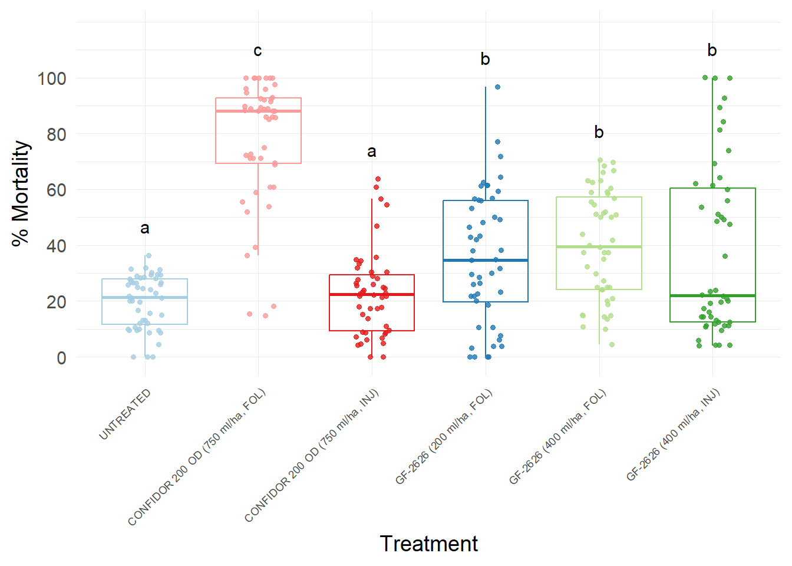
3 Análisis de insecticidas en 2018
3.1 Extracción de datos de Excel a un dataframe
Extraemos las columnas que nos interesan en los 8 períodos del Excel de 2018 para extraer la mortalidad calculada en Excel en cada período de 2018.
# Instalar y cargar paquetes necesarios
if (!require("readxl")) install.packages("readxl")
if (!require("tidyr")) install.packages("tidyr")Cargando paquete requerido: tidyr
Adjuntando el paquete: 'tidyr'The following object is masked from 'package:rstan':
extractThe following objects are masked from 'package:Matrix':
expand, pack, unpacklibrary(readxl)
library(tidyr)
# Configuración de importación
ruta_archivo <- "C:/Users/dvalh/Desktop/UA/MatesUA/Prácticas de empresa + privado/Datos actividad 3/rilevi 2018_02.xlsx"
nombre_hoja <- "Rileivi"
fila_inicio <- 4
fila_fin <- 122
# Definir columnas y nombres personalizados
columnas_seleccionadas <- c("A", "B", "C", "S", "T", "U", "AH", "AS", "BD", "BO", "BZ") # Columnas a importar (A = Trat., B = Plot)
nombres_personalizados <- c("Trt", "Plot", "Rete", "Mortalidad_1", "Mortalidad_2", "Mortalidad_3", "Mortalidad_4", "Mortalidad_5", "Mortalidad_6", "Mortalidad_7", "Mortalidad_8") # Nombres para el dataframe
# Crear lista temporal para almacenar columnas
lista_columnas <- list()
for (i in seq_along(columnas_seleccionadas)) {
rango <- paste0(columnas_seleccionadas[i], fila_inicio, ":", columnas_seleccionadas[i], fila_fin)
columna_temp <- read_excel(
path = ruta_archivo,
sheet = nombre_hoja,
range = rango,
col_names = FALSE
)
lista_columnas[[nombres_personalizados[i]]] <- columna_temp[[1]]
}New names:
• `` -> `...1`New names:
New names:
New names:
New names:
New names:
New names:
New names:
New names:
New names:
New names:
• `` -> `...1`# Convertir la lista a data.frame
pre2 <- as.data.frame(lista_columnas)
# Paso adicional: Rellenar valores vacíos en columna de tratamiento
pre2 <- pre2 %>%
fill(Trt, .direction = "down")
#Quito donde Plot es NA
pre2 <- pre2[!is.na(pre2$Plot), ]
# Verificar resultados
head(pre2) Trt Plot Rete Mortalidad_1 Mortalidad_2 Mortalidad_3 Mortalidad_4
1 2 101 A/1 0.00000000 0.04000000 0.04000000 0.12820513
2 2 101 A/2 0.03703704 0.03703704 0.03703704 0.01666667
3 2 101 B/1 0.09375000 0.18750000 0.18750000 0.21153846
4 2 101 B/2 0.08000000 0.20000000 0.20000000 0.26190476
6 4 102 A/1 0.00000000 0.03125000 0.12500000 0.06779661
7 4 102 A/2 0.00000000 0.04761905 0.28571429 0.36363636
Mortalidad_5 Mortalidad_6 Mortalidad_7 Mortalidad_8
1 0.1475410 0.13888889 0.17204301 0.19130435
2 0.1084337 0.08910891 0.08474576 0.11278195
3 0.2794118 0.23750000 0.23958333 0.21311475
4 0.1896552 0.24637681 0.21839080 0.21000000
6 0.0800000 0.06976744 0.09708738 0.08849558
7 0.2881356 0.30000000 0.26436782 0.23853211str(pre2)'data.frame': 96 obs. of 11 variables:
$ Trt : num 2 2 2 2 4 4 4 4 6 6 ...
$ Plot : num 101 101 101 101 102 102 102 102 103 103 ...
$ Rete : chr "A/1" "A/2" "B/1" "B/2" ...
$ Mortalidad_1: num 0 0.037 0.0938 0.08 0 ...
$ Mortalidad_2: num 0.04 0.037 0.1875 0.2 0.0312 ...
$ Mortalidad_3: num 0.04 0.037 0.188 0.2 0.125 ...
$ Mortalidad_4: num 0.1282 0.0167 0.2115 0.2619 0.0678 ...
$ Mortalidad_5: num 0.148 0.108 0.279 0.19 0.08 ...
$ Mortalidad_6: num 0.1389 0.0891 0.2375 0.2464 0.0698 ...
$ Mortalidad_7: num 0.172 0.0847 0.2396 0.2184 0.0971 ...
$ Mortalidad_8: num 0.1913 0.1128 0.2131 0.21 0.0885 ...Ahora convierto este dataframe de formato longitudinal a wide creando una variable periodo para cada \(\text{mortalidad}_i\) y obtenemos nuestro dataframe arbol2. Lo guardaremos también por si acaso:
library(tidyr)
library(dplyr)
arbol2 <- pre2 %>%
pivot_longer(
cols = starts_with("Mortalidad_"),
names_to = "periodo",
values_to = "mortalidad",
names_prefix = "Mortalidad_"
)
write.table(arbol2, file = "arbol2.txt", sep = "\t", row.names = FALSE, quote = FALSE)Multiplico mortalidad*100:
arbol2$mortalidad <- arbol2$mortalidad*100Observamos el summary y table para ver outliers, datos faltantes o extraños para hacer data cleaning posteriormente y variabilidad a simple vista en los datos.
summary(arbol2)Y hacemos un par de tables y observamos los factores a tratar:
print("Factor tratamiento:")
summary(arbol1$Trt)
print("Factor periodo:")
summary(arbol1$periodo)3.2 Primeros boxplot
Convertimos en factores las variables year, Trt, PLOT y periodo y hacemos los boxplot.
#Boxplot treatment observación
arbol2$Trtf <- factor(arbol2$Trt, levels = c("6","1","2","3","4","5"))
arbol2$Plotf <- factor(arbol2$Plot)
arbol2$periodof <- factor(arbol2$periodo)#Boxplot básico de tratamiento
ggplot(arbol2, aes(x = Trtf, y = mortalidad, fill = Trtf)) +
geom_boxplot(color = "black") +
scale_y_continuous(limits = c(0, 105), breaks = seq(0,100,20)) +
scale_x_discrete(labels = c(
"Control", "1", "2", "3", "4", "5"
)) +
scale_fill_manual(values = c(
"#FF8C94", # Rosa fuerte
"#FFAA5A", # Naranja suave
"#FFD700", # Amarillo dorado
"#7FDBFF", # Azul claro
"#B19CD9", # Lila pastel
"#77DD77" # Verde suave
)) +
labs(
title = "Boxplot % Mortalidad",
x = expression("Tratamiento"),
y = "% Mortalidad"
) +
theme_minimal() +
theme(legend.position = "none")
ggplot(arbol2, aes(x = Trtf, y = mortalidad, fill = Trtf)) +
geom_violin(color = "black") +
scale_y_continuous(limits = c(0, 105), breaks = seq(0,100,20)) +
scale_x_discrete(labels = c(
"Control", "1", "2", "3", "4", "5"
)) +
scale_fill_manual(values = c(
"#FF8C94", # Rosa fuerte
"#FFAA5A", # Naranja suave
"#FFD700", # Amarillo dorado
"#7FDBFF", # Azul claro
"#B19CD9", # Lila pastel
"#77DD77" # Verde suave
)) +
labs(
title = "Violinplot % Mortalidad",
x = expression("Tratamiento"),
y = "% Mortalidad"
) +
theme_minimal() +
theme(legend.position = "none")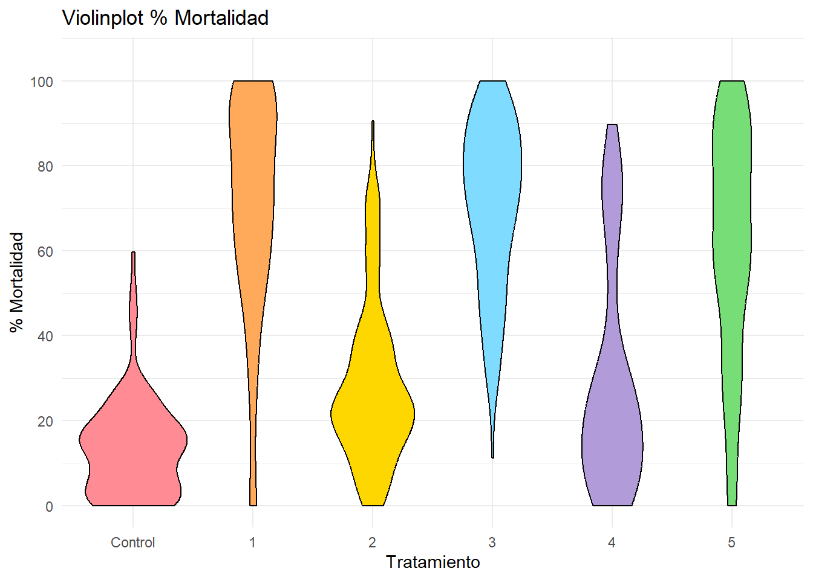
3.3 P1 - ¿Qué insecticida es más efectivo? Planteamiento de varios modelos lineales generalizados
3.3.1 ¿Qué distribución podría fittear bien los datos?
Vemos en detalle qué modelo puede fittear bien los residuos con la función descdist del paquete fitdistrplus:
library(fitdistrplus)
descdist(arbol2$mortalidad, boot = 1000)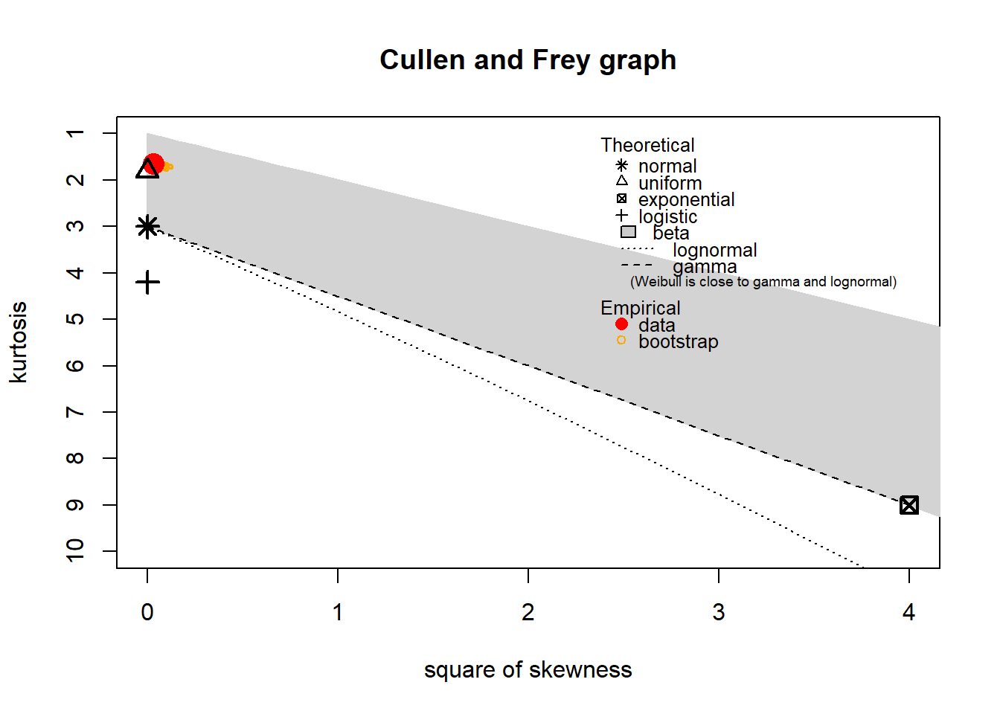
summary statistics
------
min: 0 max: 100
median: 41.6574
mean: 45.61699
estimated sd: 31.77678
estimated skewness: 0.1789123
estimated kurtosis: 1.64237 Así, ahora probaremos varios glms para ver cuál fittea mejor el modelo.
3.3.2 Modelo 1: Modelo lineal mixto con lmer
Usamos la función lmer del paquete lme4 para ver nuestro primer modelo y printeamos un summary inicial del mismo:
library(lme4)
#Modelo 1 (lmer, modelo lineal mixto, family = gaussian)
modelo_21 <- lmer(mortalidad ~ Trtf + (1|Plotf), data = arbol2)
print(summary(modelo_21))Linear mixed model fit by REML. t-tests use Satterthwaite's method [
lmerModLmerTest]
Formula: mortalidad ~ Trtf + (1 | Plotf)
Data: arbol2
REML criterion at convergence: 6780.7
Scaled residuals:
Min 1Q Median 3Q Max
-3.3195 -0.6044 0.0191 0.6578 2.7233
Random effects:
Groups Name Variance Std.Dev.
Plotf (Intercept) 148.2 12.18
Residual 388.2 19.70
Number of obs: 768, groups: Plotf, 24
Fixed effects:
Estimate Std. Error df t value Pr(>|t|)
(Intercept) 13.636 6.332 18.000 2.154 0.0451 *
Trtf1 56.855 8.955 18.000 6.349 5.56e-06 ***
Trtf2 14.924 8.955 18.000 1.667 0.1129
Trtf3 56.824 8.955 18.000 6.346 5.60e-06 ***
Trtf4 15.471 8.955 18.000 1.728 0.1012
Trtf5 47.809 8.955 18.000 5.339 4.48e-05 ***
---
Signif. codes: 0 '***' 0.001 '**' 0.01 '*' 0.05 '.' 0.1 ' ' 1
Correlation of Fixed Effects:
(Intr) Trtf1 Trtf2 Trtf3 Trtf4
Trtf1 -0.707
Trtf2 -0.707 0.500
Trtf3 -0.707 0.500 0.500
Trtf4 -0.707 0.500 0.500 0.500
Trtf5 -0.707 0.500 0.500 0.500 0.500Vemos su DHARMa para ver si el modelo es válido:
library(DHARMa)
residuos_simulados21 <- simulateResiduals(fittedModel = modelo_21)
plot(residuos_simulados21)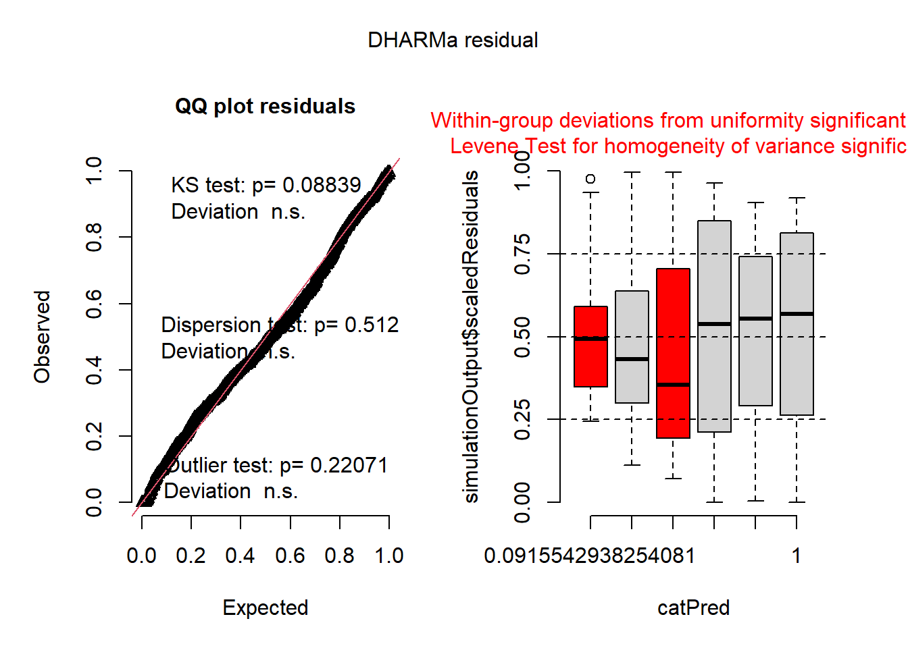
KS se cumple (hay normalidad de los residuos), pero no hay homogeneidad.
Vemos el \(R^2\) marginal (porcentaje de varianza explicada por efectos fijos) y condicional (porcentaje de varianza explicada por efectos fijos + aleatorios) para el factor fijo Trt y el aleatorio Plot. Como estamos en un modelo lineal mixto, no hace falta añadir la varianza del enlace con distribución, ya que el enlace es la identidad y estamos en el caso gaussiano:
library(MuMIn)
# Calcular R² marginal (efectos fijos) y condicional (fijos + aleatorios)
r2_values <- r.squaredGLMM(modelo_21)
# Extraer R² marginal (porcentaje de variabilidad explicada por Trtf)
porcentaje_trtf <- r2_values[1, "R2m"] * 100
print(paste("Trtf explica el", round(porcentaje_trtf, 2), "% de la variabilidad"))[1] "Trtf explica el 48.87 % de la variabilidad"porcentaje_total <- r2_values[1, "R2c"] * 100
print(paste("Trtf+Plotf explica el", round(porcentaje_total, 2), "% de la variabilidad"))[1] "Trtf+Plotf explica el 63 % de la variabilidad"porcentaje_plotf <- porcentaje_total - porcentaje_trtf
print(paste("Plotf explica el", round(porcentaje_plotf, 2), "% de la variabilidad"))[1] "Plotf explica el 14.13 % de la variabilidad"Hacemos el análisis de la deviance del modelo_21:
Anova(modelo_21)Analysis of Deviance Table (Type II Wald chisquare tests)
Response: mortalidad
Chisq Df Pr(>Chisq)
Trtf 76.636 5 4.237e-15 ***
---
Signif. codes: 0 '***' 0.001 '**' 0.01 '*' 0.05 '.' 0.1 ' ' 1Vemos las diferencias entre las medias marginales más en detalle con emeans usando el test FDR:
library(emmeans)
emmeans_trat21 <- emmeans(modelo_21, ~ Trtf)
emmeans_trat21 Trtf emmean SE df lower.CL upper.CL
6 13.6 6.33 18 0.333 26.9
1 70.5 6.33 18 57.188 83.8
2 28.6 6.33 18 15.258 41.9
3 70.5 6.33 18 57.158 83.8
4 29.1 6.33 18 15.805 42.4
5 61.4 6.33 18 48.142 74.7
Degrees-of-freedom method: kenward-roger
Confidence level used: 0.95 comparaciones21 <- pairs(emmeans_trat21, adjust = "fdr")
comparaciones21 contrast estimate SE df t.ratio p.value
Trtf6 - Trtf1 -56.8545 8.95 18 -6.349 <.0001
Trtf6 - Trtf2 -14.9242 8.95 18 -1.667 0.1540
Trtf6 - Trtf3 -56.8243 8.95 18 -6.346 <.0001
Trtf6 - Trtf4 -15.4713 8.95 18 -1.728 0.1517
Trtf6 - Trtf5 -47.8091 8.95 18 -5.339 0.0002
Trtf1 - Trtf2 41.9303 8.95 18 4.682 0.0005
Trtf1 - Trtf3 0.0302 8.95 18 0.003 0.9973
Trtf1 - Trtf4 41.3832 8.95 18 4.621 0.0005
Trtf1 - Trtf5 9.0454 8.95 18 1.010 0.3778
Trtf2 - Trtf3 -41.9001 8.95 18 -4.679 0.0005
Trtf2 - Trtf4 -0.5471 8.95 18 -0.061 0.9973
Trtf2 - Trtf5 -32.8849 8.95 18 -3.672 0.0033
Trtf3 - Trtf4 41.3530 8.95 18 4.618 0.0005
Trtf3 - Trtf5 9.0152 8.95 18 1.007 0.3778
Trtf4 - Trtf5 -32.3378 8.95 18 -3.611 0.0033
Degrees-of-freedom method: kenward-roger
P value adjustment: fdr method for 15 tests plot(comparaciones21)
Vemos cld (¿qué letras corresponden a cada tratamiento?):
library(multcomp)
library(multcompView)
cld(emmeans_trat21, Letters = letters, adjust = "fdr") Trtf emmean SE df lower.CL upper.CL .group
6 13.6 6.33 18 -5.12 32.4 a
2 28.6 6.33 18 9.80 47.3 a
4 29.1 6.33 18 10.35 47.9 a
5 61.4 6.33 18 42.69 80.2 b
3 70.5 6.33 18 51.70 89.2 b
1 70.5 6.33 18 51.73 89.3 b
Degrees-of-freedom method: kenward-roger
Confidence level used: 0.95
Conf-level adjustment: bonferroni method for 6 estimates
P value adjustment: fdr method for 15 tests
significance level used: alpha = 0.05
NOTE: If two or more means share the same grouping symbol,
then we cannot show them to be different.
But we also did not show them to be the same. Graficamos. He hecho un gráfico con un boxplot y un dotplot superpuestos:
library(ggplot2)
library(dplyr)
arbol2$Trtf <- factor(arbol2$Trt, levels = c("6", "1", "2", "4", "3", "5"))
arbletras2 <- arbol2 %>%
group_by(Trtf) %>%
summarise(y.pos = max(mortalidad, na.rm = TRUE) + 9) %>%
left_join(
data.frame(
Trtf = factor(c("6", "1", "2", "4", "3", "5"),
levels = levels(arbol2$Trtf)),
arbletter = c("a", "b", "a", "a", "b", "b")
), by = "Trtf"
)
set.seed(123)
arbol2_jitter <- arbol2 %>%
group_by(Trtf) %>%
sample_frac(1) %>%
ungroup()
x_labels2 <- c(
"1" = "CONFIDOR 200 OD (750 ml/ha, FOL)",
"2" = "GF-2626 (400 ml/ha, FOL)",
"3" = "EPIK (1500 g/ha, FOL)",
"4" = "GF-2626 (400 ml/ha, INJ)",
"5" = "EPIK (1500 g/ha, INJ)",
"6" = "UNTREATED"
)
color_palette2 <- c(
"1" = "#FB9A99", # CONFIDOR (FOLIAR)
"2" = "#B2DF8A", # GF-2626 (SULFOXAFLOR)
"3" = "#6A3D9A", # EPIK A
"4" = "#33A02C", # SULFOXAFLOR (INJECTAR)
"5" = "#FF7F00", # EPIK B (nuevo color naranja)
"6" = "#A6CEE3" # UNTREATED
)
ggplot(arbol2, aes(x = Trtf, y = mortalidad)) +
geom_boxplot(aes(color = Trtf), fill = NA, outlier.shape = NA, linewidth = 0.5) +
geom_jitter(
data = arbol2_jitter,
aes(color = Trtf, fill = Trtf),
width = 0.15, size = 1.2, alpha = 0.8,
shape = 21, stroke = 0.1
) +
geom_text(data = arbletras2, aes(x = Trtf, y = y.pos, label = arbletter),
inherit.aes = FALSE, vjust = 0) +
scale_y_continuous(limits = c(-1, 120), breaks = seq(0, 100, 20)) +
scale_x_discrete(labels = x_labels2) +
scale_color_manual(values = color_palette2) +
scale_fill_manual(values = color_palette2) +
labs(
x = "Treatment",
y = "% Mortality"
) +
theme_minimal(base_size = 12) +
theme(
legend.position = "none",
axis.text.x = element_text(size = 8, angle = 45, hjust = 1),
panel.grid.major = element_line(size = 0.2),
panel.grid.minor = element_line(size = 0.1)
)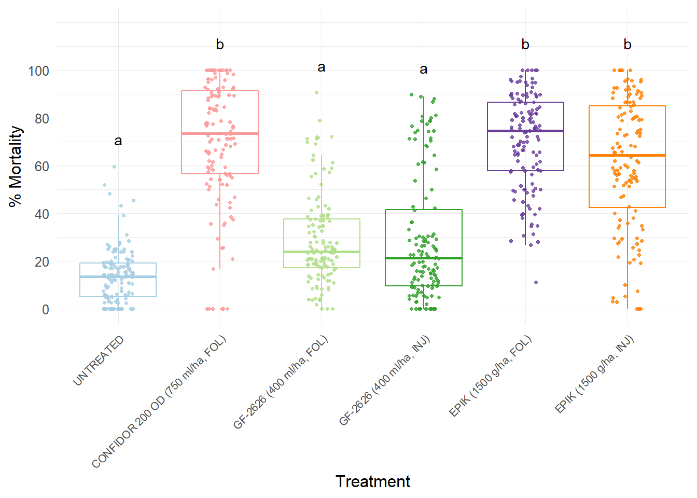
Vemos en efecto que los tratamientos 1, 3 y 5 son más efectivos en cuanto a mortalidad que 2 y 4 respecto al control.
Ahora para finalizar, procedemos a extraer las predicciones de los efectos aleatorios del modelo (sus esperanzas condicionales que minimizarían el error cuadrático medio), también conocidas como best linear unbiased predictions (BLUPs). Estas estimaciones nos permiten conocer, por ejemplo, cómo varía la respuesta en cada nivel del efecto aleatorio una vez tenida en cuenta la estructura fija del modelo. Dicho de otro modo, los BLUPs representan los desvíos específicos de cada unidad (como sujetos, escuelas o grupos) respecto al promedio poblacional predicho por los efectos fijos, ajustados por la varianza estimada de los componentes aleatorios. Obtendremos también las parcelas influyentes (que hemos considerado como tales si el BLUP difiere al menos 2 desviaciones estándar respecto a la media).
# Extraer efectos aleatorios (BLUPs)
library(lme4)
blups <- ranef(modelo_21)$Plotf
colnames(blups) <- "BLUP"
# Identificar parcelas con efectos extremos (más de 2 SD de la media)
blups$DesvStd <- scale(blups$BLUP)
parcelas_influyentes <- rownames(blups)[abs(blups$DesvStd) > 1.5]
print(parcelas_influyentes)[1] "201" "404"Graficamos los intervalos de confianza para los BLUPs en función de la parcela:
library(lattice)
dotplot(ranef(modelo_21, condVar = TRUE))$Plotf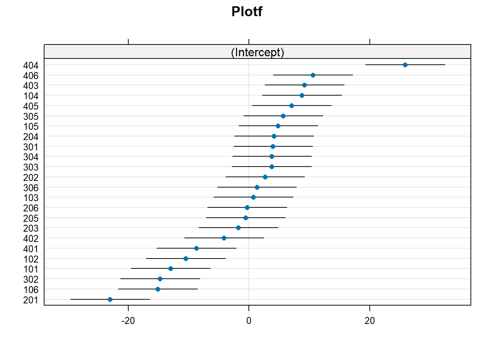
Y por colores de tratamiento:
library(lme4)
library(ggplot2)
library(dplyr)
# Paso 1: Obtener BLUPs con varianza condicional
blups <- ranef(modelo_21, condVar = TRUE)
blup_df <- as.data.frame(blups$Plotf)
blup_df$Plotf <- rownames(blups$Plotf)
# Extraer las varianzas condicionales
post_vars <- attr(blups$Plotf, "postVar")[1, 1, ] # vector con varianzas
se <- sqrt(post_vars) # error estándar
blup_df$se <- se
blup_df$lower <- blup_df$`(Intercept)` - 2 * se
blup_df$upper <- blup_df$`(Intercept)` + 2 * se
# Paso 2: Asegurarse de que 'arbol1' tiene solo una fila por PLOTf
Trtf <- arbol2[!duplicated(arbol2$Plotf), c("Plotf", "Trtf")]
# Paso 3: Merge con tratamientos
blup_df <- merge(blup_df, Trtf, by = "Plotf")
# Paso 4: Ordenar factor PLOTf por valor del intercepto
blup_df <- blup_df %>%
arrange(`(Intercept)`) %>%
mutate(Plotf = factor(Plotf, levels = Plotf))
# Paso 5: Graficar con ggplot y barras de error
ggplot(blup_df, aes(x = `(Intercept)`, y = Plotf, color = Trtf)) +
geom_point(size = 2) +
geom_errorbarh(aes(xmin = lower, xmax = upper), height = 0.2, linewidth = 0.5) +
labs(title = "BLUPs por parcela con intervalos de confianza (95%)",
x = "BLUP del intercepto",
y = "Parcela (Plotf)",
color = "Tratamiento") +
theme_minimal(base_size = 12) +
theme(axis.text.y = element_text(size = 6)) # reducir tamaño si hay muchas parcelas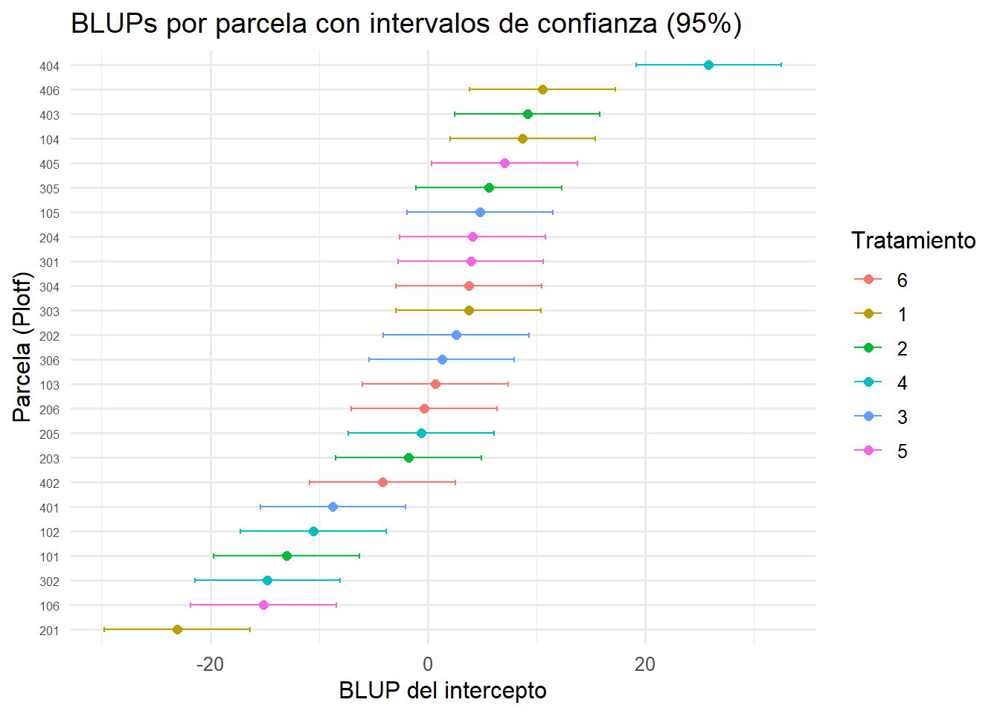
Recordemos que la interpretación es:
BLUP (eje X):
Representa la desviación de cada parcela respecto al promedio general
Valores positivos = parcelas con mortalidad por encima del promedio
Valores negativos = parcelas con mortalidad por debajo del promedio
Intervalos de confianza:
Si el intervalo cruza cero: La parcela no difiere significativamente del promedio
Si el intervalo no cruza cero: Efecto significativo (positivo o negativo)
Patrones por tratamiento:
Agrupamientos de colores similares indicarían que ciertos tratamientos tienden a tener parcelas con efectos similares
Dispersión de colores mezclados sugeriría que la variabilidad entre parcelas no está fuertemente asociada a los tratamientos
3.3.3 Modelo 2: modelo lmer con logaritmo
library(lme4)
# Modelo con intercepto y pendiente aleatoria por Plotf (efecto de tratamiento varía entre parcelas)
modelo_22 <- lmer(log(mortalidad + 1) ~ Trtf + (1|Plotf), data = arbol2)
summary(modelo_22)Linear mixed model fit by REML. t-tests use Satterthwaite's method [
lmerModLmerTest]
Formula: log(mortalidad + 1) ~ Trtf + (1 | Plotf)
Data: arbol2
REML criterion at convergence: 2032.6
Scaled residuals:
Min 1Q Median 3Q Max
-4.5255 -0.2486 0.1906 0.5702 1.9010
Random effects:
Groups Name Variance Std.Dev.
Plotf (Intercept) 0.1745 0.4178
Residual 0.7723 0.8788
Number of obs: 768, groups: Plotf, 24
Fixed effects:
Estimate Std. Error df t value Pr(>|t|)
(Intercept) 2.2300 0.2229 18.0000 10.007 8.84e-09 ***
Trtf1 1.8356 0.3152 18.0000 5.824 1.62e-05 ***
Trtf2 0.8972 0.3152 18.0000 2.847 0.0107 *
Trtf4 0.6380 0.3152 18.0000 2.024 0.0580 .
Trtf3 1.9892 0.3152 18.0000 6.312 5.99e-06 ***
Trtf5 1.6911 0.3152 18.0000 5.366 4.24e-05 ***
---
Signif. codes: 0 '***' 0.001 '**' 0.01 '*' 0.05 '.' 0.1 ' ' 1
Correlation of Fixed Effects:
(Intr) Trtf1 Trtf2 Trtf4 Trtf3
Trtf1 -0.707
Trtf2 -0.707 0.500
Trtf4 -0.707 0.500 0.500
Trtf3 -0.707 0.500 0.500 0.500
Trtf5 -0.707 0.500 0.500 0.500 0.500library(DHARMa)
residuos_simulados22 <- simulateResiduals(fittedModel = modelo_22)
plot(residuos_simulados22)
No sirve, no hay ni normalidad ni homogeneidad.
3.3.4 Modelo 3: modelo beta
library(glmmTMB)
# Escalado lineal al rango (0, 1)
arbol2$mortalidad_esc <- arbol2$mortalidad/100
# Ajustar valores 0 y 1
epsilon <- 1e-4
arbol2$mortalidad_esc[arbol2$mortalidad_esc == 0] <- epsilon
arbol2$mortalidad_esc[arbol2$mortalidad_esc == 1] <- 1 - epsilon
modelo_23 <- glmmTMB(
mortalidad_esc ~ Trtf + (1 | Plotf) + (1 | Plotf:Rete),
family = beta_family(link = "logit"),
data = arbol2
)
summary(modelo_23) Family: beta ( logit )
Formula: mortalidad_esc ~ Trtf + (1 | Plotf) + (1 | Plotf:Rete)
Data: arbol2
AIC BIC logLik -2*log(L) df.resid
-928.7 -886.9 473.4 -946.7 759
Random effects:
Conditional model:
Groups Name Variance Std.Dev.
Plotf (Intercept) 0.1749 0.4182
Plotf:Rete (Intercept) 0.5931 0.7701
Number of obs: 768, groups: Plotf, 24; Plotf:Rete, 96
Dispersion parameter for beta family (): 3.72
Conditional model:
Estimate Std. Error z value Pr(>|z|)
(Intercept) -1.8306 0.2995 -6.113 9.80e-10 ***
Trtf1 2.8619 0.4229 6.767 1.32e-11 ***
Trtf2 0.9449 0.4208 2.246 0.0247 *
Trtf4 0.7253 0.4208 1.724 0.0848 .
Trtf3 2.7767 0.4228 6.567 5.14e-11 ***
Trtf5 2.3362 0.4217 5.540 3.03e-08 ***
---
Signif. codes: 0 '***' 0.001 '**' 0.01 '*' 0.05 '.' 0.1 ' ' 1library(DHARMa)
residuos_simulados23 <- simulateResiduals(fittedModel = modelo_23)
plot(residuos_simulados23)
Tampoco vale porque no hay ni normalidad ni homogeneidad.
3.3.5 Modelo 4: modelo lineal con nlme con heterocedasticidad
library(nlme)
modelo_21_nlme <- lme(
mortalidad ~ Trtf,
random = ~1 | Plotf,
data = arbol2,
weights = varIdent(form = ~1 | Trtf) # Permite varianzas distintas por nivel de Trtf
)
summary(modelo_21_nlme)Linear mixed-effects model fit by REML
Data: arbol2
AIC BIC logLik
6718.935 6779.202 -3346.467
Random effects:
Formula: ~1 | Plotf
(Intercept) Residual
StdDev: 12.04336 16.89571
Variance function:
Structure: Different standard deviations per stratum
Formula: ~1 | Trtf
Parameter estimates:
2 4 6 1 3 5
1.0000000 1.1975404 0.6601942 1.2798124 1.1370988 1.5364439
Fixed effects: mortalidad ~ Trtf
Value Std.Error DF t-value p-value
(Intercept) 13.63640 6.101859 744 2.234795 0.0257
Trtf1 56.85454 8.783291 18 6.473034 0.0000
Trtf2 14.92421 8.701926 18 1.715047 0.1035
Trtf4 15.47131 8.757377 18 1.766660 0.0942
Trtf3 56.82434 8.739390 18 6.502094 0.0000
Trtf5 47.80911 8.874573 18 5.387201 0.0000
Correlation:
(Intr) Trtf1 Trtf2 Trtf4 Trtf3
Trtf1 -0.695
Trtf2 -0.701 0.487
Trtf4 -0.697 0.484 0.489
Trtf3 -0.698 0.485 0.490 0.486
Trtf5 -0.688 0.478 0.482 0.479 0.480
Standardized Within-Group Residuals:
Min Q1 Med Q3 Max
-3.15629083 -0.68972061 0.01989474 0.71366977 3.77269418
Number of Observations: 768
Number of Groups: 24 Procedemos a hacer el diagnóstico completo del modelo:
test_ad_bootstrap_normaliz(modelo_21_nlme)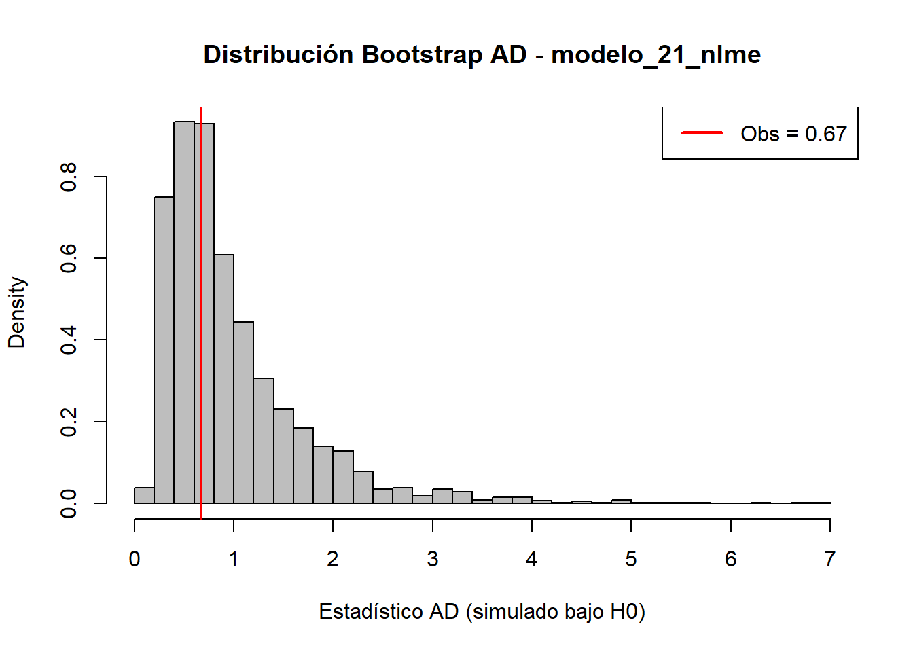
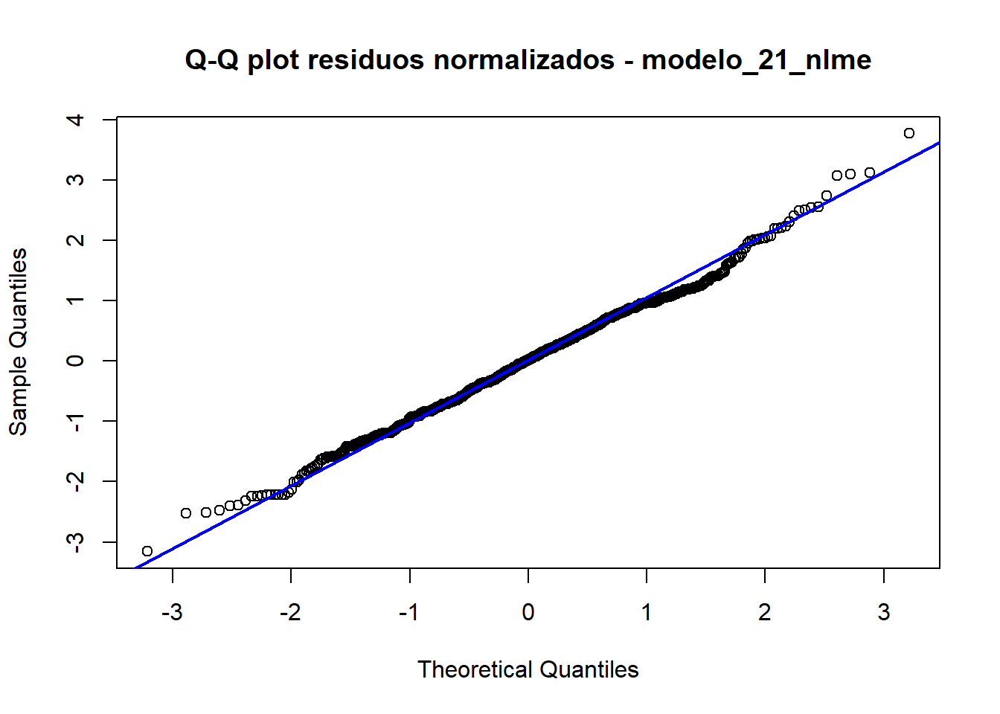
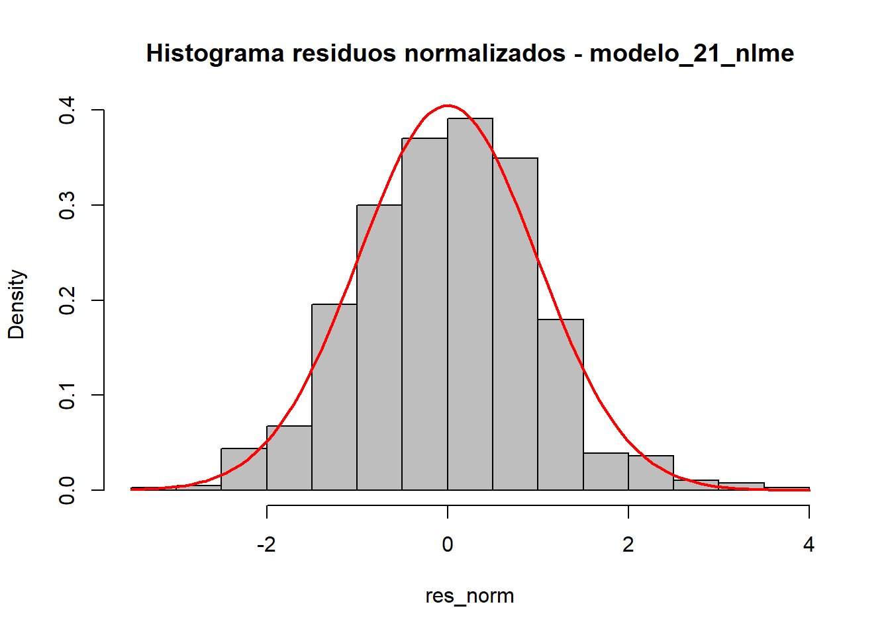
Anderson-Darling con bootstrap paramétrico (3000 réplicas)
data: Residuos normalizados de modelo_21_nlme
AD = 0.67012, p-value = 0.59# ---- 4. R² marginal y condicional (explicación del modelo) ----
r2 <- r.squaredGLMM(modelo_21_nlme)
cat("Marginal R² (Treatment):", round(r2[1, "R2m"]*100, 3), "%\n")Marginal R² (Treatment): 54.361 %cat("Conditional R² (Treatment + Plots):", round(r2[1, "R2c"]*100, 3), "%\n")Conditional R² (Treatment + Plots): 69.737 %cat("Variance proportion explained by the plots in the model:", round((r2[1, "R2c"] - r2[1, "R2m"])*100, 3), "%\n")Variance proportion explained by the plots in the model: 15.376 %El modelo verifica las hipótesis de normalidad, ya que p > 0.05. Así, el modelo es bueno. La \(R_{\text{marginal}}^2 = 0.544\), \(R_{\text{condicional}}^2 = 0.697\) y la variabilidad que explica Plotf es del 15.4%. Vemos además si mejora significativamente el modelo lineal mixto:
# logLik(modelo_21)
# logLik(modelo_21_nlme)
#Alternativa para más detalle: paso a nlme el modelo homocedástico
#para compararlos y veo el p-valor (en este caso es mejor #claramente modelo_21_nlme)
modelo_21_lme <- lme(
fixed = mortalidad ~ Trtf,
random = ~1 | Plotf,
data = arbol2
)
anova(modelo_21_lme, modelo_21_nlme) Model df AIC BIC logLik Test L.Ratio p-value
modelo_21_lme 1 8 6796.683 6833.771 -3390.342
modelo_21_nlme 2 13 6718.935 6779.202 -3346.467 1 vs 2 87.74876 <.0001El modelo que permite varianzas diferentes por tratamiento (modelo_21_nlme) mejora significativamente el ajuste. Por tanto, deberíamos usar modelo_21_nlme como modelo final si se cumple la normalidad como veremos después.
Hacemos análisis de la deviance para el modelo nuevo que permite heterocedasticidad.
Anova(modelo_21_nlme, type = "III")Analysis of Deviance Table (Type III tests)
Response: mortalidad
Chisq Df Pr(>Chisq)
(Intercept) 4.9943 1 0.02543 *
Trtf 79.1939 5 1.237e-15 ***
---
Signif. codes: 0 '***' 0.001 '**' 0.01 '*' 0.05 '.' 0.1 ' ' 1Estudiamos las diferencias de medias marginales para los pares:
library(emmeans)
library(multcomp)
library(multcompView)
# Estimar medias marginales para Trtf con modelo nlme
emmeans_trat21_nlme <- emmeans(modelo_21_nlme, ~ Trtf)
print(emmeans_trat21_nlme) Trtf emmean SE df lower.CL upper.CL
6 13.6 6.10 23 1.01 26.3
1 70.5 6.32 18 57.22 83.8
2 28.6 6.20 18 15.53 41.6
4 29.1 6.28 18 15.91 42.3
3 70.5 6.26 18 57.32 83.6
5 61.4 6.44 18 47.91 75.0
Degrees-of-freedom method: containment
Confidence level used: 0.95 # Comparaciones pareadas ajustando p con FDR
comparaciones21_nlme <- pairs(emmeans_trat21_nlme, adjust = "fdr")
print(comparaciones21_nlme) contrast estimate SE df t.ratio p.value
Trtf6 - Trtf1 -56.8545 8.78 18 -6.473 <.0001
Trtf6 - Trtf2 -14.9242 8.70 18 -1.715 0.1411
Trtf6 - Trtf4 -15.4713 8.76 18 -1.767 0.1411
Trtf6 - Trtf3 -56.8243 8.74 18 -6.502 <.0001
Trtf6 - Trtf5 -47.8091 8.87 18 -5.387 0.0002
Trtf1 - Trtf2 41.9303 8.85 18 4.735 0.0004
Trtf1 - Trtf4 41.3832 8.91 18 4.645 0.0004
Trtf1 - Trtf3 0.0302 8.89 18 0.003 0.9973
Trtf1 - Trtf5 9.0454 9.02 18 1.002 0.3802
Trtf2 - Trtf4 -0.5471 8.83 18 -0.062 0.9973
Trtf2 - Trtf3 -41.9001 8.81 18 -4.755 0.0004
Trtf2 - Trtf5 -32.8849 8.95 18 -3.676 0.0032
Trtf4 - Trtf3 -41.3530 8.87 18 -4.664 0.0004
Trtf4 - Trtf5 -32.3378 9.00 18 -3.593 0.0035
Trtf3 - Trtf5 9.0152 8.98 18 1.004 0.3802
Degrees-of-freedom method: containment
P value adjustment: fdr method for 15 tests # Plot sencillo de comparaciones
plot(comparaciones21_nlme)
# Letras para grupos estadísticamente diferentes (cld)
letras21_nlme <- cld(emmeans_trat21_nlme, Letters = letters, adjust = "fdr")
print(letras21_nlme) Trtf emmean SE df lower.CL upper.CL .group
6 13.6 6.10 23 -3.98 31.2 a
2 28.6 6.20 18 10.18 46.9 a
4 29.1 6.28 18 10.50 47.7 a
5 61.4 6.44 18 42.35 80.5 b
3 70.5 6.26 18 51.92 89.0 b
1 70.5 6.32 18 51.77 89.2 b
Degrees-of-freedom method: containment
Confidence level used: 0.95
Conf-level adjustment: bonferroni method for 6 estimates
P value adjustment: fdr method for 15 tests
significance level used: alpha = 0.05
NOTE: If two or more means share the same grouping symbol,
then we cannot show them to be different.
But we also did not show them to be the same. Las letras coinciden de hecho con lo que habíamos obtenido del modelo 1, el modelo detecta exactamente las mismas diferencias.
3.4 P2 - ¿Es más eficaz foliar o inyectar?
Hacemos un diagrama de árbol similar para 2018 (como hicimos en la pregunta 2 en 2017):
graph TD Treatments --> SULFOXAFLOR Treatments --> CONFIDOR Treatments --> EPIK Treatments --> UNTREATED SULFOXAFLOR --> INJECTION_SULFO[INJECTION] CONFIDOR --> FOLIAR_CONFIDOR[FOLIAR APPLICATION] EPIK --> FOLIAR_EPIK[FOLIAR APPLICATION] EPIK --> INJECTION_EPIK[INJECTION]
Tal y como hicimos para 2017 en P2 - ¿Es más eficaz foliar o inyectar?, mediante pooling de los datos, creamos un factor fijo a estudiar categ2 según los tratamientos y aplicaciones en 2018.
library(dplyr)
arbol2 <- arbol2 %>%
mutate(
categ2 = factor(case_when(
Trt == 6 ~ "UNTREATED",
Trt == 2 ~ "SULFOXAFLOR_FOLIAR_400", # Aplicación A
Trt == 3 ~ "EPIK_FOLIAR_1500", # Aplicación A
Trt == 4 ~ "SULFOXAFLOR_INJECT_400", # Aplicación B
Trt == 5 ~ "EPIK_INJECT_1500" # Aplicación B
# otros valores → NA
)),
categ2 = relevel(categ2, ref = "UNTREATED")
)
# Crear nuevo dataframe sin NA en categ2
arbol2_sinNA <- arbol2 %>%
filter(!is.na(categ2))
# Verificar niveles
levels(arbol2_sinNA$categ2)[1] "UNTREATED" "EPIK_FOLIAR_1500" "EPIK_INJECT_1500"
[4] "SULFOXAFLOR_FOLIAR_400" "SULFOXAFLOR_INJECT_400"Ahora planteamos varios modelos:
3.4.1 Modelo 1: Modelo lineal mixto con lmer
#Modelo 1 (lmer, modelo lineal mixto, family = gaussian)
modelo2_lmerfol <- lmer(mortalidad ~ categ2 + (1 | Plotf), data = arbol2_sinNA)
summary(modelo2_lmerfol)Linear mixed model fit by REML. t-tests use Satterthwaite's method [
lmerModLmerTest]
Formula: mortalidad ~ categ2 + (1 | Plotf)
Data: arbol2_sinNA
REML criterion at convergence: 5622.4
Scaled residuals:
Min 1Q Median 3Q Max
-3.3865 -0.6166 0.0107 0.6090 2.7714
Random effects:
Groups Name Variance Std.Dev.
Plotf (Intercept) 123.7 11.12
Residual 372.5 19.30
Number of obs: 640, groups: Plotf, 20
Fixed effects:
Estimate Std. Error df t value Pr(>|t|)
(Intercept) 13.636 5.816 15.000 2.345 0.0332 *
categ2EPIK_FOLIAR_1500 56.824 8.225 15.000 6.909 4.98e-06 ***
categ2EPIK_INJECT_1500 47.809 8.225 15.000 5.813 3.42e-05 ***
categ2SULFOXAFLOR_FOLIAR_400 14.924 8.225 15.000 1.815 0.0896 .
categ2SULFOXAFLOR_INJECT_400 15.471 8.225 15.000 1.881 0.0795 .
---
Signif. codes: 0 '***' 0.001 '**' 0.01 '*' 0.05 '.' 0.1 ' ' 1
Correlation of Fixed Effects:
(Intr) c2EPIK_F c2EPIK_I c2SULFOXAFLOR_F
c2EPIK_FOLI -0.707
c2EPIK_INJE -0.707 0.500
c2SULFOXAFLOR_F -0.707 0.500 0.500
c2SULFOXAFLOR_I -0.707 0.500 0.500 0.500 Veo el DHARMa:
library(DHARMa)
residuos2_simulados_lmerfol <- simulateResiduals(fittedModel = modelo2_lmerfol)
plot(residuos2_simulados_lmerfol)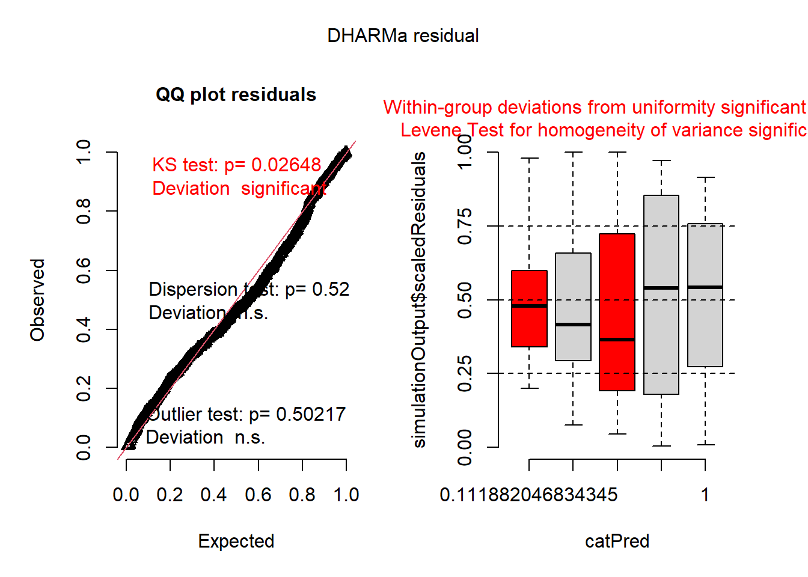
No me vale, porque no tenemos ni normalidad ni homocedasticidad.
3.4.2 Modelo 2: modelo lineal con nlme con heterocedasticidad
modelo2_22_nlme <- lme(
mortalidad ~ categ2,
random = ~1 | Plotf,
data = arbol2_sinNA,
weights = varIdent(form = ~1 | categ2), # Permite varianzas distintas por nivel de categ
)
summary(modelo2_13_nlme)Linear mixed-effects model fit by REML
Data: arbol1_sinNA
AIC BIC logLik
2509.592 2556.936 -1241.796
Random effects:
Formula: ~1 | PLOTf
(Intercept) Residual
StdDev: 0.0131 30.48573
Variance function:
Structure: Different standard deviations per stratum
Formula: ~1 | categ
Parameter estimates:
SULFOXAFLOR_INJECT_400 CONFIDOR_FOLIAR_750 UNTREATED
1.0000000 0.7529821 0.3138300
CONFIDOR_INJECT_750 SULFOXAFLOR_FOLIAR_200 SULFOXAFLOR_FOLIAR_400
0.4998082 0.7766235 0.6349895
Fixed effects: mortalidad ~ categ
Value Std.Error DF t-value p-value
(Intercept) 19.75019 1.380942 264 14.301973 0.0000
categCONFIDOR_FOLIAR_750 57.83752 3.589567 18 16.112671 0.0000
categCONFIDOR_INJECT_750 3.05914 2.596892 18 1.177999 0.2541
categSULFOXAFLOR_FOLIAR_200 15.85215 3.685806 18 4.300863 0.0004
categSULFOXAFLOR_FOLIAR_400 20.28981 3.116739 18 6.509948 0.0000
categSULFOXAFLOR_INJECT_400 17.85466 4.611846 18 3.871478 0.0011
Correlation:
(Intr) cCONFIDOR_F cCONFIDOR_I
categCONFIDOR_FOLIAR_750 -0.385
categCONFIDOR_INJECT_750 -0.532 0.205
categSULFOXAFLOR_FOLIAR_200 -0.375 0.144 0.199
categSULFOXAFLOR_FOLIAR_400 -0.443 0.170 0.236
categSULFOXAFLOR_INJECT_400 -0.299 0.115 0.159
cSULFOXAFLOR_FOLIAR_2 cSULFOXAFLOR_FOLIAR_4
categCONFIDOR_FOLIAR_750
categCONFIDOR_INJECT_750
categSULFOXAFLOR_FOLIAR_200
categSULFOXAFLOR_FOLIAR_400 0.166
categSULFOXAFLOR_INJECT_400 0.112 0.133
Standardized Within-Group Residuals:
Min Q1 Med Q3 Max
-2.73457929 -0.80928195 0.02611317 0.74900739 2.69215785
Number of Observations: 288
Number of Groups: 24 Hacemos un diagnóstico completo del modelo:
test_ad_bootstrap_normaliz(modelo2_22_nlme)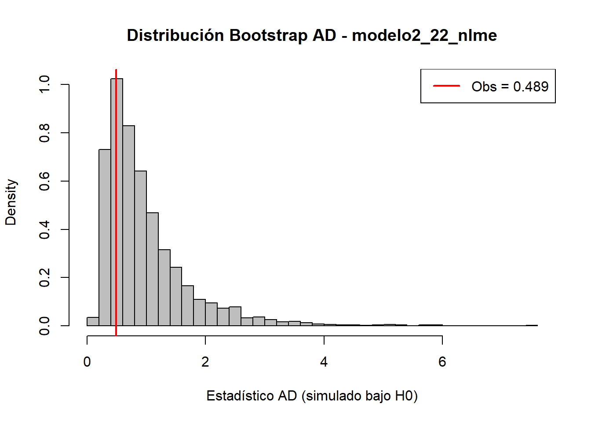
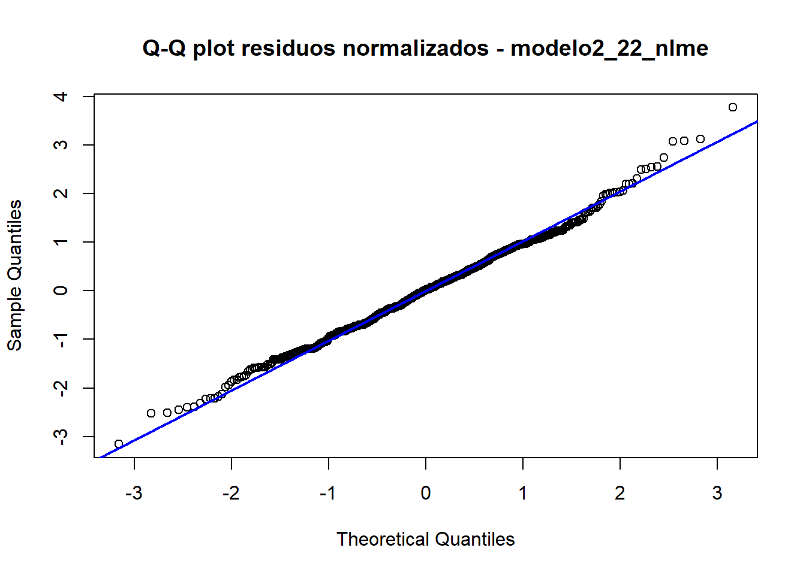
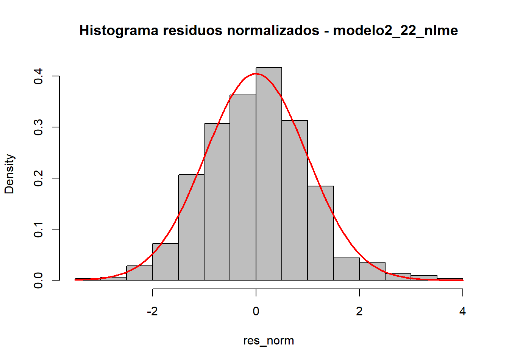
Anderson-Darling con bootstrap paramétrico (3000 réplicas)
data: Residuos normalizados de modelo2_22_nlme
AD = 0.48851, p-value = 0.7557# ---- 4. R² marginal y condicional (explicación del modelo) ----
r2 <- r.squaredGLMM(modelo2_22_nlme)
cat("R² marginal (Trtf):", round(r2[1, "R2m"], 3), "\n")R² marginal (Trtf): 0.535 cat("R² condicional (Trtf + Plotf):", round(r2[1, "R2c"], 3), "\n")R² condicional (Trtf + Plotf): 0.673 cat("Proporción atribuida a Plotf:", round(r2[1, "R2c"] - r2[1, "R2m"], 3), "\n")Proporción atribuida a Plotf: 0.138 El modelo verifica las hipótesis de normalidad, ya que p > 0.05. Así, el modelo es bueno. La \(R_{\text{marginal}}^2 = 0.535\), \(R_{\text{condicional}}^2 = 0.673\) y la variabilidad que explica Plotf es del 13.8%. Usamos este modelo ya que el modelo lineal mixto ni verificaba la normalidad ni la homogeneidad de varianzas (no comparamos los modelos, directamente).
Hacemos análisis de la deviance para este modelo, que tiene en cuenta la heterocedasticidad de los residuos con los pesos para las varianzas.
Anova(modelo_21_nlme, type = "III")Analysis of Deviance Table (Type III tests)
Response: mortalidad
Chisq Df Pr(>Chisq)
(Intercept) 4.9943 1 0.02543 *
Trtf 79.1939 5 1.237e-15 ***
---
Signif. codes: 0 '***' 0.001 '**' 0.01 '*' 0.05 '.' 0.1 ' ' 1Estudiamos las diferencias de medias marginales para los pares:
library(emmeans)
library(multcomp)
library(multcompView)
# Estimar medias marginales para Trtf con modelo nlme
emmeans2_trat22_nlme <- emmeans(modelo2_22_nlme, ~ categ2)
print(emmeans2_trat22_nlme) categ2 emmean SE df lower.CL upper.CL
UNTREATED 13.6 5.57 19 1.98 25.3
EPIK_FOLIAR_1500 70.5 5.74 15 58.23 82.7
EPIK_INJECT_1500 61.4 5.94 15 48.78 74.1
SULFOXAFLOR_FOLIAR_400 28.6 5.68 15 16.45 40.7
SULFOXAFLOR_INJECT_400 29.1 5.77 15 16.82 41.4
Degrees-of-freedom method: containment
Confidence level used: 0.95 # Comparaciones pareadas ajustando p con FDR
comparaciones2_22_nlme <- pairs(emmeans2_trat22_nlme, adjust = "fdr")
print(comparaciones2_22_nlme) contrast estimate SE df t.ratio
UNTREATED - EPIK_FOLIAR_1500 -56.824 8.00 15 -7.105
UNTREATED - EPIK_INJECT_1500 -47.809 8.15 15 -5.869
UNTREATED - SULFOXAFLOR_FOLIAR_400 -14.924 7.96 15 -1.876
UNTREATED - SULFOXAFLOR_INJECT_400 -15.471 8.02 15 -1.930
EPIK_FOLIAR_1500 - EPIK_INJECT_1500 9.015 8.26 15 1.091
EPIK_FOLIAR_1500 - SULFOXAFLOR_FOLIAR_400 41.900 8.08 15 5.188
EPIK_FOLIAR_1500 - SULFOXAFLOR_INJECT_400 41.353 8.14 15 5.083
EPIK_INJECT_1500 - SULFOXAFLOR_FOLIAR_400 32.885 8.22 15 3.999
EPIK_INJECT_1500 - SULFOXAFLOR_INJECT_400 32.338 8.28 15 3.905
SULFOXAFLOR_FOLIAR_400 - SULFOXAFLOR_INJECT_400 -0.547 8.10 15 -0.068
p.value
<.0001
0.0002
0.1004
0.1004
0.3249
0.0003
0.0003
0.0023
0.0023
0.9470
Degrees-of-freedom method: containment
P value adjustment: fdr method for 10 tests # Plot sencillo de comparaciones
plot(comparaciones2_22_nlme)
Vemos el cld:
# Letras para grupos estadísticamente diferentes (cld)
letras2_22_nlme <- cld(emmeans2_trat22_nlme, Letters = letters, adjust = "fdr")
print(letras2_22_nlme) categ2 emmean SE df lower.CL upper.CL .group
UNTREATED 13.6 5.57 19 -2.3 29.6 a
SULFOXAFLOR_FOLIAR_400 28.6 5.68 15 11.8 45.3 a
SULFOXAFLOR_INJECT_400 29.1 5.77 15 12.1 46.1 a
EPIK_INJECT_1500 61.4 5.94 15 43.9 79.0 b
EPIK_FOLIAR_1500 70.5 5.74 15 53.5 87.4 b
Degrees-of-freedom method: containment
Confidence level used: 0.95
Conf-level adjustment: bonferroni method for 5 estimates
P value adjustment: fdr method for 10 tests
significance level used: alpha = 0.05
NOTE: If two or more means share the same grouping symbol,
then we cannot show them to be different.
But we also did not show them to be the same. Hacemos el boxplot + dotplot:
library(ggplot2)
library(dplyr)
# Dataframe paleta 2018: 6 tratamientos originales (no se elimina ninguno)
pal_2018 <- data.frame(
categ2 = c(
"UNTREATED",
"SULFOXAFLOR_FOLIAR_400",
"SULFOXAFLOR_INJECT_400",
"EPIK_FOLIAR_1500",
"EPIK_INJECT_1500",
"CONFIDOR_INJECT_750"
),
label = c(
"UNTREATED",
"GF-2626 (400 ml/ha, FOL)",
"GF-2626 (400 ml/ha, INJ)",
"EPIK (1500 g/ha, INJ)",
"EPIK (1500 g/ha, FOL)",
"CONFIDOR 200 OD (750 ml/ha, FOL)"
),
color = c(
"#A6CEE3", # UNTREATED
"#B2DF8A", # SULFOXAFLOR_FOLIAR_400
"#33A02C", # SULFOXAFLOR_INJECT_400
"#6A3D9A", # EPIK_FOLIAR_1500
"#FF7F00", # EPIK_INJECT_1500
"#FB9A99" # CONFIDOR_FOLIAR_750
),
stringsAsFactors = FALSE
)
# Vector de colores para el gráfico
pal_2018_vec <- setNames(pal_2018$color, pal_2018$categ2)
# Tus datos de letras de grupo y jitter (igual que en tu código)
arbletras2 <- tibble(
categ2 = factor(c(
"UNTREATED",
"SULFOXAFLOR_FOLIAR_400",
"SULFOXAFLOR_INJECT_400",
"EPIK_INJECT_1500",
"EPIK_FOLIAR_1500"
), levels = levels(arbol2_sinNA$categ2)),
emmean = c(13.6, 28.6, 29.1, 61.4, 70.5),
SE = c(5.57, 5.68, 5.77, 5.94, 5.74),
df = c(19, 15, 15, 15, 15),
lower.CL = c(-2.3, 11.8, 12.1, 43.9, 53.5),
upper.CL = c(29.6, 45.3, 46.1, 79.0, 87.4),
.group = c("a", "a", "a", "b", "b")
)
arbol2_jitter <- arbol2_sinNA %>% sample_frac(1)
# Posiciones para las letras
posiciones_letras2 <- arbol2_sinNA %>%
group_by(categ2) %>%
summarise(y.pos = max(mortalidad, na.rm = TRUE) + 8)
arbletras2 <- arbletras2 %>%
left_join(posiciones_letras2, by = "categ2")
# Gráfico
ggplot(arbol2_sinNA, aes(x = categ2, y = mortalidad)) +
geom_boxplot(aes(color = categ2), fill = NA, outlier.shape = NA, linewidth = 0.5) +
geom_jitter(
data = arbol2_jitter,
aes(color = categ2, fill = categ2),
width = 0.15, size = 1.5, alpha = 0.8,
shape = 21, stroke = 0.1
) +
geom_text(
data = arbletras2,
aes(x = categ2, y = y.pos, label = .group),
inherit.aes = FALSE, vjust = 0, size = 4
) +
scale_y_continuous(limits = c(-1, max(arbletras2$y.pos) + 10), breaks = seq(0, 100, 20)) +
scale_color_manual(values = pal_2018_vec) +
scale_fill_manual(values = pal_2018_vec) +
# Aquí el mapeo a los nombres largos del eje X:
scale_x_discrete(labels = setNames(pal_2018$label, pal_2018$categ2)) +
labs(
x = "Treatment",
y = "% Mortality"
) +
theme_minimal(base_size = 14) +
theme(
legend.position = "none",
axis.text.x = element_text(angle = 45, hjust = 1, size = 7),
panel.grid.major = element_line(size = 0.2),
panel.grid.minor = element_line(size = 0.1)
)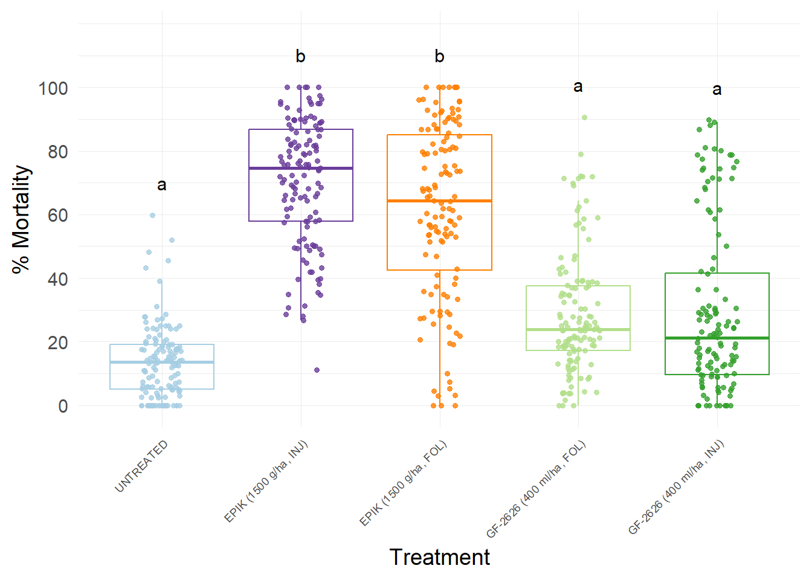
4 P3 - ¿Qué tratamiento es más persistente?
4.1 Treatment palette para gráficos
Para asegurar por si hubiera algún problemilla con la asignación de colores por tratamientos, creamos una paleta de colores para nuestros tratamientos ya.
treatment_palette_extended <- data.frame(
code = c(
"UNTREATED",
"CONFIDOR_INJECT_750",
"CONFIDOR_FOLIAR_750",
"GF2626_FOLIAR_200",
"GF2626_FOLIAR_400",
"GF2626_INJECT_400",
"EPIK_FOLIAR_1500",
"EPIK_INJECT_1500",
"KARATE_ZEON_FOLIAR_250"
),
label = c(
"UNTREATED",
"CONFIDOR 200 OD (750 ml/ha, Injection)",
"CONFIDOR 200 OD (750 ml/ha, Foliar)",
"GF-2626 (200 ml/ha, Injection)",
"GF-2626 (400 ml/ha, Foliar)",
"GF-2626 (400 ml/ha, Injection)",
"EPIK (1500 g/ha, Foliar)",
"EPIK (1500 g/ha, Injection)",
"KARATE ZEON 10CS (250 ml/ha, Injection)"
),
color = c(
"#A6CEE3", # UNTREATED
"#E31A1C", # CONFIDOR_INJECT_750
"#FB9A99", # CONFIDOR_FOLIAR_750
"#1F78B4", # GF2626_FOLIAR_200
"#B2DF8A", # GF2626_FOLIAR_400
"#33A02C", # GF2626_INJECT_400
"#6A3D9A", # EPIK_FOLIAR_1500
"#FF7F00", # EPIK_INJECT_1500
"#FDBF6F" # KARATE_ZEON_FOLIAR_250
),
num_2017 = c(
7, # UNTREATED
4, # CONFIDOR_INJECT_750 (FOL)
5, # CONFIDOR_FOLIAR_750 (INJ)
1, # GF2626_FOLIAR_200 (FOL)
2, # GF2626_FOLIAR_400 (FOL)
3, # GF2626_INJECT_400 (INJ)
NA, # EPIK_FOLIAR_1500 (NO EN 2017)
NA, # EPIK_INJECT_1500 (NO EN 2017)
6 # KARATE_ZEON_FOLIAR_250 (FOL)
),
num_2018 = c(
6, # UNTREATED
NA, # CONFIDOR_INJECT_750 (INJ, NO EN 2018)
1, # CONFIDOR_FOLIAR_750 (FOL)
NA, # GF2626_FOLIAR_200 (FOL, NO EN 2018)
2, # GF2626_FOLIAR_400 (FOL)
4, # GF2626_INJECT_400 (INJ)
3, # EPIK_FOLIAR_1500 (FOL)
5, # EPIK_INJECT_1500 (INJ)
NA # KARATE_ZEON_FOLIAR_250 (FOL, NO EN 2018)
),
stringsAsFactors = FALSE
)4.2 Visualización de datos de 2017
Ahora queremos ver qué tratamiento es más persistente en el tiempo. Para ello vamos a ver primero los codos de cada una de las curvas para cada tratamiento y rama de árbol. Entonces tenemos que:
library(dplyr)
curvas_trt1 <- arbol1 %>%
group_by(Trtf, periodo) %>%
summarise(mortalidad = mean(mortalidad, na.rm = TRUE), .groups = "drop")Creamos ahora la función elbow, que nos devuelve la posición del codo respecto de la variable periodo (es decir, en qué periodo está el codo) teniendo como variable objetivo la mortalidad. Así, sean \((x_1, y_1), (x_2, y_2), \ldots, (x_n, y_n)\) una secuencia de puntos ordenados en el plano que definen una curva discreta.
Se define el codo (elbow) como el índice \(i^{*}\) tal que
\[ i^* = \underset{i \in \{2, \ldots, n-1\}}{\arg\max} \; d(i) \]
donde \(d(i)\) es la distancia perpendicular desde el punto \((x_i, y_i)\) al segmento que une los extremos \((x_1, y_1)\) y \((x_n, y_n)\), dada por:
\[ d(i) = \frac{ \left| \begin{vmatrix} x_n - x_1 & y_n - y_1 \\ x_i - x_1 & y_i - y_1 \end{vmatrix} \right| }{ \sqrt{(x_n - x_1)^2 + (y_n - y_1)^2} } \]
El índice \(i^{\ast}\) corresponde al punto de la curva que maximiza la distancia ortogonal respecto al segmento entre los extremos, y suele interpretarse como el “codo” de la curva. El codo será esencialmente el punto de una curva donde se produce un cambio significativo en la pendiente o la curvatura (donde se dobla más la curva).
Cabe destacar que nos interesa estudiar esto ya que es el punto donde se observa un mayor cambio de tendencia en la mortalidad, lo que a simple vista va a indicar independientemente de la introducción de insectos el punto más tardío de “mayor eficacia” del tratamiento y donde pondremos nuestro umbral para definir persistencia, que definiremos como
\[ \Delta_{mortalidad} = mortalidad_{codo}-mortalidad_{periodo-final} \]
Entonces, implementamos lo anterior en R:
elbow <- function(x, y) {
x <- as.numeric(as.character(x))
y <- as.numeric(y)
n <- length(x)
a <- cbind(x, y)
d <- rep(NA, n)
for (i in 2:(n-1)) {
p1 <- a[1, ]
p2 <- a[n, ]
p3 <- a[i, ]
d[i] <- abs(det(rbind(p2-p1, p3-p1))) / sqrt(sum((p2-p1)^2))
}
which.max(d)
}library(dplyr)
library(knitr)
library(kableExtra)
library(webshot2) # solo si quieres guardar como PNGWarning: package 'webshot2' was built under R version 4.4.3# Calcula codos
codos_trt1 <- curvas_trt1 %>%
group_by(Trtf) %>%
summarise(
periodo_codo = periodo[elbow(periodo, mortalidad)],
mortalidad_codo = mortalidad[elbow(periodo, mortalidad)],
.groups = "drop"
)
# Manualmente asigna los labels en inglés
# (debe tener la misma longitud y orden que tus niveles de Trtf)
treatment_labels_en <- c(
"GF-2626 (200 ml/ha, Injection)",
"GF-2626 (400 ml/ha, Foliar)",
"GF-2626 (400 ml/ha, Injection)",
"CONFIDOR 200 OD (750 ml/ha, Foliar)",
"CONFIDOR 200 OD (750 ml/ha, Injection)",
"KARATE ZEON 10CS (250 ml/ha, Injection)",
"UNTREATED"
)
# Asegúrate de que el orden coincida con levels(codos_trt1$Trtf)
codos_trt1$Treatment <- treatment_labels_en[as.numeric(as.character(codos_trt1$Trtf))]
# Reordena las columnas a mano
codos_trt1_out <- codos_trt1[, c("Treatment", "periodo_codo", "mortalidad_codo")]
# Nombres de columnas en inglés
colnames(codos_trt1_out) <- c("Treatment", "Elbow period", "Elbow mortality rate (%)")
# Tabla
tabla_kable <- kable(
codos_trt1_out, align = "c",
caption = "Period and mortality rate at the elbow for each treatment"
) %>%
kable_styling(full_width = FALSE, bootstrap_options = c("striped", "hover", "condensed"))
# Guardar como PNG
#save_kable(tabla_kable, file = "elbow_table_2017.png", zoom = 2)
tabla_kable| Treatment | Elbow period | Elbow mortality rate (%) |
|---|---|---|
| UNTREATED | 4 | 26.85372 |
| GF-2626 (200 ml/ha, Injection) | 5 | 56.17758 |
| GF-2626 (400 ml/ha, Foliar) | 5 | 59.54035 |
| GF-2626 (400 ml/ha, Injection) | 5 | 56.08444 |
| CONFIDOR 200 OD (750 ml/ha, Foliar) | 2 | 87.18348 |
| CONFIDOR 200 OD (750 ml/ha, Injection) | 3 | 35.96742 |
| KARATE ZEON 10CS (250 ml/ha, Injection) | 3 | 61.89056 |
Visualizamos ahora con ggplot2 las curvas con el promedio de mortalidad por tratamiento según el periodo, viendo los resultados de la tabla anterior gráficamente:
library(ggplot2)
library(dplyr)
curvas_trt1 <- curvas_trt1 %>%
mutate(
Trtf_code = recode(
as.character(Trtf),
"1" = "GF2626_FOLIAR_200",
"2" = "GF2626_FOLIAR_400",
"3" = "GF2626_INJECT_400",
"4" = "CONFIDOR_FOLIAR_750",
"5" = "CONFIDOR_INJECT_750",
"6" = "KARATE_ZEON_FOLIAR_250",
"7" = "UNTREATED"
)
)
codos_trt1 <- codos_trt1 %>%
mutate(
Trtf_code = recode(
as.character(Trtf),
"1" = "GF2626_FOLIAR_200",
"2" = "GF2626_FOLIAR_400",
"3" = "GF2626_INJECT_400",
"4" = "CONFIDOR_FOLIAR_750",
"5" = "CONFIDOR_INJECT_750",
"6" = "KARATE_ZEON_FOLIAR_250",
"7" = "UNTREATED"
)
)
colores_2017 <- with(
subset(treatment_palette_extended, !is.na(num_2017) & code %in% unique(curvas_trt1$Trtf_code)),
setNames(color, code)
)
ggplot(curvas_trt1, aes(x = periodo, y = mortalidad, color = Trtf_code, group = Trtf_code)) +
geom_line() +
geom_point() +
geom_vline(
data = codos_trt1,
aes(xintercept = periodo_codo, color = Trtf_code),
linetype = "dashed"
) +
scale_color_manual(
values = colores_2017,
labels = setNames(
treatment_palette_extended$label,
treatment_palette_extended$code
)
) +
theme_minimal() +
theme(
legend.position = "bottom",
legend.text = element_text(size = 8)
) +
labs(
x = "Period (within 2017)",
y = "Average mortality rate (%)",
color = NULL # <<--- Esto quita el título de la leyenda de color
)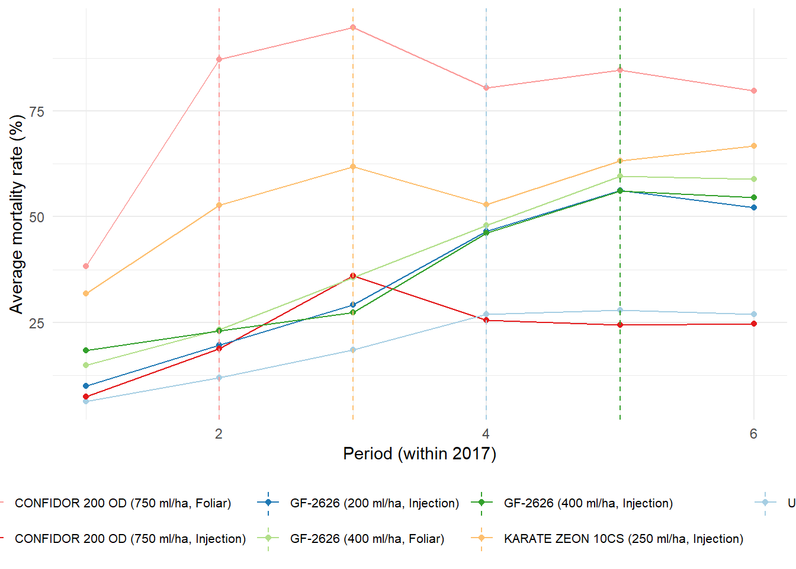
O bien hacemos cada curva por separado para visualizar los codos mejor, ya que éstos se solapan para varios tratamientos:
ggplot(curvas_trt1, aes(x = periodo, y = mortalidad)) +
geom_line(aes(group = 1), color = "gray20", size = 1) +
geom_point(aes(group = 1), color = "gray20", size = 2) +
geom_vline(
data = codos_trt1,
aes(xintercept = as.numeric(periodo_codo), color = Trtf_code),
linetype = "dashed", size = 1
) +
scale_color_manual(values = colores_2017) +
facet_wrap(~Trtf, scales = "free_y") +
theme_minimal(base_size = 15) +
labs(
title = "Mortality rate curve by treatment\nwith elbows on graph (2017)",
x = "Period (within 2017)",
y = "Average mortality rate (%)"
) +
theme(
legend.position = "none",
strip.text = element_text(face = "bold", size = 15)
)Warning: Using `size` aesthetic for lines was deprecated in ggplot2 3.4.0.
ℹ Please use `linewidth` instead.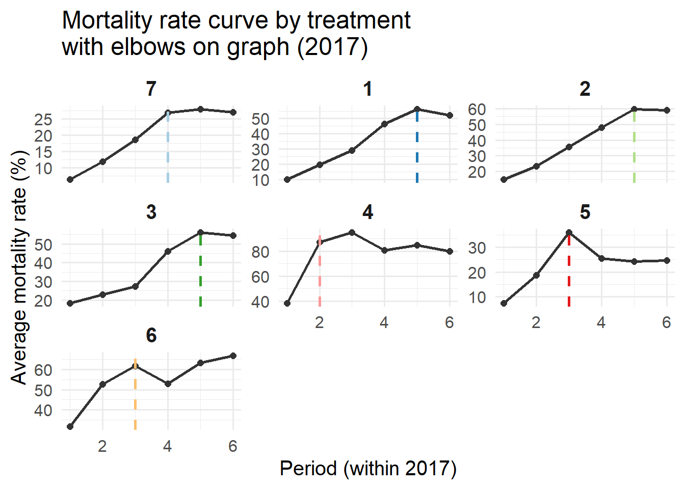
Analizamos el AUC de cada curva, es decir, el área bajo cada curva de mortalidad:
# curvas_trt ya debe tener columnas: Trtf, periodo, mortalidad
# Asegura que periodo es numérico
curvas_trt1 <- curvas_trt1 %>%
mutate(periodo = as.numeric(periodo))
# Función para calcular AUC usando la regla del trapecio
calc_auc <- function(x, y) {
idx <- order(x)
x <- x[idx]
y <- y[idx]
sum((y[-length(y)] + y[-1]) / 2 * diff(x))
}
# Calcular el AUC para cada tratamiento
auc_trt1 <- curvas_trt1 %>%
group_by(Trtf) %>%
summarise(
AUC = calc_auc(periodo, mortalidad),
.groups = "drop"
) %>%
arrange(desc(AUC))
print(auc_trt1)# A tibble: 7 × 2
Trtf AUC
<fct> <dbl>
1 4 406.
2 6 280.
3 2 203.
4 3 189.
5 1 183.
6 5 121.
7 7 102.Vemos con un algoritmo no supervisado (no conocemos qué umbral determina o no persistente o eficaz para nosotros) de clustering los diferentes grupos en función de la persistencia y eficacia para el 2018:
library(dplyr)
library(ggplot2)
library(factoextra)
library(cluster)
# --- 1. Asegura que periodo es numérico ---
curvas_trt1 <- curvas_trt1 %>% mutate(periodo = as.numeric(periodo))
# --- 2. Mortalidad final (último periodo, por tratamiento) ---
mortalidad_final <- curvas_trt1 %>%
group_by(Trtf) %>%
slice_max(periodo, n = 1, with_ties = FALSE) %>%
ungroup() %>%
dplyr::select(Trtf, mortalidad) %>%
rename(mortalidad_final = mortalidad)
# --- 3. Mortalidad en el codo, quitando el control (6) ---
mortalidad_codo <- codos_trt1 %>%
filter(Trtf != 7) %>%
dplyr::select(Trtf, mortalidad_codo)
# --- 4. AUC (área bajo la curva, ya calculado antes o lo calculas aquí) ---
auc_trt1 <- curvas_trt1 %>%
filter(Trtf != 7) %>%
group_by(Trtf) %>%
summarise(AUC = calc_auc(periodo, mortalidad), .groups = "drop")# --- 5. Juntar todo en un solo data.frame ---
df_cluster1 <- mortalidad_codo %>%
left_join(mortalidad_final, by = "Trtf") %>%
left_join(auc_trt1, by = "Trtf") %>%
mutate(
delta_postcodo1 = mortalidad_final - mortalidad_codo # persistencia: lo que sube o baja la mortalidad tras el codo
)
# --- 6. Escalar las 4 variables para clustering ---
vars_for_cluster1 <- scale(df_cluster1[,2:5])
set.seed(123)
#------ 7.5. Vemos el número de clusters óptimo para hacer kmeans ------------
#Con método Silhouette
fviz_nbclust(vars_for_cluster1, kmeans, method = "silhouette", k.max = 4) +
labs(subtitle = "Silhouette method to choose k")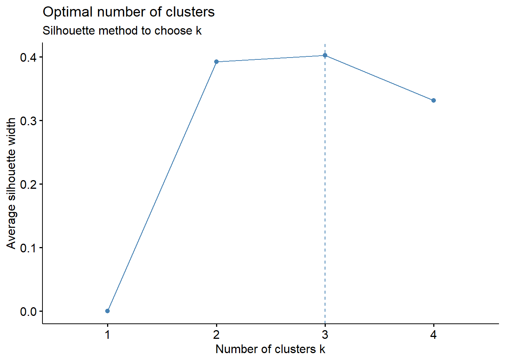
#Con método GAP Statistic
set.seed(123)
gap_stat <- clusGap(vars_for_cluster1, FUN = kmeans, nstart = 25, K.max = 4, B = 100)
fviz_gap_stat(gap_stat) +
labs(subtitle = "GAP statistic method to choose k")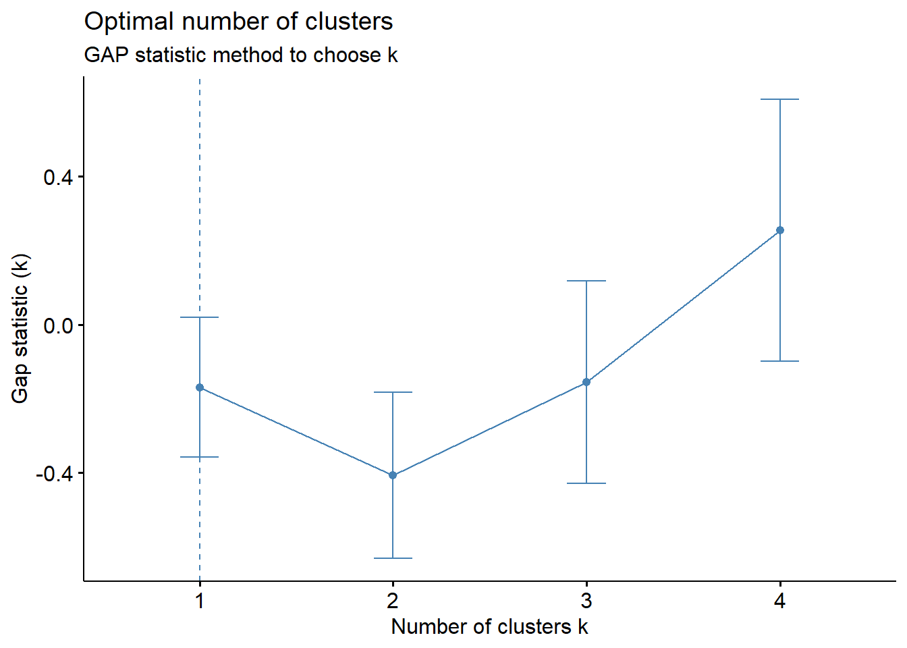
k_clust1 <- 3 #Elijo 3 por Silhouette (GAP statistic da k = 1)
km1 <- kmeans(vars_for_cluster1, centers = k_clust1, nstart = 20)
df_cluster1$Cluster <- as.factor(km1$cluster)# --- 8. Visualización (elige los ejes que prefieras) ---
ggplot(df_cluster1, aes(x = mortalidad_codo, y = delta_postcodo1, color = Cluster, label = Trtf)) +
geom_point(size = 4) +
geom_text(nudge_y = 1.4, size = 4, show.legend = FALSE) +
labs(
title = "Treatment clusters (2017)",
x = "Mortality rate at elbow (%)",
y = "Persistence (Δ post-elbow, %)"
) +
theme_minimal(base_size = 15)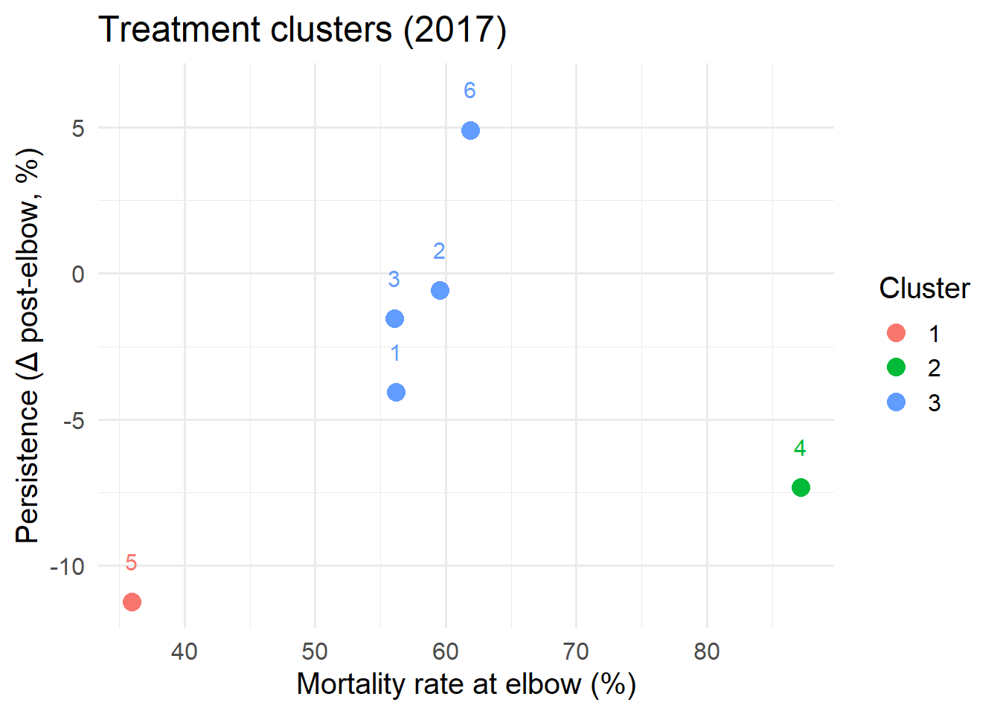
Con fviz_cluster vemos también de forma similar la proyección de los puntos clusterizados, esta vez sobre las dos primeras componentes principales (con los scores de cada punto):
# --- 2. Crea el gráfico base con fviz_cluster ---
p1 <- fviz_cluster(km1, data = vars_for_cluster1, geom = "point") +
theme(legend.position = "none") +
ylim(c(-3, 6)) # Ajusta estos límites si hace falta
# --- 3. Extrae los datos internos del scatterplot de fviz_cluster ---
plotdata1 <- p1$data # Esto contiene x, y, cluster y a veces "name" si lo detecta
# --- 4. Añade tus labels personalizados (por ejemplo, nombres de tratamientos) ---
# Aquí asumo que el orden de df_cluster2 es el mismo que el de vars_for_cluster2 y por tanto de plotdata
plotdata1$label <- df_cluster1$Trtf # O usa la variable que quieras
# --- 5. Añade la capa geom_text con los labels personalizados y color por cluster ---
p1_labeled <- p1 +
geom_text(
data = plotdata1,
aes(x = x, y = y, label = label, color = factor(cluster)), # color por cluster
size = 5,
fontface = "bold",
show.legend = FALSE,
nudge_y = 0.6
)
# --- 6. Muestra el gráfico final ---
print(p1_labeled)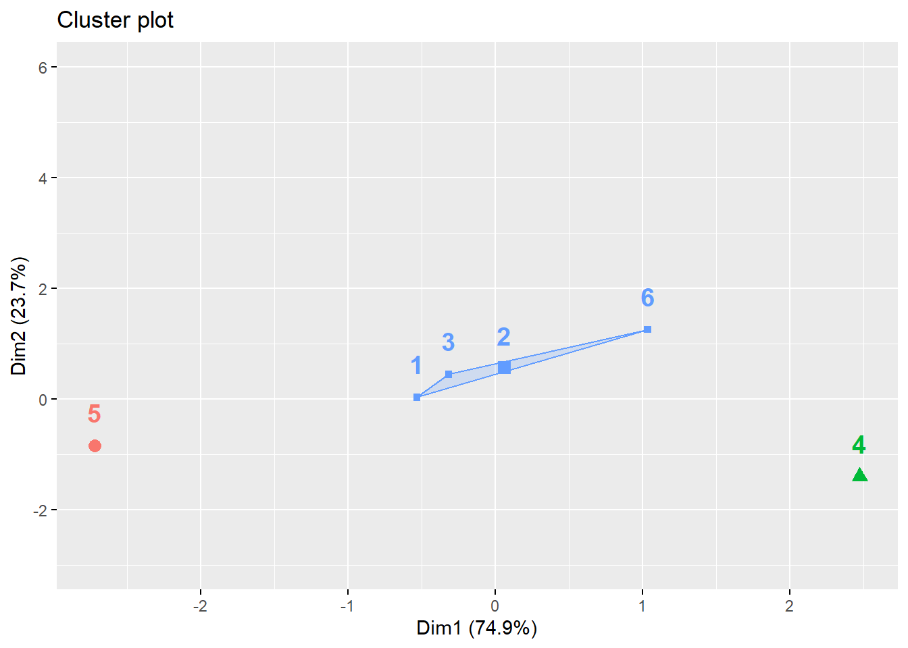
4.3 Modelos mortalidad 2017
library(dplyr)
# 1. Asegura tipos y renombra si hace falta
arbol1 <- arbol1 %>%
mutate(periodo = as.numeric(periodo))
# 2. Asigna un identificador de réplica para cada grupo (Trtf, PLOTf, periodo)
# Suponiendo exactamente 2 réplicas por combinación
arbol1 <- arbol1 %>%
group_by(Trtf, PLOTf, periodo) %>%
mutate(replica = row_number()) %>% # replica = 1, 2...
ungroup()
# 3. Ahora, crea un ID único para cada "curva" (esto será: Trtf, PLOTf, replica)
arbol1 <- arbol1 %>%
mutate(curve_id = paste(Trtf, PLOTf, replica, sep = "_")) %>%
dplyr::select(-replica)
# 4. Ahora calcula las variables target por cada curva (identificada por curve_id)
calc_auc <- function(x, y) {
idx <- order(x)
x <- x[idx]
y <- y[idx]
sum((y[-length(y)] + y[-1]) / 2 * diff(x))
}
calc_codo <- function(x, y) elbow(x, y) # tu función elbow()
df_anova1 <- arbol1 %>%
group_by(Trtf, PLOTf, curve_id) %>%
summarise(
periodo_codo = periodo[calc_codo(periodo, mortalidad)],
mortalidad_codo = mortalidad[calc_codo(periodo, mortalidad)],
mortalidad_final = mortalidad[which.max(periodo)],
AUC = calc_auc(periodo, mortalidad),
.groups = "drop"
) %>%
mutate(
delta_postcodo1 = mortalidad_final - mortalidad_codo
) %>%
mutate(
Trtf = factor(Trtf),
PLOTf = factor(PLOTf),
curve_id = factor(curve_id)
)
# Ahora df_anova1 está listo para modelos y comparaciones
head(df_anova1)# A tibble: 6 × 8
Trtf PLOTf curve_id periodo_codo mortalidad_codo mortalidad_final AUC
<fct> <fct> <fct> <dbl> <dbl> <dbl> <dbl>
1 7 103 7_103_1 2 8.70 27.0 75.1
2 7 103 7_103_2 4 28.6 24.4 105.
3 7 207 7_207_1 4 28.3 26.6 109.
4 7 207 7_207_2 4 36.4 29.3 125.
5 7 306 7_306_1 4 28.9 26.7 102.
6 7 306 7_306_2 4 29.5 26.4 101.
# ℹ 1 more variable: delta_postcodo1 <dbl>Ahora vemos los lm’s:
4.3.1 Modelo 1: modelo lmer (lineal)
library(lme4)
mod_mixto_auc1 <- lmer(AUC ~ Trtf + (1 | PLOTf), data = df_anova1)boundary (singular) fit: see help('isSingular')mod_mixto_mfinal1 <- lmer(mortalidad_final ~ Trtf + (1 | PLOTf), data = df_anova1)
mod_mixto_mcodo1 <- lmer(mortalidad_codo ~ Trtf + (1 | PLOTf), data = df_anova1)boundary (singular) fit: see help('isSingular')mod_mixto_delta1 <- lmer(delta_postcodo1 ~ Trtf + (1 | PLOTf), data = df_anova1)Hacemos el summary y el DHARMa de los cuatro modelos para hacer un diagnóstico de los mismos:
# ---- MODELO 1: AUC ----
library(lme4)
library(DHARMa)
summary(mod_mixto_auc1)Linear mixed model fit by REML. t-tests use Satterthwaite's method [
lmerModLmerTest]
Formula: AUC ~ Trtf + (1 | PLOTf)
Data: df_anova1
REML criterion at convergence: 570.1
Scaled residuals:
Min 1Q Median 3Q Max
-1.6780 -0.4945 0.0013 0.4252 4.1400
Random effects:
Groups Name Variance Std.Dev.
PLOTf (Intercept) 0 0.00
Residual 4918 70.13
Number of obs: 56, groups: PLOTf, 28
Fixed effects:
Estimate Std. Error df t value Pr(>|t|)
(Intercept) 101.86 24.79 49.00 4.108 0.000151 ***
Trtf1 80.74 35.06 49.00 2.303 0.025575 *
Trtf2 101.49 35.06 49.00 2.894 0.005656 **
Trtf3 87.30 35.06 49.00 2.490 0.016229 *
Trtf4 304.58 35.06 49.00 8.686 1.74e-11 ***
Trtf5 18.91 35.06 49.00 0.539 0.592191
Trtf6 178.19 35.06 49.00 5.082 5.84e-06 ***
---
Signif. codes: 0 '***' 0.001 '**' 0.01 '*' 0.05 '.' 0.1 ' ' 1
Correlation of Fixed Effects:
(Intr) Trtf1 Trtf2 Trtf3 Trtf4 Trtf5
Trtf1 -0.707
Trtf2 -0.707 0.500
Trtf3 -0.707 0.500 0.500
Trtf4 -0.707 0.500 0.500 0.500
Trtf5 -0.707 0.500 0.500 0.500 0.500
Trtf6 -0.707 0.500 0.500 0.500 0.500 0.500
optimizer (nloptwrap) convergence code: 0 (OK)
boundary (singular) fit: see help('isSingular')mod_mixto_auc1_res <- simulateResiduals(fittedModel = mod_mixto_auc1)
plot(mod_mixto_auc1_res)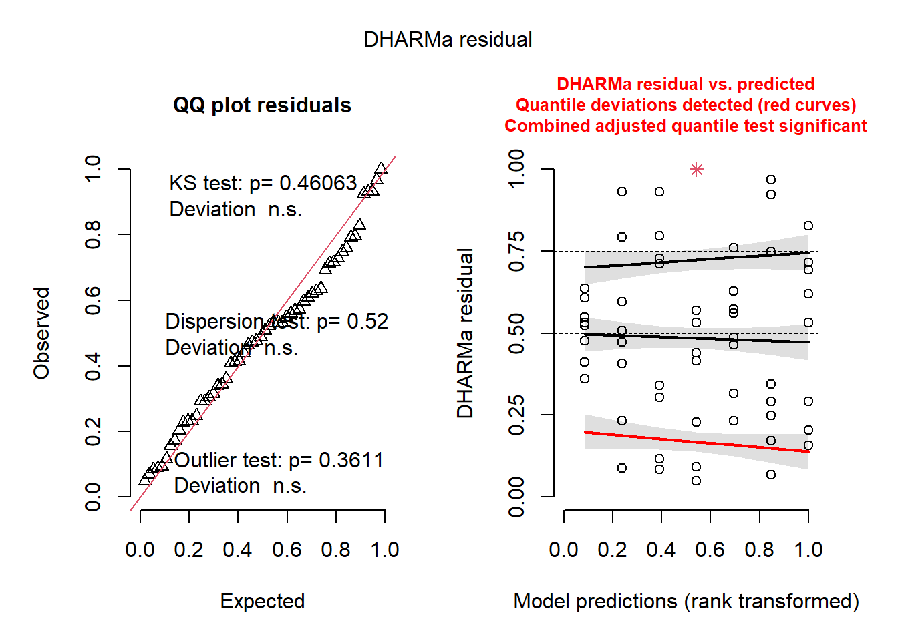
# ---- MODELO 2: mortalidad_final ----
library(lme4)
library(DHARMa)
summary(mod_mixto_mfinal1)Linear mixed model fit by REML. t-tests use Satterthwaite's method [
lmerModLmerTest]
Formula: mortalidad_final ~ Trtf + (1 | PLOTf)
Data: df_anova1
REML criterion at convergence: 425.1
Scaled residuals:
Min 1Q Median 3Q Max
-2.23856 -0.35285 -0.04743 0.37326 2.14990
Random effects:
Groups Name Variance Std.Dev.
PLOTf (Intercept) 125.3 11.19
Residual 173.7 13.18
Number of obs: 56, groups: PLOTf, 28
Fixed effects:
Estimate Std. Error df t value Pr(>|t|)
(Intercept) 26.943 7.282 21.000 3.700 0.001328 **
Trtf1 25.160 10.299 21.000 2.443 0.023485 *
Trtf2 32.020 10.299 21.000 3.109 0.005310 **
Trtf3 27.586 10.299 21.000 2.679 0.014059 *
Trtf4 52.916 10.299 21.000 5.138 4.33e-05 ***
Trtf5 -2.222 10.299 21.000 -0.216 0.831246
Trtf6 39.849 10.299 21.000 3.869 0.000887 ***
---
Signif. codes: 0 '***' 0.001 '**' 0.01 '*' 0.05 '.' 0.1 ' ' 1
Correlation of Fixed Effects:
(Intr) Trtf1 Trtf2 Trtf3 Trtf4 Trtf5
Trtf1 -0.707
Trtf2 -0.707 0.500
Trtf3 -0.707 0.500 0.500
Trtf4 -0.707 0.500 0.500 0.500
Trtf5 -0.707 0.500 0.500 0.500 0.500
Trtf6 -0.707 0.500 0.500 0.500 0.500 0.500mod_mixto_mfinal1_res <- simulateResiduals(fittedModel = mod_mixto_mfinal1)
plot(mod_mixto_mfinal1_res)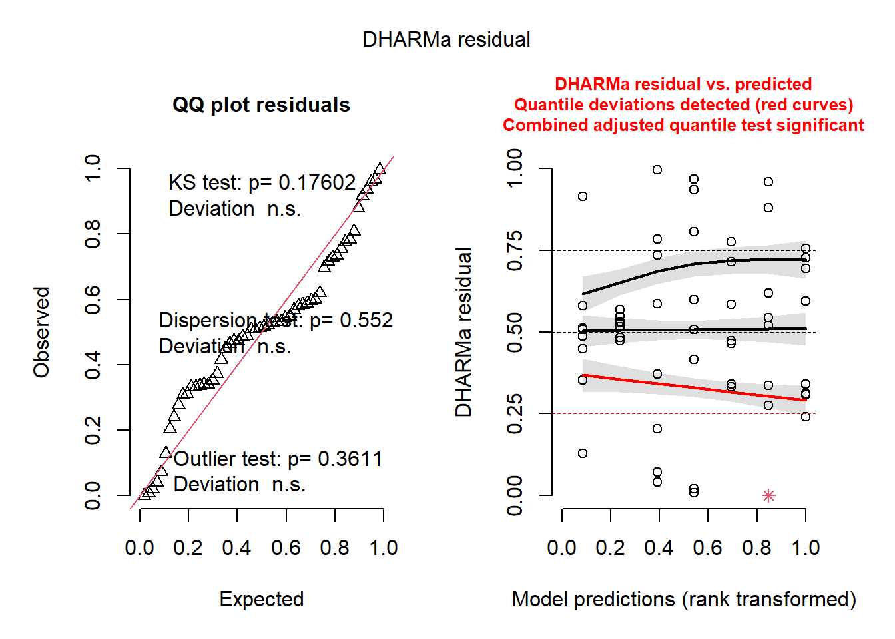
# ---- MODELO 3: mortalidad_codo ----
library(lme4)
library(DHARMa)
summary(mod_mixto_mcodo1)Linear mixed model fit by REML. t-tests use Satterthwaite's method [
lmerModLmerTest]
Formula: mortalidad_codo ~ Trtf + (1 | PLOTf)
Data: df_anova1
REML criterion at convergence: 447
Scaled residuals:
Min 1Q Median 3Q Max
-2.2682 -0.6589 0.0106 0.5531 3.2011
Random effects:
Groups Name Variance Std.Dev.
PLOTf (Intercept) 0.0 0.00
Residual 398.1 19.95
Number of obs: 56, groups: PLOTf, 28
Fixed effects:
Estimate Std. Error df t value Pr(>|t|)
(Intercept) 23.868 7.054 49.000 3.384 0.001415 **
Trtf1 21.387 9.976 49.000 2.144 0.037034 *
Trtf2 18.811 9.976 49.000 1.886 0.065279 .
Trtf3 12.264 9.976 49.000 1.229 0.224798
Trtf4 69.125 9.976 49.000 6.929 8.54e-09 ***
Trtf5 10.201 9.976 49.000 1.023 0.311536
Trtf6 40.300 9.976 49.000 4.040 0.000188 ***
---
Signif. codes: 0 '***' 0.001 '**' 0.01 '*' 0.05 '.' 0.1 ' ' 1
Correlation of Fixed Effects:
(Intr) Trtf1 Trtf2 Trtf3 Trtf4 Trtf5
Trtf1 -0.707
Trtf2 -0.707 0.500
Trtf3 -0.707 0.500 0.500
Trtf4 -0.707 0.500 0.500 0.500
Trtf5 -0.707 0.500 0.500 0.500 0.500
Trtf6 -0.707 0.500 0.500 0.500 0.500 0.500
optimizer (nloptwrap) convergence code: 0 (OK)
boundary (singular) fit: see help('isSingular')mod_mixto_mcodo1_res <- simulateResiduals(fittedModel = mod_mixto_mcodo1)
plot(mod_mixto_mcodo1_res)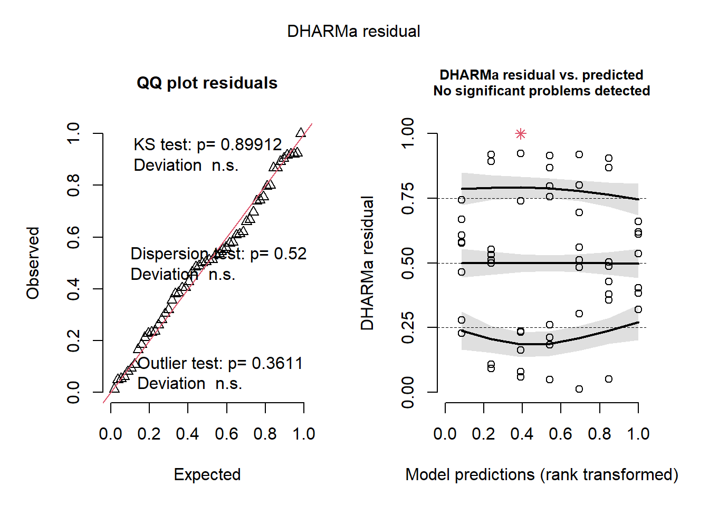
# ---- MODELO 4: delta_postcodo1 ----
library(lme4)
library(DHARMa)
summary(mod_mixto_delta1)Linear mixed model fit by REML. t-tests use Satterthwaite's method [
lmerModLmerTest]
Formula: delta_postcodo1 ~ Trtf + (1 | PLOTf)
Data: df_anova1
REML criterion at convergence: 461.4
Scaled residuals:
Min 1Q Median 3Q Max
-1.8208 -0.6646 -0.1055 0.5684 2.2747
Random effects:
Groups Name Variance Std.Dev.
PLOTf (Intercept) 30.92 5.56
Residual 509.04 22.56
Number of obs: 56, groups: PLOTf, 28
Fixed effects:
Estimate Std. Error df t value Pr(>|t|)
(Intercept) 3.0754 8.4474 21.0000 0.364 0.719
Trtf1 3.7738 11.9465 21.0000 0.316 0.755
Trtf2 13.2090 11.9465 21.0000 1.106 0.281
Trtf3 15.3224 11.9465 21.0000 1.283 0.214
Trtf4 -16.2084 11.9465 21.0000 -1.357 0.189
Trtf5 -12.4231 11.9465 21.0000 -1.040 0.310
Trtf6 -0.4504 11.9465 21.0000 -0.038 0.970
Correlation of Fixed Effects:
(Intr) Trtf1 Trtf2 Trtf3 Trtf4 Trtf5
Trtf1 -0.707
Trtf2 -0.707 0.500
Trtf3 -0.707 0.500 0.500
Trtf4 -0.707 0.500 0.500 0.500
Trtf5 -0.707 0.500 0.500 0.500 0.500
Trtf6 -0.707 0.500 0.500 0.500 0.500 0.500mod_mixto_delta1_res <- simulateResiduals(fittedModel = mod_mixto_delta1)
plot(mod_mixto_delta1_res)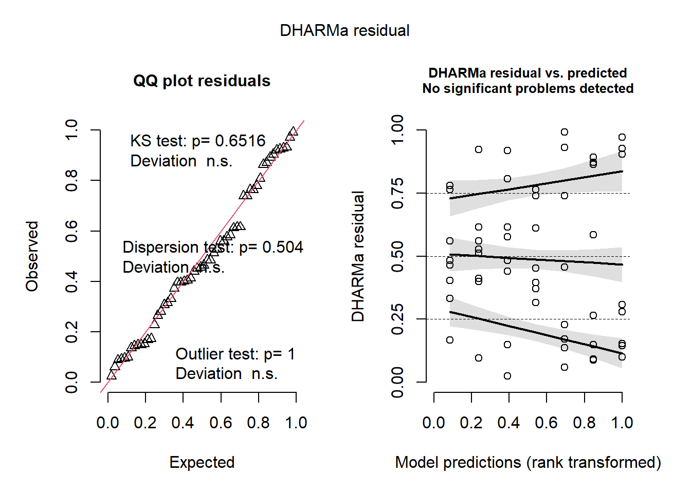
Hacemos emmeans y cld:
library(emmeans)
# emmeans(mod_mixto_auc2, pairwise ~ Trtf, test = "fdr")
# emmeans(mod_mixto_mfinal2, pairwise ~ Trtf, test = "fdr")
# emmeans(mod_mixto_mcodo2, pairwise ~ Trtf, test = "fdr")
# emmeans(mod_mixto_delta2, pairwise ~ Trtf, test = "fdr")# ---- CLD para AUC ----
library(emmeans)
library(multcomp)
emm_auc1 <- emmeans(mod_mixto_auc1, ~ Trtf)
cld_auc1 <- cld(emm_auc1, Letters = letters, adjust = "fdr")
print(cld_auc1) Trtf emmean SE df lower.CL upper.CL .group
7 102 24.8 21 28.0 176 a
5 121 24.8 21 46.9 195 ab
1 183 24.8 21 108.7 256 bc
3 189 24.8 21 115.3 263 bc
2 203 24.8 21 129.5 277 cd
6 280 24.8 21 206.2 354 d
4 406 24.8 21 332.6 480 e
Degrees-of-freedom method: kenward-roger
Confidence level used: 0.95
Conf-level adjustment: bonferroni method for 7 estimates
P value adjustment: fdr method for 21 tests
significance level used: alpha = 0.05
NOTE: If two or more means share the same grouping symbol,
then we cannot show them to be different.
But we also did not show them to be the same. # ---- CLD para mortalidad_final ----
library(emmeans)
library(multcomp)
emm_mfinal1 <- emmeans(mod_mixto_mfinal1, ~ Trtf)
cld_mfinal1 <- cld(emm_mfinal1, Letters = letters, adjust = "fdr")
print(cld_mfinal1) Trtf emmean SE df lower.CL upper.CL .group
5 24.7 7.28 21 3.02 46.4 a
7 26.9 7.28 21 5.24 48.6 a
1 52.1 7.28 21 30.40 73.8 b
3 54.5 7.28 21 32.83 76.2 b
2 59.0 7.28 21 37.26 80.7 bc
6 66.8 7.28 21 45.09 88.5 bc
4 79.9 7.28 21 58.16 101.6 c
Degrees-of-freedom method: kenward-roger
Confidence level used: 0.95
Conf-level adjustment: bonferroni method for 7 estimates
P value adjustment: fdr method for 21 tests
significance level used: alpha = 0.05
NOTE: If two or more means share the same grouping symbol,
then we cannot show them to be different.
But we also did not show them to be the same. # ---- CLD para mortalidad_codo ----
library(emmeans)
library(multcomp)
emm_mcodo1 <- emmeans(mod_mixto_mcodo1, ~ Trtf)
cld_mcodo1 <- cld(emm_mcodo1, Letters = letters, adjust = "fdr")
print(cld_mcodo1) Trtf emmean SE df lower.CL upper.CL .group
7 23.9 7.05 21 2.85 44.9 a
5 34.1 7.05 21 13.05 55.1 a
3 36.1 7.05 21 15.11 57.2 a
2 42.7 7.05 21 21.66 63.7 ab
1 45.3 7.05 21 24.23 66.3 ab
6 64.2 7.05 21 43.15 85.2 b
4 93.0 7.05 21 71.97 114.0 c
Degrees-of-freedom method: kenward-roger
Confidence level used: 0.95
Conf-level adjustment: bonferroni method for 7 estimates
P value adjustment: fdr method for 21 tests
significance level used: alpha = 0.05
NOTE: If two or more means share the same grouping symbol,
then we cannot show them to be different.
But we also did not show them to be the same. # ---- CLD para delta_postcodo1 ----
library(emmeans)
library(multcomp)
emm_delta1 <- emmeans(mod_mixto_delta1, ~ Trtf)
cld_delta1 <- cld(emm_delta1, Letters = letters, adjust = "fdr")
print(cld_delta1) Trtf emmean SE df lower.CL upper.CL .group
4 -13.13 8.45 21 -38.31 12.0 a
5 -9.35 8.45 21 -34.52 15.8 a
6 2.63 8.45 21 -22.55 27.8 a
7 3.08 8.45 21 -22.10 28.2 a
1 6.85 8.45 21 -18.32 32.0 a
2 16.28 8.45 21 -8.89 41.5 a
3 18.40 8.45 21 -6.77 43.6 a
Degrees-of-freedom method: kenward-roger
Confidence level used: 0.95
Conf-level adjustment: bonferroni method for 7 estimates
P value adjustment: fdr method for 21 tests
significance level used: alpha = 0.05
NOTE: If two or more means share the same grouping symbol,
then we cannot show them to be different.
But we also did not show them to be the same. 4.4 Conclusiones para 2017
Trtf4 (CONFIDOR 200 OD, 750 ml pr/ha, FOLIAR APPLICATION) es claramente el tratamiento más eficaz en 2017 para todas las variables principales, tanto por el análisis CLD como por el cluster.
Trtf5 (CONFIDOR 200 OD, 750 ml pr/ha, TRUNK INJECTION) es el menos eficaz y forma un grupo aparte en el análisis de clusters y CLD. Concluimos que, de aplicarse por inyección y no de manera foliar el CONFIDOR 200 OD (imidacloprid), no solo es mucho menos eficaz sino que es incluso potencialmente negativo con respecto al control.
El resto de tratamientos aplicados en 2017 (Trtf1, 2, 3, 6, 7) no presentan diferencias significativas entre sí en la mayoría de las variables y aparecen juntos en el cluster.
La persistencia (delta post-codo) no diferencia a ningún tratamiento en 2017.
CLUSTERS: Alta eficacia, eficacia intermedia y baja eficacia. No se observan diferencias en cuanto a su persistencia.
4.5 Visualización de datos de 2018
Vemos como en 2017 qué tratamiento es más persistente en el tiempo. Para ello vemos primero los codos estadísticos de cada una de las curvas para cada tratamiento y rama de árbol. Así:
library(dplyr)
curvas_trt2 <- arbol2 %>%
group_by(Trtf, periodo) %>%
summarise(mortalidad = mean(mortalidad, na.rm = TRUE), .groups = "drop")Agrupamos en una tabla los tratamientos con el periodo en el que se encuentra el codo de sus gráficas de mortalidad junto a la mortalidad en dicho codo:
library(dplyr)
library(knitr)
library(kableExtra)
library(webshot2) # solo si quieres exportar a PNG
# Calcula codos para 2018
codos_trt2 <- curvas_trt2 %>%
group_by(Trtf) %>%
summarise(
periodo_codo = periodo[elbow(periodo, mortalidad)],
mortalidad_codo = mortalidad[elbow(periodo, mortalidad)],
.groups = "drop"
)
# Labels en inglés para 2018
treatment_labels_en_2018 <- c(
"CONFIDOR 200 OD (750 ml/ha, Foliar)", # 1
"GF-2626 (400 ml/ha, Foliar)", # 2
"EPIK (1500 g/ha, Foliar)", # 3
"GF-2626 (400 ml/ha, Injection)", # 4
"EPIK (1500 g/ha, Injection)", # 5
"UNTREATED" # 6
)
# Asigna manualmente los labels usando el valor numérico de Trtf
codos_trt2$Treatment <- treatment_labels_en_2018[as.numeric(as.character(codos_trt2$Trtf))]
# Reordena las columnas
codos_trt2_out <- codos_trt2[, c("Treatment", "periodo_codo", "mortalidad_codo")]
colnames(codos_trt2_out) <- c("Treatment", "Elbow period", "Elbow mortality rate (%)")
# Muestra y/o guarda la tabla
tabla_kable2 <- kable(
codos_trt2_out, align = "c",
caption = "Period and mortality rate at the elbow for each treatment"
) %>%
kable_styling(full_width = FALSE, bootstrap_options = c("striped", "hover", "condensed"))
# Para guardar como PNG (opcional)
#save_kable(tabla_kable2, file = "elbow_table_2018.png", zoom = 2)
tabla_kable2| Treatment | Elbow period | Elbow mortality rate (%) |
|---|---|---|
| UNTREATED | 5 | 18.16385 |
| CONFIDOR 200 OD (750 ml/ha, Foliar) | 2 | 75.57824 |
| GF-2626 (400 ml/ha, Foliar) | 3 | 36.59190 |
| GF-2626 (400 ml/ha, Injection) | 3 | 32.58733 |
| EPIK (1500 g/ha, Foliar) | 3 | 85.86012 |
| EPIK (1500 g/ha, Injection) | 3 | 80.69344 |
Visualizamos ahora con ggplot2 las curvas con el promedio de mortalidad por tratamiento según el periodo, viendo los resultados de la tabla anterior gráficamente:
library(ggplot2)
library(dplyr)
curvas_trt2 <- curvas_trt2 %>%
mutate(
Trtf_code = recode(
as.character(Trtf),
"1" = "CONFIDOR_FOLIAR_750",
"2" = "GF2626_FOLIAR_400",
"3" = "EPIK_FOLIAR_1500",
"4" = "GF2626_INJECT_400",
"5" = "EPIK_INJECT_1500",
"6" = "UNTREATED"
)
)
codos_trt2 <- codos_trt2 %>%
mutate(
Trtf_code = recode(
as.character(Trtf),
"1" = "CONFIDOR_FOLIAR_750",
"2" = "GF2626_FOLIAR_400",
"3" = "EPIK_FOLIAR_1500",
"4" = "GF2626_INJECT_400",
"5" = "EPIK_INJECT_1500",
"6" = "UNTREATED"
)
)
colores_2018 <- with(
subset(treatment_palette_extended, !is.na(num_2018) & code %in% unique(curvas_trt2$Trtf_code)),
setNames(color, code)
)
ggplot(curvas_trt2, aes(x = periodo, y = mortalidad, color = Trtf_code, group = Trtf_code)) +
geom_line() +
geom_point() +
geom_vline(data = codos_trt2, aes(xintercept = periodo_codo, color = Trtf_code), linetype = "dashed") +
scale_color_manual(
values = colores_2018,
labels = setNames(
treatment_palette_extended$label,
treatment_palette_extended$code
)) +
theme_minimal() +
theme(
legend.position = "bottom",
legend.text = element_text(size = 8)
) +
labs(
x = "Period (within 2018)",
y = "Average mortality rate (%)",
color = NULL # <<--- Esto quita el título de la leyenda de color
)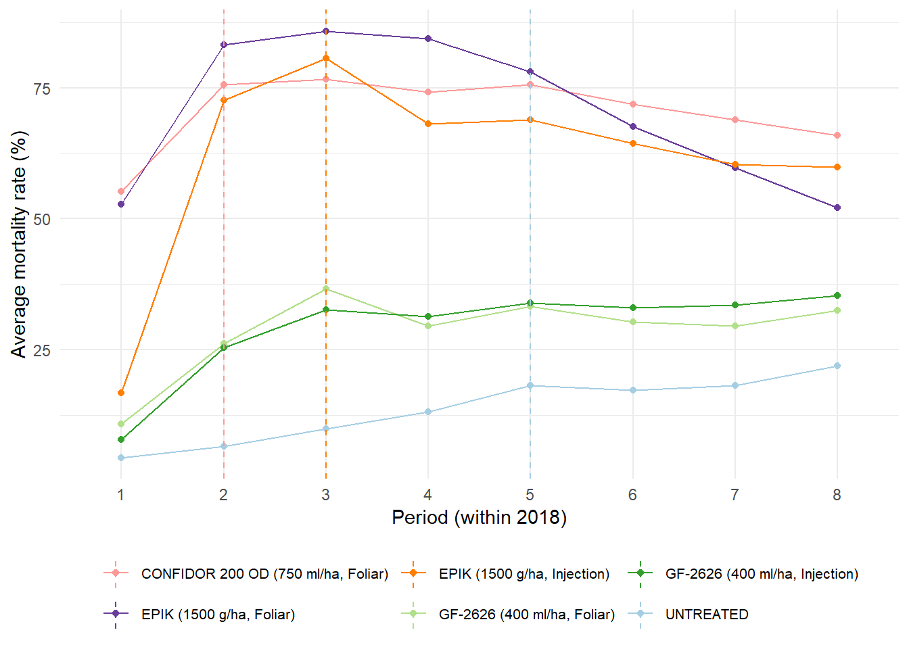
O bien hacemos cada curva por separado para visualizar los codos mejor, ya que éstos se solapan para varios tratamientos:
ggplot(curvas_trt2, aes(x = periodo, y = mortalidad)) +
geom_line(aes(group = 1), color = "gray20", size = 1) +
geom_point(aes(group = 1), color = "gray20", size = 2) +
geom_vline(
data = codos_trt2,
aes(xintercept = as.numeric(periodo_codo), color = Trtf_code),
linetype = "dashed", size = 1
) +
scale_color_manual(values = colores_2018) +
facet_wrap(~Trtf, scales = "free_y") +
theme_minimal(base_size = 15) +
labs(
x = "Period (within 2018)",
y = "Average mortality rate (%)"
) +
theme(
legend.position = "none",
strip.text = element_text(face = "bold", size = 15)
)
Analizamos el AUC de cada curva, es decir, el área bajo cada curva de mortalidad:
# curvas_trt ya debe tener columnas: Trtf, periodo, mortalidad
# Asegura que periodo es numérico
curvas_trt2 <- curvas_trt2 %>%
mutate(periodo = as.numeric(periodo))
# Función para calcular AUC usando la regla del trapecio
calc_auc <- function(x, y) {
idx <- order(x)
x <- x[idx]
y <- y[idx]
sum((y[-length(y)] + y[-1]) / 2 * diff(x))
}
# Calcular el AUC para cada tratamiento
auc_trt2 <- curvas_trt2 %>%
group_by(Trtf) %>%
summarise(
AUC = calc_auc(periodo, mortalidad),
.groups = "drop"
) %>%
arrange(desc(AUC))
print(auc_trt2)# A tibble: 6 × 2
Trtf AUC
<fct> <dbl>
1 3 511.
2 1 503.
3 5 453.
4 4 211.
5 2 207.
6 6 96.0Vemos con un algoritmo no supervisado (no conocemos qué umbral determina o no persistente o eficaz para nosotros) de clustering los diferentes grupos en función de la persistencia y eficacia para el 2018:
library(dplyr)
library(ggplot2)
library(factoextra)
library(cluster)
# --- 1. Asegura que periodo es numérico ---
curvas_trt2 <- curvas_trt2 %>% mutate(periodo = as.numeric(periodo))
# --- 2. Mortalidad final (último periodo, por tratamiento) ---
mortalidad_final <- curvas_trt2 %>%
group_by(Trtf) %>%
slice_max(periodo, n = 1, with_ties = FALSE) %>%
ungroup() %>%
dplyr::select(Trtf, mortalidad) %>%
rename(mortalidad_final = mortalidad)
# --- 3. Mortalidad en el codo, quitando el control (6) ---
mortalidad_codo <- codos_trt2 %>%
filter(Trtf != 6) %>%
dplyr::select(Trtf, mortalidad_codo)
# --- 4. AUC (área bajo la curva, ya calculado antes o lo calculas aquí) ---
auc_trt2 <- curvas_trt2 %>%
filter(Trtf != 6) %>%
group_by(Trtf) %>%
summarise(AUC = calc_auc(periodo, mortalidad), .groups = "drop")# --- 5. Juntar todo en un solo data.frame ---
df_cluster2 <- mortalidad_codo %>%
left_join(mortalidad_final, by = "Trtf") %>%
left_join(auc_trt2, by = "Trtf") %>%
mutate(
delta_postcodo2 = mortalidad_final - mortalidad_codo # persistencia: lo que sube o baja la mortalidad tras el codo
)
# --- 6. Escalar las 4 variables para clustering ---
vars_for_cluster2 <- scale(df_cluster2[,2:5])
set.seed(123)
#------ 7.5. Vemos el número de clusters óptimo para hacer kmeans ------------
nrow(vars_for_cluster2)[1] 5#Con método Silhouette
fviz_nbclust(vars_for_cluster2, kmeans, method = "silhouette", k.max = 4) +
labs(subtitle = "El método del silhouette para elegir k")
#Con método GAP Statistic
set.seed(123)
gap_stat <- clusGap(vars_for_cluster2, FUN = kmeans, nstart = 25, K.max = 4, B = 100)
fviz_gap_stat(gap_stat) +
labs(subtitle = "Método del GAP statistic para elegir k")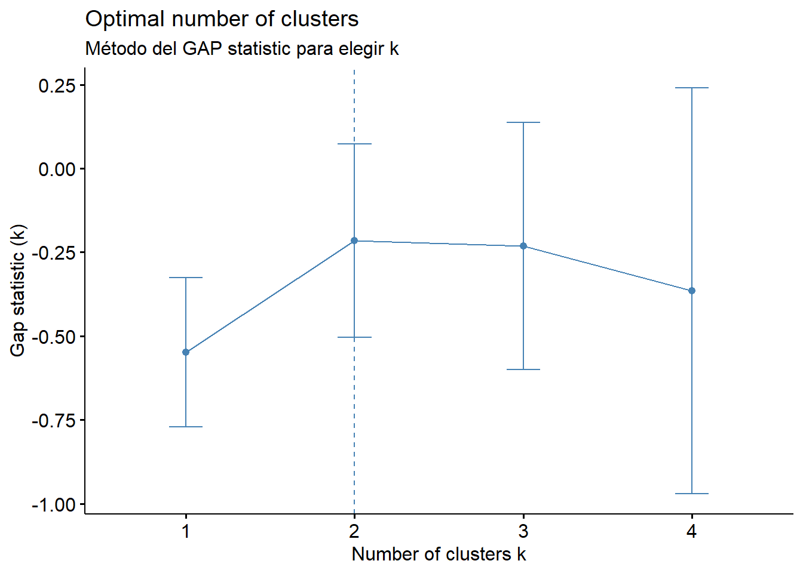
k_clust <- 2 #Elijo 2 por GAP y silhouette
km2 <- kmeans(vars_for_cluster2, centers = k_clust, nstart = 20)
df_cluster2$Cluster <- as.factor(km2$cluster)Vemos la proyección de los puntos clusterizados en mortalidad_codo y delta_postcodo2.
# --- 8. Visualización (elige los ejes que prefieras) ---
ggplot(df_cluster2, aes(x = mortalidad_codo, y = delta_postcodo2, color = Cluster, label = Trtf)) +
geom_point(size = 4) +
geom_text(nudge_y = 3, size = 5, show.legend = FALSE) +
labs(
title = "Treatment clusters (2018)",
x = "Mortalty rate at elbow (%)",
y = "Persistence (Δ post-elbow, %)"
) +
theme_minimal(base_size = 15)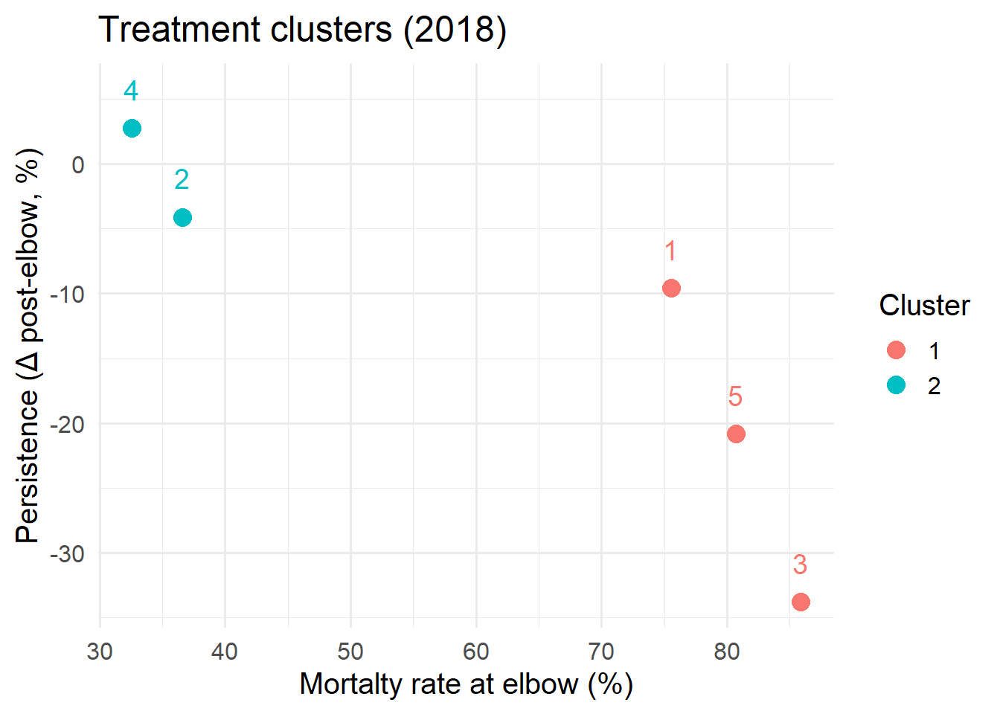
Con fviz_cluster vemos también de forma similar la proyección de los puntos clusterizados, esta vez sobre las dos primeras componentes principales (con los scores de cada punto):
# --- 2. Crea el gráfico base con fviz_cluster ---
p2 <- fviz_cluster(km2, data = vars_for_cluster2, geom = "point") +
theme(legend.position = "none") +
ylim(c(-3, 6)) # Ajusta estos límites si hace falta
# --- 3. Extrae los datos internos del scatterplot de fviz_cluster ---
plotdata2 <- p2$data # Esto contiene x, y, cluster y a veces "name" si lo detecta
# --- 4. Añade tus labels personalizados (por ejemplo, nombres de tratamientos) ---
# Aquí asumo que el orden de df_cluster2 es el mismo que el de vars_for_cluster2 y por tanto de plotdata
plotdata2$label <- df_cluster2$Trtf # O usa la variable que quieras
# --- 5. Añade la capa geom_text con los labels personalizados y color por cluster ---
p2_labeled <- p2 +
geom_text(
data = plotdata2,
aes(x = x, y = y, label = label, color = factor(cluster)), # color por cluster
size = 5,
fontface = "bold",
show.legend = FALSE,
nudge_y = 0.6
)
# --- 6. Muestra el gráfico final ---
print(p2_labeled)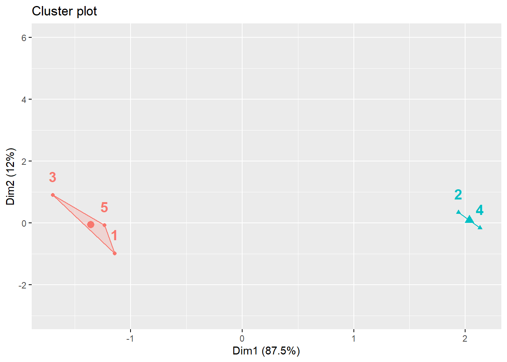
Hacemos ahora ANOVAs/GLMs usando nuestras variables de interés para ver diferencias de medias entre parcelas (AUC, mortalidad en el codo, mortalidad final, persistencia/descenso post-codo), con la unidad experimental “parcela
4.6 Modelos mortalidad 2018
# Asegura que periodo es numérico
arbol2 <- arbol2 %>%
mutate(periodo = as.numeric(periodo),
Rete = as.character(Rete))
# --- 1. Función para el AUC ---
calc_auc <- function(x, y) {
idx <- order(x)
x <- x[idx]
y <- y[idx]
sum((y[-length(y)] + y[-1]) / 2 * diff(x))
}
# --- 2. Calcula codo por cada (Trtf, Plotf) ---
calc_codo <- function(x, y) {
# Devuelve el índice del codo según tu criterio
# Ejemplo: usa tu función elbow()
elbow(x, y)
}
# --- 3. Cálculo por parcela y tratamiento ---
df_anova2 <- arbol2 %>%
group_by(Trtf, Plotf, Rete) %>%
summarise(
periodo_codo = periodo[calc_codo(periodo, mortalidad)],
mortalidad_codo = mortalidad[calc_codo(periodo, mortalidad)],
mortalidad_final = mortalidad[which.max(periodo)], # último periodo de cada parcela
AUC = calc_auc(periodo, mortalidad),
.groups = "drop"
) %>%
mutate(
delta_postcodo2 = mortalidad_final - mortalidad_codo # persistencia
)
# Opcional: quita controles si quieres analizar solo tratamientos activos
# df_anova2 <- df_anova2 %>% filter(Trtf != 6)
df_anova2 <- df_anova2 %>%
mutate(
Trtf = factor(Trtf),
Plotf = factor(Plotf),
Rete = factor(Rete)
)4.6.1 Modelo 1: Modelos lineales mixtos (lmer)
mod_mixto_auc2 <- lmer(AUC ~ Trtf + (1 | Plotf), data = df_anova2)
mod_mixto_mfinal2 <- lmer(mortalidad_final ~ Trtf + (1 | Plotf), data = df_anova2)
mod_mixto_mcodo2 <- lmer(mortalidad_codo ~ Trtf + (1 | Plotf), data = df_anova2)
mod_mixto_delta2 <- lmer(delta_postcodo2 ~ Trtf + (1 | Plotf), data = df_anova2)library(DHARMa)
summary(mod_mixto_auc2)Linear mixed model fit by REML. t-tests use Satterthwaite's method [
lmerModLmerTest]
Formula: AUC ~ Trtf + (1 | Plotf)
Data: df_anova2
REML criterion at convergence: 1130.5
Scaled residuals:
Min 1Q Median 3Q Max
-2.5630 -0.5342 0.0333 0.4759 2.0855
Random effects:
Groups Name Variance Std.Dev.
Plotf (Intercept) 5544 74.46
Residual 11156 105.62
Number of obs: 96, groups: Plotf, 24
Fixed effects:
Estimate Std. Error df t value Pr(>|t|)
(Intercept) 95.97 45.64 18.00 2.103 0.0498 *
Trtf1 407.35 64.55 18.00 6.311 6.00e-06 ***
Trtf2 110.89 64.55 18.00 1.718 0.1030
Trtf4 115.34 64.55 18.00 1.787 0.0908 .
Trtf3 415.30 64.55 18.00 6.434 4.69e-06 ***
Trtf5 357.30 64.55 18.00 5.535 2.96e-05 ***
---
Signif. codes: 0 '***' 0.001 '**' 0.01 '*' 0.05 '.' 0.1 ' ' 1
Correlation of Fixed Effects:
(Intr) Trtf1 Trtf2 Trtf4 Trtf3
Trtf1 -0.707
Trtf2 -0.707 0.500
Trtf4 -0.707 0.500 0.500
Trtf3 -0.707 0.500 0.500 0.500
Trtf5 -0.707 0.500 0.500 0.500 0.500mod_mixto_auc_res2 <- simulateResiduals(fittedModel = mod_mixto_auc2)
plot(mod_mixto_auc_res2)
summary(mod_mixto_mfinal2)Linear mixed model fit by REML. t-tests use Satterthwaite's method [
lmerModLmerTest]
Formula: mortalidad_final ~ Trtf + (1 | Plotf)
Data: df_anova2
REML criterion at convergence: 795
Scaled residuals:
Min 1Q Median 3Q Max
-2.3450 -0.6550 -0.1125 0.5659 2.6355
Random effects:
Groups Name Variance Std.Dev.
Plotf (Intercept) 93.57 9.673
Residual 281.99 16.793
Number of obs: 96, groups: Plotf, 24
Fixed effects:
Estimate Std. Error df t value Pr(>|t|)
(Intercept) 21.886 6.404 18.000 3.417 0.003071 **
Trtf1 44.098 9.057 18.000 4.869 0.000123 ***
Trtf2 10.600 9.057 18.000 1.170 0.257118
Trtf4 13.460 9.057 18.000 1.486 0.154549
Trtf3 30.169 9.057 18.000 3.331 0.003718 **
Trtf5 37.997 9.057 18.000 4.195 0.000544 ***
---
Signif. codes: 0 '***' 0.001 '**' 0.01 '*' 0.05 '.' 0.1 ' ' 1
Correlation of Fixed Effects:
(Intr) Trtf1 Trtf2 Trtf4 Trtf3
Trtf1 -0.707
Trtf2 -0.707 0.500
Trtf4 -0.707 0.500 0.500
Trtf3 -0.707 0.500 0.500 0.500
Trtf5 -0.707 0.500 0.500 0.500 0.500mod_mixto_mfinal_res2 <- simulateResiduals(fittedModel = mod_mixto_mfinal2)
plot(mod_mixto_mfinal_res2)
summary(mod_mixto_mcodo2)Linear mixed model fit by REML. t-tests use Satterthwaite's method [
lmerModLmerTest]
Formula: mortalidad_codo ~ Trtf + (1 | Plotf)
Data: df_anova2
REML criterion at convergence: 798.9
Scaled residuals:
Min 1Q Median 3Q Max
-2.07488 -0.49317 0.05959 0.45855 2.53580
Random effects:
Groups Name Variance Std.Dev.
Plotf (Intercept) 112.6 10.61
Residual 288.7 16.99
Number of obs: 96, groups: Plotf, 24
Fixed effects:
Estimate Std. Error df t value Pr(>|t|)
(Intercept) 15.587 6.797 18.000 2.293 0.0341 *
Trtf1 64.109 9.612 18.000 6.670 2.94e-06 ***
Trtf2 22.669 9.612 18.000 2.358 0.0299 *
Trtf4 21.224 9.612 18.000 2.208 0.0404 *
Trtf3 75.587 9.612 18.000 7.864 3.13e-07 ***
Trtf5 65.153 9.612 18.000 6.778 2.38e-06 ***
---
Signif. codes: 0 '***' 0.001 '**' 0.01 '*' 0.05 '.' 0.1 ' ' 1
Correlation of Fixed Effects:
(Intr) Trtf1 Trtf2 Trtf4 Trtf3
Trtf1 -0.707
Trtf2 -0.707 0.500
Trtf4 -0.707 0.500 0.500
Trtf3 -0.707 0.500 0.500 0.500
Trtf5 -0.707 0.500 0.500 0.500 0.500mod_mixto_mcodo_res2 <- simulateResiduals(fittedModel = mod_mixto_mcodo2)
plot(mod_mixto_mcodo_res2)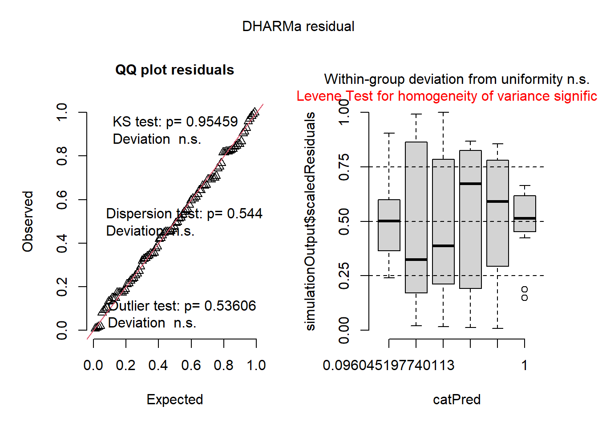
summary(mod_mixto_delta2)Linear mixed model fit by REML. t-tests use Satterthwaite's method [
lmerModLmerTest]
Formula: delta_postcodo2 ~ Trtf + (1 | Plotf)
Data: df_anova2
REML criterion at convergence: 770.3
Scaled residuals:
Min 1Q Median 3Q Max
-2.49959 -0.55245 0.01348 0.69863 2.56415
Random effects:
Groups Name Variance Std.Dev.
Plotf (Intercept) 47.58 6.898
Residual 224.50 14.983
Number of obs: 96, groups: Plotf, 24
Fixed effects:
Estimate Std. Error df t value Pr(>|t|)
(Intercept) 6.299 5.092 18.000 1.237 0.2319
Trtf1 -20.011 7.201 18.000 -2.779 0.0124 *
Trtf2 -12.068 7.201 18.000 -1.676 0.1110
Trtf4 -7.764 7.201 18.000 -1.078 0.2952
Trtf3 -45.418 7.201 18.000 -6.307 6.04e-06 ***
Trtf5 -27.156 7.201 18.000 -3.771 0.0014 **
---
Signif. codes: 0 '***' 0.001 '**' 0.01 '*' 0.05 '.' 0.1 ' ' 1
Correlation of Fixed Effects:
(Intr) Trtf1 Trtf2 Trtf4 Trtf3
Trtf1 -0.707
Trtf2 -0.707 0.500
Trtf4 -0.707 0.500 0.500
Trtf3 -0.707 0.500 0.500 0.500
Trtf5 -0.707 0.500 0.500 0.500 0.500mod_mixto_delta_res2 <- simulateResiduals(fittedModel = mod_mixto_delta2)
plot(mod_mixto_delta_res2)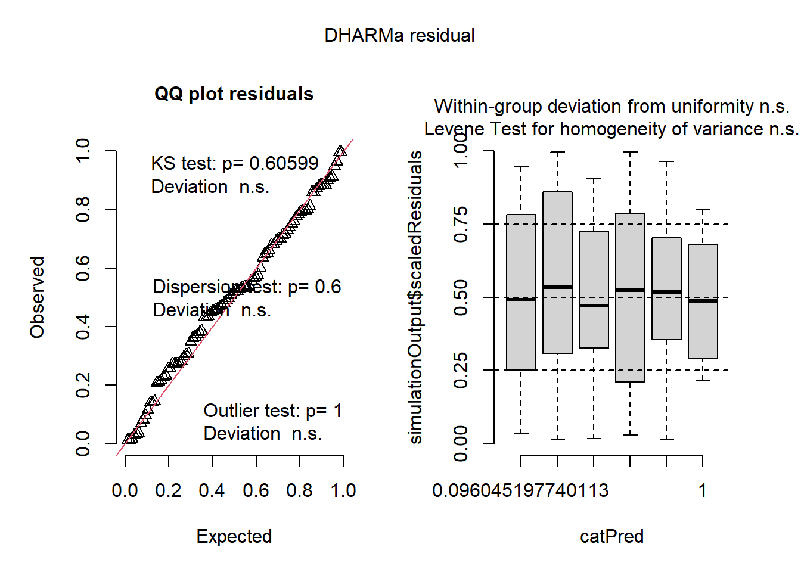
Anova(mod_mixto_auc2, type = "III")Analysis of Deviance Table (Type III Wald chisquare tests)
Response: AUC
Chisq Df Pr(>Chisq)
(Intercept) 4.421 1 0.0355 *
Trtf 77.814 5 2.404e-15 ***
---
Signif. codes: 0 '***' 0.001 '**' 0.01 '*' 0.05 '.' 0.1 ' ' 1Anova(mod_mixto_mfinal2, type = "III")Analysis of Deviance Table (Type III Wald chisquare tests)
Response: mortalidad_final
Chisq Df Pr(>Chisq)
(Intercept) 11.678 1 0.0006324 ***
Trtf 36.443 5 7.744e-07 ***
---
Signif. codes: 0 '***' 0.001 '**' 0.01 '*' 0.05 '.' 0.1 ' ' 1Anova(mod_mixto_mcodo2, type = "III")Analysis of Deviance Table (Type III Wald chisquare tests)
Response: mortalidad_codo
Chisq Df Pr(>Chisq)
(Intercept) 5.2592 1 0.02183 *
Trtf 102.1907 5 < 2e-16 ***
---
Signif. codes: 0 '***' 0.001 '**' 0.01 '*' 0.05 '.' 0.1 ' ' 1Anova(mod_mixto_delta2, type = "III")Analysis of Deviance Table (Type III Wald chisquare tests)
Response: delta_postcodo2
Chisq Df Pr(>Chisq)
(Intercept) 1.5306 1 0.216
Trtf 50.1534 5 1.289e-09 ***
---
Signif. codes: 0 '***' 0.001 '**' 0.01 '*' 0.05 '.' 0.1 ' ' 1El modelo para mortalidad_codo acepta todo salvo la homocedasticidad entre grupos que rechaza por poco (sí la acepta dentro de ellos al menos). Por tanto, nos quedaremos con los cuatro modelos igualmente. Hallamos si las diferencias de medias marginales a pares son significativas ahora como lo hemos venido haciendo hasta ahora, con el paquete emmeans y la función cld. Podemos ver las diferencias par a par, pero lo dejo comentado puesto que lo que nos interesa es ver simplemente si hay diferencias entre ellas agrupándolo en formato cld (en “letras”):
library(emmeans)
# emmeans(mod_mixto_auc2, pairwise ~ Trtf, test = "fdr")
# emmeans(mod_mixto_mfinal2, pairwise ~ Trtf, test = "fdr")
# emmeans(mod_mixto_mcodo2, pairwise ~ Trtf, test = "fdr")
# emmeans(mod_mixto_delta2, pairwise ~ Trtf, test = "fdr")Hacemos el cld:
library(emmeans)
library(multcomp)
# ---- AUC ----
emm_auc2 <- emmeans(mod_mixto_auc2, ~ Trtf)
cld_auc2 <- cld(emm_auc2, Letters = letters, adjust = "fdr")
print(cld_auc2) Trtf emmean SE df lower.CL upper.CL .group
6 96 45.6 18 -39.3 231 a
2 207 45.6 18 71.6 342 a
4 211 45.6 18 76.1 347 a
5 453 45.6 18 318.0 589 b
1 503 45.6 18 368.1 639 b
3 511 45.6 18 376.0 647 b
Degrees-of-freedom method: kenward-roger
Confidence level used: 0.95
Conf-level adjustment: bonferroni method for 6 estimates
P value adjustment: fdr method for 15 tests
significance level used: alpha = 0.05
NOTE: If two or more means share the same grouping symbol,
then we cannot show them to be different.
But we also did not show them to be the same. # ---- Mortalidad final ----
emm_mfinal2 <- emmeans(mod_mixto_mfinal2, ~ Trtf)
cld_mfinal2 <- cld(emm_mfinal2, Letters = letters, adjust = "fdr")
print(cld_mfinal2) Trtf emmean SE df lower.CL upper.CL .group
6 21.9 6.4 18 2.91 40.9 a
2 32.5 6.4 18 13.51 51.5 ab
4 35.3 6.4 18 16.37 54.3 ab
3 52.1 6.4 18 33.08 71.0 bc
5 59.9 6.4 18 40.91 78.9 c
1 66.0 6.4 18 47.01 85.0 c
Degrees-of-freedom method: kenward-roger
Confidence level used: 0.95
Conf-level adjustment: bonferroni method for 6 estimates
P value adjustment: fdr method for 15 tests
significance level used: alpha = 0.05
NOTE: If two or more means share the same grouping symbol,
then we cannot show them to be different.
But we also did not show them to be the same. # ---- Mortalidad codo ----
emm_mcodo2 <- emmeans(mod_mixto_mcodo2, ~ Trtf)
cld_mcodo2 <- cld(emm_mcodo2, Letters = letters, adjust = "fdr")
print(cld_mcodo2) Trtf emmean SE df lower.CL upper.CL .group
6 15.6 6.8 18 -4.55 35.7 a
4 36.8 6.8 18 16.67 56.9 ab
2 38.3 6.8 18 18.12 58.4 b
1 79.7 6.8 18 59.56 99.8 c
5 80.7 6.8 18 60.60 100.9 c
3 91.2 6.8 18 71.04 111.3 c
Degrees-of-freedom method: kenward-roger
Confidence level used: 0.95
Conf-level adjustment: bonferroni method for 6 estimates
P value adjustment: fdr method for 15 tests
significance level used: alpha = 0.05
NOTE: If two or more means share the same grouping symbol,
then we cannot show them to be different.
But we also did not show them to be the same. # ---- Delta postcodo ----
emm_delta2 <- emmeans(mod_mixto_delta2, ~ Trtf)
cld_delta2 <- cld(emm_delta2, Letters = letters, adjust = "fdr")
print(cld_delta2) Trtf emmean SE df lower.CL upper.CL .group
3 -39.12 5.09 18 -54.20 -24.03 a
5 -20.86 5.09 18 -35.94 -5.77 b
1 -13.71 5.09 18 -28.80 1.37 bc
2 -5.77 5.09 18 -20.85 9.32 bcd
4 -1.46 5.09 18 -16.55 13.62 cd
6 6.30 5.09 18 -8.79 21.39 d
Degrees-of-freedom method: kenward-roger
Confidence level used: 0.95
Conf-level adjustment: bonferroni method for 6 estimates
P value adjustment: fdr method for 15 tests
significance level used: alpha = 0.05
NOTE: If two or more means share the same grouping symbol,
then we cannot show them to be different.
But we also did not show them to be the same. 4.7 Conclusiones para 2018
El control (Trtf6) presenta la menor eficacia en todas las variables (AUC, mortalidad, etc.), y ninguna diferencia significativa respecto a Trtf2 y Trtf4.
Los tratamientos Trtf1, Trtf3, y Trtf5 tienen los mayores valores de AUC y mortalidad, tanto al final como en el codo. Entre ellos no hay diferencias significativas, lo que sugiere que son igualmente eficaces.
Trtf2 y Trtf4 muestran un efecto intermedio, no significativamente distinto del control, por lo que pueden considerarse tratamientos de baja eficacia.
En cuanto a la persistencia indicada por delta post-codo: Trtf3 y Trtf5 presentan una caída fuerte de la mortalidad tras el codo, lo que puede indicar menor persistencia del efecto máximo; Trtf1 tiene una caída menor, y el control junto con Trtf2 y Trtf4 prácticamente no muestran caídas en la mortalidad desde el codo. Se confirma así lo estudiado antes en la clusterización, tenemos un grupo de tratamientos de alta eficacia y baja persistencia (1, 3 y 5) y otro grupo de tratamientos diferenciados de baja eficacia y alta persistencia (2, 4).
En conclusión: Trtf1, Trtf3 y Trtf5 son los tratamientos que marcan la diferencia frente al control y frente a Trtf2/Trtf4, siendo los de mayor eficacia general.
CLUSTERS: Alta eficacia y baja persistencia vs. baja eficacia y alta persistencia.
4.8 Modelo único para clusterización
Ahora vamos a intentar combinar el año 2017 con el año 2018 haciendo pooling sobre el año, ya que hay tratamientos que se repiten en ambos años y otros tratamientos que no se repiten. Primero creamos un dataset combinado para 2017 y 2018:
library(dplyr)
arbol2 <- arbol2 %>%
mutate(year = 2018)
#Periodo numérico en ambos dataframes
arbol1 <- arbol1 %>%
mutate(periodo = as.numeric(periodo))
arbol2 <- arbol2 %>%
mutate(periodo = as.numeric(periodo))
arbol1_mod <- arbol1 %>%
rename(Plot = PLOT, Trt = Trt) %>% # asegura nombres estándar
group_by(Trt, Plot, periodo) %>%
mutate(Rete = row_number()) %>% # Rete será el número de réplica (1, 2)
ungroup() %>%
mutate(year = 2017) %>%
mutate(Rete = as.character(Rete)) %>%
dplyr::select(year, Trt, Plot, Rete, periodo, mortalidad)
arbol2_mod <- arbol2 %>%
rename(Plot = Plot, Trt = Trt, Rete = Rete) %>%
dplyr::select(year, Trt, Plot, Rete, periodo, mortalidad)
#Unimos ambos dataframes
arbol_total <- bind_rows(arbol1_mod, arbol2_mod)Ahora hacemos pooling sobre year teniendo en cuenta lo anterior:
library(dplyr)
tratamientos_lookup <- tribble(
~year, ~Trt, ~Treatment_code, ~Treatment_name,
2017, 1, "SULFOXAFLOR_200_FOLIAR", "SULFOXAFLOR (200 ml/ha, FOLIAR)",
2017, 2, "SULFOXAFLOR_400_FOLIAR", "SULFOXAFLOR (400 ml/ha, FOLIAR)",
2017, 3, "SULFOXAFLOR_400_INJCTREE", "SULFOXAFLOR (400 ml/ha, INJCTREE)",
2017, 4, "CONFIDOR_750_FOLIAR", "CONFIDOR 200 OD (750 ml/ha, FOLIAR)",
2017, 5, "CONFIDOR_750_INJCTREE", "CONFIDOR 200 OD (750 ml/ha, INJCTREE)",
2017, 6, "KARATE_250_FOLIAR", "KARATE ZEON 10CS (250 ml/ha, FOLIAR)",
2017, 7, "UNTREATED", "UNTREATED",
2018, 1, "CONFIDOR_750_FOLIAR", "CONFIDOR 200 OD (750 ml/ha, FOLIAR)",
2018, 2, "SULFOXAFLOR_400_FOLIAR", "SULFOXAFLOR (400 ml/ha, FOLIAR)",
2018, 3, "EPIK_1500_FOLIAR", "EPIK (1500 g/ha, FOLIAR)",
2018, 4, "SULFOXAFLOR_400_INJCTREE", "SULFOXAFLOR (400 ml/ha, INJCTREE)",
2018, 5, "EPIK_1500_INJCTREE", "EPIK (1500 g/ha, INJCTREE)",
2018, 6, "UNTREATED", "UNTREATED"
)
# --- Unimos la tabla a arbol_total ---
arbol_pool <- arbol_total %>%
mutate(Trt = as.integer(Trt)) %>%
left_join(tratamientos_lookup, by = c("year", "Trt")) %>%
filter(!(year == 2018 & periodo %in% c(7, 8))) #Filtro 7 y 8 en 2018 y los quito para comparabilidad
#table(arbol_pool$year, arbol_total_pool$Treatment_code, useNA="always")library(dplyr)
# --- 1. Calcular variables resumen por tratamiento, parcela y réplica/árbol ---
df_anova_pool <- arbol_pool %>%
group_by(Treatment_code, Plot, Rete) %>%
summarise(
periodo_codo = periodo[calc_codo(periodo, mortalidad)],
mortalidad_codo = mortalidad[calc_codo(periodo, mortalidad)],
mortalidad_final = mortalidad[which.max(periodo)], # último periodo de cada curva
AUC = calc_auc(periodo, mortalidad),
.groups = "drop"
) %>%
mutate(
delta_postcodo = mortalidad_final - mortalidad_codo # persistencia
) %>%
mutate(
Treatment_code = factor(Treatment_code),
Plot = factor(Plot),
Rete = factor(Rete)
)4.8.1 Modelo 1: Modelos lineales mixtos (lmer)
mod_mixto_auc3 <- lmer(AUC ~ Treatment_code + (1 | Plot), data = df_anova_pool)
mod_mixto_mfinal3 <- lmer(mortalidad_final ~ Treatment_code + (1 | Plot), data = df_anova_pool)
mod_mixto_mcodo3 <- lmer(mortalidad_codo ~ Treatment_code + (1 | Plot), data = df_anova_pool)
mod_mixto_delta3 <- lmer(delta_postcodo ~ Treatment_code + (1 | Plot), data = df_anova_pool)boundary (singular) fit: see help('isSingular')summary(mod_mixto_auc3)Linear mixed model fit by REML. t-tests use Satterthwaite's method [
lmerModLmerTest]
Formula: AUC ~ Treatment_code + (1 | Plot)
Data: df_anova_pool
REML criterion at convergence: 1697.3
Scaled residuals:
Min 1Q Median 3Q Max
-3.2107 -0.4778 0.0069 0.4550 3.7021
Random effects:
Groups Name Variance Std.Dev.
Plot (Intercept) 1373 37.05
Residual 6200 78.74
Number of obs: 152, groups: Plot, 28
Fixed effects:
Estimate Std. Error df t value
(Intercept) 378.882 20.210 68.490 18.747
Treatment_codeCONFIDOR_750_INJCTREE -278.225 34.496 141.360 -8.066
Treatment_codeEPIK_1500_FOLIAR 8.841 32.169 76.604 0.275
Treatment_codeEPIK_1500_INJCTREE -50.490 30.230 115.671 -1.670
Treatment_codeKARATE_250_FOLIAR -76.011 37.087 126.066 -2.050
Treatment_codeSULFOXAFLOR_200_FOLIAR -188.289 34.778 142.998 -5.414
Treatment_codeSULFOXAFLOR_400_FOLIAR -208.330 28.404 76.034 -7.334
Treatment_codeSULFOXAFLOR_400_INJCTREE -214.901 26.719 118.129 -8.043
Treatment_codeUNTREATED -308.167 28.735 75.361 -10.724
Pr(>|t|)
(Intercept) < 2e-16 ***
Treatment_codeCONFIDOR_750_INJCTREE 2.82e-13 ***
Treatment_codeEPIK_1500_FOLIAR 0.7842
Treatment_codeEPIK_1500_INJCTREE 0.0976 .
Treatment_codeKARATE_250_FOLIAR 0.0425 *
Treatment_codeSULFOXAFLOR_200_FOLIAR 2.54e-07 ***
Treatment_codeSULFOXAFLOR_400_FOLIAR 2.04e-10 ***
Treatment_codeSULFOXAFLOR_400_INJCTREE 7.62e-13 ***
Treatment_codeUNTREATED < 2e-16 ***
---
Signif. codes: 0 '***' 0.001 '**' 0.01 '*' 0.05 '.' 0.1 ' ' 1
Correlation of Fixed Effects:
(Intr) T_CONF T_EPIK_1500_F T_EPIK_1500_I T_KARA
T_CONFIDOR_ -0.428
T_EPIK_1500_F -0.613 0.264
T_EPIK_1500_I -0.550 0.308 0.338
T_KARATE_25 -0.525 0.237 0.329 0.358
T_SULFOXAFLOR_2 -0.441 0.190 0.346 0.243 0.233
T_SULFOXAFLOR_400_F -0.700 0.306 0.466 0.395 0.465
T_SULFOXAFLOR_400_I -0.673 0.339 0.424 0.380 0.410
T_UNTREATED -0.685 0.298 0.498 0.378 0.366
T_SULFOXAFLOR_2 T_SULFOXAFLOR_400_F T_SULFOXAFLOR_400_I
T_CONFIDOR_
T_EPIK_1500_F
T_EPIK_1500_I
T_KARATE_25
T_SULFOXAFLOR_2
T_SULFOXAFLOR_400_F 0.314
T_SULFOXAFLOR_400_I 0.303 0.529
T_UNTREATED 0.362 0.490 0.515 mod_mixto_auc_res3 <- simulateResiduals(fittedModel = mod_mixto_auc3)
plot(mod_mixto_auc_res3)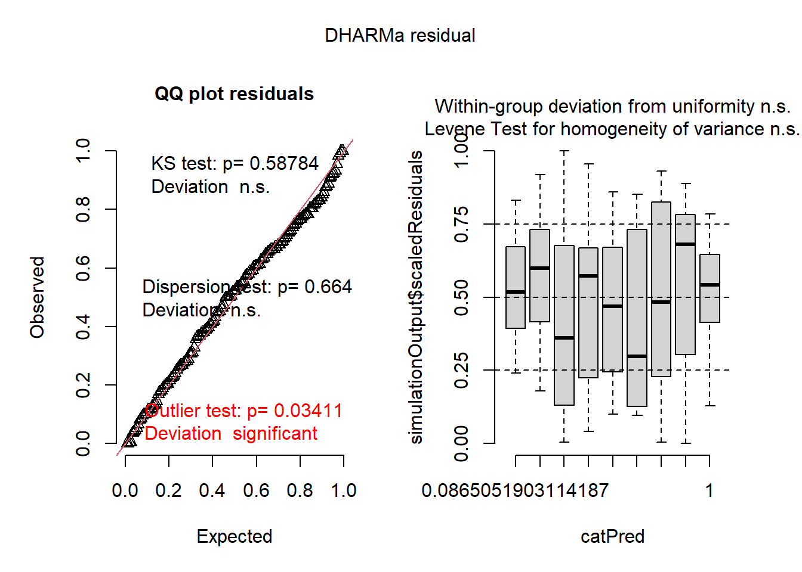
summary(mod_mixto_mfinal3)Linear mixed model fit by REML. t-tests use Satterthwaite's method [
lmerModLmerTest]
Formula: mortalidad_final ~ Treatment_code + (1 | Plot)
Data: df_anova_pool
REML criterion at convergence: 1259.6
Scaled residuals:
Min 1Q Median 3Q Max
-2.30484 -0.64123 0.01822 0.56381 2.22313
Random effects:
Groups Name Variance Std.Dev.
Plot (Intercept) 108.8 10.43
Residual 273.3 16.53
Number of obs: 152, groups: Plot, 28
Fixed effects:
Estimate Std. Error df t value
(Intercept) 74.338 4.685 66.550 15.867
Treatment_codeCONFIDOR_750_INJCTREE -55.334 7.385 136.229 -7.493
Treatment_codeEPIK_1500_FOLIAR -10.795 7.363 88.510 -1.466
Treatment_codeEPIK_1500_INJCTREE -7.738 6.713 131.034 -1.153
Treatment_codeKARATE_250_FOLIAR 1.883 8.189 134.655 0.230
Treatment_codeSULFOXAFLOR_200_FOLIAR -22.566 7.506 142.140 -3.006
Treatment_codeSULFOXAFLOR_400_FOLIAR -34.233 6.518 82.521 -5.252
Treatment_codeSULFOXAFLOR_400_INJCTREE -30.172 5.931 129.681 -5.087
Treatment_codeUNTREATED -53.579 6.589 85.127 -8.132
Pr(>|t|)
(Intercept) < 2e-16 ***
Treatment_codeCONFIDOR_750_INJCTREE 7.67e-12 ***
Treatment_codeEPIK_1500_FOLIAR 0.14614
Treatment_codeEPIK_1500_INJCTREE 0.25112
Treatment_codeKARATE_250_FOLIAR 0.81849
Treatment_codeSULFOXAFLOR_200_FOLIAR 0.00313 **
Treatment_codeSULFOXAFLOR_400_FOLIAR 1.15e-06 ***
Treatment_codeSULFOXAFLOR_400_INJCTREE 1.25e-06 ***
Treatment_codeUNTREATED 3.05e-12 ***
---
Signif. codes: 0 '***' 0.001 '**' 0.01 '*' 0.05 '.' 0.1 ' ' 1
Correlation of Fixed Effects:
(Intr) T_CONF T_EPIK_1500_F T_EPIK_1500_I T_KARA
T_CONFIDOR_ -0.396
T_EPIK_1500_F -0.602 0.243
T_EPIK_1500_I -0.508 0.308 0.309
T_KARATE_25 -0.526 0.234 0.334 0.368
T_SULFOXAFLOR_2 -0.422 0.169 0.366 0.215 0.227
T_SULFOXAFLOR_400_F -0.691 0.288 0.473 0.372 0.504
T_SULFOXAFLOR_400_I -0.655 0.333 0.422 0.354 0.433
T_UNTREATED -0.669 0.276 0.525 0.343 0.368
T_SULFOXAFLOR_2 T_SULFOXAFLOR_400_F T_SULFOXAFLOR_400_I
T_CONFIDOR_
T_EPIK_1500_F
T_EPIK_1500_I
T_KARATE_25
T_SULFOXAFLOR_2
T_SULFOXAFLOR_400_F 0.303
T_SULFOXAFLOR_400_I 0.292 0.543
T_UNTREATED 0.375 0.485 0.523 mod_mixto_mfinal_res3 <- simulateResiduals(fittedModel = mod_mixto_mfinal3)
plot(mod_mixto_mfinal_res3)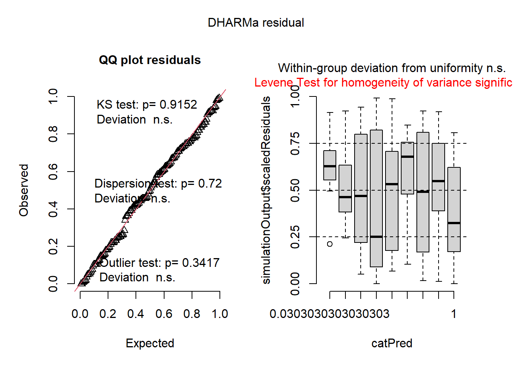
summary(mod_mixto_mcodo3)Linear mixed model fit by REML. t-tests use Satterthwaite's method [
lmerModLmerTest]
Formula: mortalidad_codo ~ Treatment_code + (1 | Plot)
Data: df_anova_pool
REML criterion at convergence: 1304.7
Scaled residuals:
Min 1Q Median 3Q Max
-3.8354 -0.6949 0.0416 0.6582 3.1165
Random effects:
Groups Name Variance Std.Dev.
Plot (Intercept) 15.05 3.88
Residual 440.15 20.98
Number of obs: 152, groups: Plot, 28
Fixed effects:
Estimate Std. Error df t value
(Intercept) 83.154 4.509 61.780 18.442
Treatment_codeCONFIDOR_750_INJCTREE -49.684 8.733 140.381 -5.689
Treatment_codeEPIK_1500_FOLIAR 4.599 7.167 54.354 0.642
Treatment_codeEPIK_1500_INJCTREE -4.113 7.076 80.738 -0.581
Treatment_codeKARATE_250_FOLIAR -18.187 8.872 102.872 -2.050
Treatment_codeSULFOXAFLOR_200_FOLIAR -37.566 8.737 139.367 -4.300
Treatment_codeSULFOXAFLOR_400_FOLIAR -43.426 6.375 62.571 -6.812
Treatment_codeSULFOXAFLOR_400_INJCTREE -49.102 6.305 89.841 -7.788
Treatment_codeUNTREATED -66.472 6.404 55.572 -10.379
Pr(>|t|)
(Intercept) < 2e-16 ***
Treatment_codeCONFIDOR_750_INJCTREE 7.15e-08 ***
Treatment_codeEPIK_1500_FOLIAR 0.5238
Treatment_codeEPIK_1500_INJCTREE 0.5627
Treatment_codeKARATE_250_FOLIAR 0.0429 *
Treatment_codeSULFOXAFLOR_200_FOLIAR 3.19e-05 ***
Treatment_codeSULFOXAFLOR_400_FOLIAR 4.38e-09 ***
Treatment_codeSULFOXAFLOR_400_INJCTREE 1.12e-11 ***
Treatment_codeUNTREATED 1.28e-14 ***
---
Signif. codes: 0 '***' 0.001 '**' 0.01 '*' 0.05 '.' 0.1 ' ' 1
Correlation of Fixed Effects:
(Intr) T_CONF T_EPIK_1500_F T_EPIK_1500_I T_KARA
T_CONFIDOR_ -0.484
T_EPIK_1500_F -0.629 0.304
T_EPIK_1500_I -0.616 0.314 0.387
T_KARATE_25 -0.507 0.246 0.319 0.328
T_SULFOXAFLOR_2 -0.485 0.235 0.320 0.299 0.246
T_SULFOXAFLOR_400_F -0.707 0.343 0.451 0.436 0.381
T_SULFOXAFLOR_400_I -0.700 0.350 0.440 0.432 0.366
T_UNTREATED -0.703 0.341 0.457 0.433 0.357
T_SULFOXAFLOR_2 T_SULFOXAFLOR_400_F T_SULFOXAFLOR_400_I
T_CONFIDOR_
T_EPIK_1500_F
T_EPIK_1500_I
T_KARATE_25
T_SULFOXAFLOR_2
T_SULFOXAFLOR_400_F 0.343
T_SULFOXAFLOR_400_I 0.340 0.506
T_UNTREATED 0.353 0.498 0.503 mod_mixto_mcodo_res3 <- simulateResiduals(fittedModel = mod_mixto_mcodo3)
plot(mod_mixto_mcodo_res3)summary(mod_mixto_delta3)Linear mixed model fit by REML. t-tests use Satterthwaite's method [
lmerModLmerTest]
Formula: delta_postcodo ~ Treatment_code + (1 | Plot)
Data: df_anova_pool
REML criterion at convergence: 1278.8
Scaled residuals:
Min 1Q Median 3Q Max
-2.14223 -0.54719 -0.03176 0.42434 2.83288
Random effects:
Groups Name Variance Std.Dev.
Plot (Intercept) 0.0 0.00
Residual 377.6 19.43
Number of obs: 152, groups: Plot, 28
Fixed effects:
Estimate Std. Error df t value
(Intercept) -8.5285 3.9663 143.0000 -2.150
Treatment_codeCONFIDOR_750_INJCTREE -0.8191 7.9325 143.0000 -0.103
Treatment_codeEPIK_1500_FOLIAR -11.6220 6.2712 143.0000 -1.853
Treatment_codeEPIK_1500_INJCTREE -6.4830 6.2712 143.0000 -1.034
Treatment_codeKARATE_250_FOLIAR 11.1536 7.9325 143.0000 1.406
Treatment_codeSULFOXAFLOR_200_FOLIAR 15.3778 7.9325 143.0000 1.939
Treatment_codeSULFOXAFLOR_400_FOLIAR 9.0600 5.6092 143.0000 1.615
Treatment_codeSULFOXAFLOR_400_INJCTREE 14.7337 5.6092 143.0000 2.627
Treatment_codeUNTREATED 12.0010 5.6092 143.0000 2.140
Pr(>|t|)
(Intercept) 0.03322 *
Treatment_codeCONFIDOR_750_INJCTREE 0.91790
Treatment_codeEPIK_1500_FOLIAR 0.06591 .
Treatment_codeEPIK_1500_INJCTREE 0.30299
Treatment_codeKARATE_250_FOLIAR 0.16188
Treatment_codeSULFOXAFLOR_200_FOLIAR 0.05452 .
Treatment_codeSULFOXAFLOR_400_FOLIAR 0.10847
Treatment_codeSULFOXAFLOR_400_INJCTREE 0.00956 **
Treatment_codeUNTREATED 0.03409 *
---
Signif. codes: 0 '***' 0.001 '**' 0.01 '*' 0.05 '.' 0.1 ' ' 1
Correlation of Fixed Effects:
(Intr) T_CONF T_EPIK_1500_F T_EPIK_1500_I T_KARA
T_CONFIDOR_ -0.500
T_EPIK_1500_F -0.632 0.316
T_EPIK_1500_I -0.632 0.316 0.400
T_KARATE_25 -0.500 0.250 0.316 0.316
T_SULFOXAFLOR_2 -0.500 0.250 0.316 0.316 0.250
T_SULFOXAFLOR_400_F -0.707 0.354 0.447 0.447 0.354
T_SULFOXAFLOR_400_I -0.707 0.354 0.447 0.447 0.354
T_UNTREATED -0.707 0.354 0.447 0.447 0.354
T_SULFOXAFLOR_2 T_SULFOXAFLOR_400_F T_SULFOXAFLOR_400_I
T_CONFIDOR_
T_EPIK_1500_F
T_EPIK_1500_I
T_KARATE_25
T_SULFOXAFLOR_2
T_SULFOXAFLOR_400_F 0.354
T_SULFOXAFLOR_400_I 0.354 0.500
T_UNTREATED 0.354 0.500 0.500
optimizer (nloptwrap) convergence code: 0 (OK)
boundary (singular) fit: see help('isSingular')mod_mixto_delta_res3 <- simulateResiduals(fittedModel = mod_mixto_delta3)
plot(mod_mixto_delta_res3)Anova(mod_mixto_auc3, type = "III")Analysis of Deviance Table (Type III Wald chisquare tests)
Response: AUC
Chisq Df Pr(>Chisq)
(Intercept) 351.45 1 < 2.2e-16 ***
Treatment_code 238.89 8 < 2.2e-16 ***
---
Signif. codes: 0 '***' 0.001 '**' 0.01 '*' 0.05 '.' 0.1 ' ' 1Anova(mod_mixto_mfinal3, type = "III")Analysis of Deviance Table (Type III Wald chisquare tests)
Response: mortalidad_final
Chisq Df Pr(>Chisq)
(Intercept) 251.77 1 < 2.2e-16 ***
Treatment_code 141.33 8 < 2.2e-16 ***
---
Signif. codes: 0 '***' 0.001 '**' 0.01 '*' 0.05 '.' 0.1 ' ' 1Anova(mod_mixto_mcodo3, type = "III")Analysis of Deviance Table (Type III Wald chisquare tests)
Response: mortalidad_codo
Chisq Df Pr(>Chisq)
(Intercept) 340.11 1 < 2.2e-16 ***
Treatment_code 208.37 8 < 2.2e-16 ***
---
Signif. codes: 0 '***' 0.001 '**' 0.01 '*' 0.05 '.' 0.1 ' ' 1Anova(mod_mixto_delta3, type = "III")Analysis of Deviance Table (Type III Wald chisquare tests)
Response: delta_postcodo
Chisq Df Pr(>Chisq)
(Intercept) 4.6236 1 0.03153 *
Treatment_code 32.8701 8 6.5e-05 ***
---
Signif. codes: 0 '***' 0.001 '**' 0.01 '*' 0.05 '.' 0.1 ' ' 1Vemos emmeans y cld:
library(emmeans)
library(multcomp)
# ---- AUC ----
emm_auc3 <- emmeans(mod_mixto_auc3, ~ Treatment_code)
cld_auc3 <- cld(emm_auc3, Letters = letters, adjust = "fdr")
print(cld_auc3) Treatment_code emmean SE df lower.CL upper.CL .group
UNTREATED 70.7 21.3 54.9 9.13 132 a
CONFIDOR_750_INJCTREE 100.7 32.1 126.1 10.22 191 ab
SULFOXAFLOR_400_INJCTREE 164.0 20.3 79.3 106.19 222 b
SULFOXAFLOR_400_FOLIAR 170.6 20.6 62.5 111.46 230 b
SULFOXAFLOR_200_FOLIAR 190.6 32.0 128.6 100.26 281 b
KARATE_250_FOLIAR 302.9 32.0 128.6 212.54 393 c
EPIK_1500_INJCTREE 328.4 26.0 60.5 253.50 403 c
CONFIDOR_750_FOLIAR 378.9 20.5 65.6 320.00 438 c
EPIK_1500_FOLIAR 387.7 26.0 63.1 313.12 462 c
Degrees-of-freedom method: kenward-roger
Confidence level used: 0.95
Conf-level adjustment: bonferroni method for 9 estimates
P value adjustment: fdr method for 36 tests
significance level used: alpha = 0.05
NOTE: If two or more means share the same grouping symbol,
then we cannot show them to be different.
But we also did not show them to be the same. # ---- Mortalidad final ----
emm_mfinal3 <- emmeans(mod_mixto_mfinal3, ~ Treatment_code)
cld_mfinal3 <- cld(emm_mfinal3, Letters = letters, adjust = "fdr")
print(cld_mfinal3) Treatment_code emmean SE df lower.CL upper.CL .group
CONFIDOR_750_INJCTREE 19.0 7.08 128.3 -0.967 39.0 a
UNTREATED 20.8 4.99 61.2 6.420 35.1 a
SULFOXAFLOR_400_FOLIAR 40.1 4.78 65.0 26.384 53.8 b
SULFOXAFLOR_400_INJCTREE 44.2 4.62 85.6 31.025 57.3 b
SULFOXAFLOR_200_FOLIAR 51.8 7.05 132.0 31.888 71.7 bc
EPIK_1500_FOLIAR 63.5 6.00 74.9 46.404 80.7 cd
EPIK_1500_INJCTREE 66.6 6.04 70.9 49.330 83.9 cd
CONFIDOR_750_FOLIAR 74.3 4.75 69.2 60.732 87.9 d
KARATE_250_FOLIAR 76.2 7.05 132.2 56.340 96.1 d
Degrees-of-freedom method: kenward-roger
Confidence level used: 0.95
Conf-level adjustment: bonferroni method for 9 estimates
P value adjustment: fdr method for 36 tests
significance level used: alpha = 0.05
NOTE: If two or more means share the same grouping symbol,
then we cannot show them to be different.
But we also did not show them to be the same. # ---- Mortalidad codo ----
emm_mcodo3 <- emmeans(mod_mixto_mcodo3, ~ Treatment_code)
cld_mcodo3 <- cld(emm_mcodo3, Letters = letters, adjust = "fdr")
print(cld_mcodo3) Treatment_code emmean SE df lower.CL upper.CL .group
UNTREATED 16.7 4.65 43.6 3.12 30.2 a
CONFIDOR_750_INJCTREE 33.5 7.79 113.5 11.45 55.5 ab
SULFOXAFLOR_400_INJCTREE 34.1 4.61 61.0 20.79 47.3 b
SULFOXAFLOR_400_FOLIAR 39.7 4.58 57.5 26.52 52.9 b
SULFOXAFLOR_200_FOLIAR 45.6 7.79 113.7 23.56 67.6 bc
KARATE_250_FOLIAR 65.0 7.79 113.7 42.94 87.0 cd
EPIK_1500_INJCTREE 79.0 5.70 44.2 62.42 95.7 de
CONFIDOR_750_FOLIAR 83.2 4.59 57.9 69.93 96.4 de
EPIK_1500_FOLIAR 87.8 5.71 44.6 71.12 104.4 e
Degrees-of-freedom method: kenward-roger
Confidence level used: 0.95
Conf-level adjustment: bonferroni method for 9 estimates
P value adjustment: fdr method for 36 tests
significance level used: alpha = 0.05
NOTE: If two or more means share the same grouping symbol,
then we cannot show them to be different.
But we also did not show them to be the same. # ---- Delta postcodo ----
emm_delta3 <- emmeans(mod_mixto_delta3, ~ Treatment_code)
cld_delta3 <- cld(emm_delta3, Letters = letters, adjust = "fdr")
print(cld_delta3) Treatment_code emmean SE df lower.CL upper.CL .group
EPIK_1500_FOLIAR -20.151 4.97 40.5 -34.72 -5.581 a
EPIK_1500_INJCTREE -15.012 4.97 40.5 -29.56 -0.459 ab
CONFIDOR_750_INJCTREE -9.348 7.01 107.4 -29.19 10.500 abc
CONFIDOR_750_FOLIAR -8.529 4.04 55.6 -20.18 3.124 abc
SULFOXAFLOR_400_FOLIAR 0.532 4.04 55.6 -11.11 12.178 bc
KARATE_250_FOLIAR 2.625 7.01 107.4 -17.22 22.472 abc
UNTREATED 3.473 4.05 40.5 -8.39 15.336 c
SULFOXAFLOR_400_INJCTREE 6.205 4.06 55.6 -5.52 17.930 c
SULFOXAFLOR_200_FOLIAR 6.849 7.01 107.4 -13.00 26.697 bc
Degrees-of-freedom method: kenward-roger
Confidence level used: 0.95
Conf-level adjustment: bonferroni method for 9 estimates
P value adjustment: fdr method for 36 tests
significance level used: alpha = 0.05
NOTE: If two or more means share the same grouping symbol,
then we cannot show them to be different.
But we also did not show them to be the same. Ponemos todo en una tabla para el PowerPoint:
library(dplyr)
library(kableExtra)
library(webshot2)
library(knitr)
# 1. Calcula media y sd por tratamiento
resumen_stats <- df_anova_pool %>%
group_by(Treatment_code) %>%
summarise(
AUC_mean = mean(AUC, na.rm = TRUE),
AUC_sd = sd(AUC, na.rm = TRUE),
mfinal_mean = mean(mortalidad_final, na.rm = TRUE),
mfinal_sd = sd(mortalidad_final, na.rm = TRUE),
mcodo_mean = mean(mortalidad_codo, na.rm = TRUE),
mcodo_sd = sd(mortalidad_codo, na.rm = TRUE),
delta_mean = mean(delta_postcodo, na.rm = TRUE),
delta_sd = sd(delta_postcodo, na.rm = TRUE)
)
# 2. Letras para cada tratamiento y variable
letras_auc <- cld_auc3$.group
letras_mfinal <- cld_mfinal3$.group
letras_mcodo <- cld_mcodo3$.group
letras_delta <- cld_delta3$.group
# 3. Ordena los tratamientos igual que en cld
resumen_stats <- resumen_stats[match(cld_auc3$Treatment_code, resumen_stats$Treatment_code), ]
# 4. Función para letras como superíndices Unicode
to_superscript <- function(s) {
s <- gsub("a", "\u1d43", s)
s <- gsub("b", "\u1d47", s)
s <- gsub("c", "\u1d9c", s)
s <- gsub("d", "\u1d48", s)
s <- gsub("e", "\u1d49", s)
s
}
celda_unicode <- function(m, s, l) {
super <- to_superscript(gsub(" ", "", l))
sprintf("%.1f ± %.1f%s", m, s, super)
}
# 5. Arma la tabla con superíndices Unicode
tabla_letras_sd2 <- data.frame(
Treatment = cld_auc3$Treatment_code,
AUC = mapply(celda_unicode, resumen_stats$AUC_mean, resumen_stats$AUC_sd, letras_auc),
Final_mortality = mapply(celda_unicode, resumen_stats$mfinal_mean, resumen_stats$mfinal_sd, letras_mfinal),
Elbow_mortality = mapply(celda_unicode, resumen_stats$mcodo_mean, resumen_stats$mcodo_sd, letras_mcodo),
Post_elbow_delta= mapply(celda_unicode, resumen_stats$delta_mean, resumen_stats$delta_sd, letras_delta)
)
colnames(tabla_letras_sd2) <- c("Treatment", "AUC", "Final mortality", "Elbow mortality", "Post-elbow delta")
# 6. Tabla kable bonita
tabla_kable_FDR <- kable(
tabla_letras_sd2, align = "c", escape = TRUE,
caption = "Means ± sd and statistical grouping (as superscript) by treatment and variable (FDR-corrected)."
) %>%
kable_styling(
full_width = FALSE,
bootstrap_options = c("striped", "hover", "condensed"),
font_size = 15
) %>%
column_spec(2:5, width = "6em", extra_css = "white-space:nowrap; font-size:90%;")
# 7. Guarda como HTML y PNG
save_kable(tabla_kable_FDR, file = "tabla_letras_FDR.html")
webshot("tabla_letras_FDR.html", file = "tabla_letras_FDR.png", zoom = 2)4.8.2 Clustering y curvas promedio en conjunto
library(dplyr)
df_pool_filt <- df_anova_pool %>%
filter(Treatment_code != "UNTREATED")
# Calcula la media de cada variable resumen por tratamiento
df_cluster_pool <- df_pool_filt %>%
group_by(Treatment_code) %>%
summarise(
AUC = mean(AUC, na.rm = TRUE),
mortalidad_codo = mean(mortalidad_codo, na.rm = TRUE),
mortalidad_final = mean(mortalidad_final, na.rm = TRUE),
delta_postcodo = mean(delta_postcodo, na.rm = TRUE)
) %>%
ungroup()vars_for_cluster_3 <- scale(df_cluster_pool[, c("AUC", "mortalidad_codo", "mortalidad_final", "delta_postcodo")])
rownames(vars_for_cluster_3) <- df_cluster_pool$Treatment_codelibrary(cluster)
library(factoextra)
# Método silhouette
fviz_nbclust(vars_for_cluster_3, kmeans, method = "silhouette", k.max = 7) +
labs(title = "Silhouette method for optimal k")# (Opcional) Método gap statistic
gap_stat <- clusGap(vars_for_cluster_3, FUN = kmeans, nstart = 25, K.max = 7, B = 100)
fviz_gap_stat(gap_stat) + labs(title = "Gap Statistic for optimal k")Tomaremos k = 2. Así:
set.seed(123)
kcl <- 2 # k = 2 por Silhouette (GAP statistic da k = 1, no interesa)
km3 <- kmeans(vars_for_cluster_3, centers = kcl, nstart = 20)
df_cluster_pool$Cluster <- factor(km3$cluster)Visualizamos:
library(ggplot2)
ggplot(df_cluster_pool, aes(x = mortalidad_codo, y = delta_postcodo, color = Cluster, label = Treatment_code)) +
geom_point(size = 5) +
geom_text(nudge_y = 2, size = 2.5, show.legend = FALSE) +
labs(
title = "Treatment Clusters",
x = "Mortality rate at elbow (%)",
y = "Persistence (Δ post-elbow, %)"
) +
theme_minimal(base_size = 15)library(factoextra)
library(ggplot2)
# 1. Gráfico base con fviz_cluster
p_pool <- fviz_cluster(km3, data = vars_for_cluster_3, geom = "point") +
theme(legend.position = "none") +
xlim(c(-3.5, 3.5))
ylim(c(-3, 4)) # Ajusta los límites según tus datos<ScaleContinuousPosition>
Range:
Limits: -3 -- 4# 2. Extrae los datos internos (scores de componentes principales y cluster)
plotdata_pool <- p_pool$data
# 3. Añade labels personalizados (Treatment_code o Treatment_name)
plotdata_pool$label <- df_cluster_pool$Treatment_code # O usa Treatment_name si prefieres
# 4. Añade la capa geom_text con los labels y colores por cluster
p_pool_labeled <- p_pool +
geom_text(
data = plotdata_pool,
aes(x = x, y = y, label = label, color = factor(cluster)), # color por cluster
size = 2.7,
fontface = "bold",
show.legend = FALSE,
nudge_y = 0.1
)
# 5. Muestra el gráfico final
print(p_pool_labeled)Vemos las cargas de cada variable en cada componente principal:
# Si usaste prcomp para el PCA:
pca_result3 <- prcomp(vars_for_cluster_3, scale = TRUE)
summary(pca_result3)Importance of components:
PC1 PC2 PC3 PC4
Standard deviation 1.8164 0.8317 0.09346 2.022e-16
Proportion of Variance 0.8249 0.1729 0.00218 0.000e+00
Cumulative Proportion 0.8249 0.9978 1.00000 1.000e+00pca_result3$rotation # Cargas de las variables originales en cada componente PC1 PC2 PC3 PC4
AUC -0.5468559 -0.10241651 0.8309389 0.0000000
mortalidad_codo -0.5500639 -0.02716806 -0.3653555 0.7504712
mortalidad_final -0.4948016 -0.52525903 -0.3903781 -0.5717335
delta_postcodo 0.3918543 -0.84431967 0.1538206 0.3315324Ahora vemos por último la gráfica de las curvas promedio:
library(dplyr)
colores_pool <- setNames(
treatment_palette_extended$color,
treatment_palette_extended$code
)
# Curvas promedio por tratamiento (promedia sobre todos los años, parcelas y réplicas)
curvas_trt_pool <- arbol_pool %>%
group_by(Treatment_code, periodo) %>%
summarise(mortalidad = mean(mortalidad, na.rm = TRUE), .groups = "drop")
# Calcular codos por tratamiento (para la curva media de cada uno)
codos_trt_pool <- curvas_trt_pool %>%
group_by(Treatment_code) %>%
summarise(
periodo_codo = periodo[elbow(periodo, mortalidad)],
mortalidad_codo = mortalidad[elbow(periodo, mortalidad)],
.groups = "drop"
)library(knitr)
library(kableExtra)
# Si tienes una paleta de etiquetas:
# treatment_labels_pool <- ... # Vector con los nombres legibles por código
codos_trt_pool$Treatment <- codos_trt_pool$Treatment_code
# Prepara y nombra las columnas
codos_trt_pool_out <- codos_trt_pool[, c("Treatment", "periodo_codo", "mortalidad_codo")]
colnames(codos_trt_pool_out) <- c("Treatment", "Elbow period", "Elbow mortality rate (%)")
tabla_kable_pool <- kable(
codos_trt_pool_out, align = "c",
caption = "Period and mortality rate at the elbow for each treatment (pooling years)"
) %>%
kable_styling(full_width = FALSE, bootstrap_options = c("striped", "hover", "condensed"))
tabla_kable_pool| Treatment | Elbow period | Elbow mortality rate (%) |
|---|---|---|
| CONFIDOR_750_FOLIAR | 2 | 79.44666 |
| CONFIDOR_750_INJCTREE | 3 | 35.96742 |
| EPIK_1500_FOLIAR | 2 | 83.22247 |
| EPIK_1500_INJCTREE | 2 | 72.66171 |
| KARATE_250_FOLIAR | 3 | 61.89056 |
| SULFOXAFLOR_200_FOLIAR | 5 | 56.17758 |
| SULFOXAFLOR_400_FOLIAR | 3 | 36.25401 |
| SULFOXAFLOR_400_INJCTREE | 3 | 30.84816 |
| UNTREATED | 5 | 21.41226 |
library(ggplot2)
# Si tienes paleta de colores para el pool (sino quita scale_color_manual)
colores_pool <- setNames(
rainbow(length(unique(curvas_trt_pool$Treatment_code))),
unique(curvas_trt_pool$Treatment_code)
)
ggplot(curvas_trt_pool, aes(x = periodo, y = mortalidad, color = Treatment_code, group = Treatment_code)) +
geom_line(size = 0.5) +
geom_point(size = 2) +
geom_vline(data = codos_trt_pool, aes(xintercept = periodo_codo, color = Treatment_code), linetype = "dashed", size = 0.5) +
scale_color_manual(
values = colores_pool,
labels = setNames(treatment_palette_extended$label, treatment_palette_extended$code)
) +
theme_minimal() +
theme(
legend.position = "bottom",
legend.text = element_text(size = 8)
) +
labs(
x = "Period (pooling years)",
y = "Average mortality rate (%)",
color = NULL
)
4.8.3 Distancia Wasserstein (otro enfoque)
library(dplyr)
# Lista de tratamientos únicos
tratamientos <- unique(df_anova_pool$Treatment_code)
# Crea una lista: cada elemento es una matriz n_réplicas x 4 variables resumen
lista_tratamientos <- lapply(tratamientos, function(trt) {
df_anova_pool %>%
filter(Treatment_code == trt) %>%
dplyr::select(AUC, mortalidad_codo, mortalidad_final, delta_postcodo) %>%
as.matrix()
})
names(lista_tratamientos) <- tratamientosn <- length(lista_tratamientos)
D <- matrix(NA, nrow = n, ncol = n, dimnames = list(tratamientos, tratamientos))
library(transport)
for (i in 1:n) {
for (j in i:n) {
Xi <- lista_tratamientos[[i]]
Xj <- lista_tratamientos[[j]]
if (nrow(Xi) == 1) Xi <- rbind(Xi, Xi)
if (nrow(Xj) == 1) Xj <- rbind(Xj, Xj)
# Calcula la matriz de costes (distancia euclídea entre todos los pares de puntos)
costm <- as.matrix(dist(rbind(Xi, Xj)))[1:nrow(Xi), (nrow(Xi)+1):(nrow(Xi)+nrow(Xj))]
# Calcula la distancia de Wasserstein (p = 2, costm = matriz de distancias)
D[i, j] <- wasserstein(rep(1/nrow(Xi), nrow(Xi)), rep(1/nrow(Xj), nrow(Xj)), costm = costm, p = 1)
D[j, i] <- D[i, j]
}
}
print(D) CONFIDOR_750_FOLIAR CONFIDOR_750_INJCTREE
CONFIDOR_750_FOLIAR 0.00000 268.58970
CONFIDOR_750_INJCTREE 268.58970 0.00000
EPIK_1500_FOLIAR 52.07865 279.94102
EPIK_1500_INJCTREE 63.15824 218.88404
KARATE_250_FOLIAR 121.54294 168.63658
SULFOXAFLOR_200_FOLIAR 206.20255 76.45167
SULFOXAFLOR_400_FOLIAR 222.84483 55.31954
SULFOXAFLOR_400_INJCTREE 230.37172 67.55462
UNTREATED 318.95900 54.58698
EPIK_1500_FOLIAR EPIK_1500_INJCTREE KARATE_250_FOLIAR
CONFIDOR_750_FOLIAR 52.07865 63.15824 121.54294
CONFIDOR_750_INJCTREE 279.94102 218.88404 168.63658
EPIK_1500_FOLIAR 0.00000 66.54127 118.13815
EPIK_1500_INJCTREE 66.54127 0.00000 66.77081
KARATE_250_FOLIAR 118.13815 66.77081 0.00000
SULFOXAFLOR_200_FOLIAR 217.02790 156.68169 102.69391
SULFOXAFLOR_400_FOLIAR 234.91869 174.12110 122.75800
SULFOXAFLOR_400_INJCTREE 244.97261 183.74796 136.36544
UNTREATED 331.24224 270.25782 218.77618
SULFOXAFLOR_200_FOLIAR SULFOXAFLOR_400_FOLIAR
CONFIDOR_750_FOLIAR 206.20255 222.84483
CONFIDOR_750_INJCTREE 76.45167 55.31954
EPIK_1500_FOLIAR 217.02790 234.91869
EPIK_1500_INJCTREE 156.68169 174.12110
KARATE_250_FOLIAR 102.69391 122.75800
SULFOXAFLOR_200_FOLIAR 0.00000 44.15064
SULFOXAFLOR_400_FOLIAR 44.15064 0.00000
SULFOXAFLOR_400_INJCTREE 75.92029 57.07037
UNTREATED 121.28913 98.69439
SULFOXAFLOR_400_INJCTREE UNTREATED
CONFIDOR_750_FOLIAR 230.37172 318.95900
CONFIDOR_750_INJCTREE 67.55462 54.58698
EPIK_1500_FOLIAR 244.97261 331.24224
EPIK_1500_INJCTREE 183.74796 270.25782
KARATE_250_FOLIAR 136.36544 218.77618
SULFOXAFLOR_200_FOLIAR 75.92029 121.28913
SULFOXAFLOR_400_FOLIAR 57.07037 98.69439
SULFOXAFLOR_400_INJCTREE 0.00000 92.91897
UNTREATED 92.91897 0.00000hc <- hclust(as.dist(D), method = "ward.D2")
plot(hc, main = "Hierarchical clustering (Wasserstein distance)")
mds <- cmdscale(as.dist(D), k = 2)
plot(
mds, type = "n", main = "MDS by Wasserstein distance", xlab = "Dim 1", ylab = "Dim 2"
)
text(mds, labels = rownames(mds), col = "blue", cex = 0.7)# D es tu matriz de distancias
mds <- cmdscale(as.dist(D), k = 2, eig = TRUE)
# Coordenadas embebidas
Y <- mds$points
# Distancias euclídeas en el embebido
D_fit <- dist(Y)
D_orig <- as.dist(D)
# Stress clásico (Kruskal)
stress <- sqrt(sum((D_fit - D_orig)^2) / sum(D_orig^2))
cat("Stress clásico:", stress, "\n")Stress clásico: 0.0359463 library(ggplot2)
ggplot(df_anova_pool, aes(x = Treatment_code, y = AUC)) +
geom_boxplot(outlier.colour = "red", fill = "skyblue") +
theme_minimal(base_size = 14) +
labs(title = "AUC by Treatment (outliers in red)")
if (!require(cluster)) install.packages("cluster")
library(cluster)
# X = matriz de datos usada en kmeans
sil <- silhouette(km3$cluster, dist(vars_for_cluster_3))
mean_sil <- mean(sil[, 3])
cat("Average Silhouette width:", mean_sil, "\n")Average Silhouette width: 0.5506497 plot(sil, border = NA)5 Conclusiones de P3
5.1 1. Diferencias globales entre tratamientos (AUC y mortalidad)
Hay dos grandes clusters de tratamientos bien diferenciados, según el gráfico:
Cluster de baja eficacia: UNTREATED (control, es evidente que iba a estar en este cluster porque el control no tiene eficacia ni persistencia), CONFIDOR_750_INJCTREE, SULFOXAFLOR_400_INJCTREE, SULFOXAFLOR_400_FOLIAR, SULFOXAFLOR_200_FOLIAR.
Cluster de alta eficacia: KARATE_250_FOLIAR, EPIK_1500_INJCTREE, CONFIDOR_750_FOLIAR, EPIK_1500_FOLIAR.
Las medias ajustadas (emmean) para AUC muestran que los tratamientos más eficaces (grupo “c” en .group) son EPIK_1500_FOLIAR, CONFIDOR_750_FOLIAR, EPIK_1500_INJCTREE, KARATE_250_FOLIAR.
Estos tratamientos tienen valores de AUC mucho más altos, indicando mayor mortalidad acumulada.
5.2 2. Mortalidad en el codo y mortalidad final
- Para mortalidad en el codo y mortalidad final, los patrones son similares:
CONFIDOR_750_FOLIAR y EPIK_1500_FOLIAR presentan los valores más altos de mortalidad, y forman un grupo significativo superior (d/e).
Los tratamientos como UNTREATED, CONFIDOR_750_INJCTREE y SULFOXAFLOR (en cualquiera de sus formas) muestran valores intermedios o bajos, y frecuentemente no se diferencian entre sí (grupo a/b).
KARATE_250_FOLIAR también se sitúa en el grupo de mayor mortalidad final.
5.3 3. Persistencia (delta_postcodo)
Para la persistencia (diferencia entre mortalidad final y en el codo), los tratamientos con mayor reducción de mortalidad tras el codo (valores más negativos) son EPIK_1500_FOLIAR y EPIK_1500_INJCTREE, es decir, su eficacia cae más después del punto de inflexión (codo).
El UNTREATED y SULFOXAFLOR tienen valores próximos a cero o positivos, indicando alta persistencia (no aumentan ni mantienen mortalidad tras el codo).
5.4 Conclusión práctica
EPIK (foliar e inyección) y CONFIDOR 200 OD foliar son los tratamientos más eficaces y persistentes para controlar Philaenus spumarius, mostrando diferencias estadísticas claras respecto a los tratamientos basados en SULFOXAFLOR o el testigo.
La aplicación foliar suele ser superior a la inyección para los tratamientos con mejor rendimiento.
Los SULFOXAFLOR presentan resultados bajos y no se diferencian entre sí en mortalidad acumulada ni persistencia. Sin embargo, sí destacan por su alta persistencia en comparación con los EPIK y relativamente hablando el CONFIDOR de aplicación foliar.
KARATE ZEON 250 (de aplicación foliar) sería la opción intermedia si bien más próxima en cuanto a eficacia a los tratamientos EPIK y CONFIDOR 200 OD de aplicación foliar (por eso lo pone en ese cluster).
6 Diagrama de conclusión
flowchart TD
%% Central node
A["TREATMENT CLUSTERS"]
%% Cluster 1 (High efficacy)
subgraph Cluster1["Cluster 1: High efficacy"]
direction TB
B1["CONFIDOR_750_FOLIAR"]
B2["KARATE_250_FOLIAR"]
B3["EPIK_1500_FOLIAR"]
B4["EPIK_1500_INJCTREE"]
end
%% Cluster 2 (Lower efficacy)
subgraph Cluster2["Cluster 2: Lower efficacy"]
direction TB
C1["CONFIDOR_750_INJCTREE"]
C2["SULFOXAFLOR_400_FOLIAR"]
C3["SULFOXAFLOR_400_INJCTREE"]
C4["SULFOXAFLOR_200_FOLIAR"]
end
%% Conexión entre nodo central y clusters
A --> Cluster1
A --> Cluster2
%% Stickers clave abajo
A --> D1["Foliar = ↑ efficacy (on average)"]
A --> D2["Persistence = highly variable, not explained by application"]
A --> D3["Plot-to-plot variability: very low (<16%)"]
A --> D4["Persistence ↑ → Efficacy ↓"]
A --> D5["Treatments explain most variability"]
%% Flechas mejores y peores
B1 -->|Best| E1["✔ Best"]
B2 -->|Best| E1
%% Puedes también añadir EPIK_1500_FOLIAR si quieres (suele estar bien en eficacia):
B3 -.->|Also good| E2["✓ Good"]
B4 -.->|Also good| E2
%% Peor tratamiento
C1 -->|Worst| F1["✘ Worst"]
%% Estilo visual
classDef cluster1 fill:#ffcccc,stroke:#d33,stroke-width:2px;
classDef cluster2 fill:#cce6ff,stroke:#06c,stroke-width:2px;
classDef sticker fill:#ffffcc,stroke:#bbb,stroke-width:1.5px,font-weight:bold;
classDef best fill:#ccffcc,stroke:#080,stroke-width:2px,font-weight:bold;
classDef worst fill:#ffd6cc,stroke:#d33,stroke-width:2px,font-weight:bold;
classDef good fill:#f5ffcc,stroke:#aab400,stroke-width:2px,font-weight:bold;
class Cluster1 cluster1;
class Cluster2 cluster2;
class D1,D2,D3,D4,D5 sticker;
class E1 best;
class F1 worst;
class E2 good;
7 Apéndice
7.1 Anomalías o consideraciones sobre los datos
mean(subset(arbol1$mortalidad, arbol1$Trtf == "5"))[1] 22.80933sd(subset(arbol1$mortalidad, arbol1$Trtf == "5"))[1] 15.23702mean(subset(arbol2$mortalidad, arbol2$Trtf == "1"))[1] 70.49094sd(subset(arbol2$mortalidad, arbol2$Trtf == "1"))[1] 25.91875cat("\n")mean(subset(arbol1$mortalidad, arbol1$Trtf == "3"))[1] 37.60485sd(subset(arbol1$mortalidad, arbol1$Trtf == "3"))[1] 30.48576mean(subset(arbol2$mortalidad, arbol2$Trtf == "2"))[1] 28.56062sd(subset(arbol2$mortalidad, arbol2$Trtf == "2"))[1] 19.07191cat("\n")mean(subset(arbol1$mortalidad, arbol1$Trtf == "2"))[1] 40.04sd(subset(arbol1$mortalidad, arbol1$Trtf == "2"))[1] 19.35812mean(subset(arbol2$mortalidad, arbol2$Trtf == "4"))[1] 29.10771sd(subset(arbol2$mortalidad, arbol2$Trtf == "4"))[1] 26.31197.2 Cálculo del (pseudo)-\(R^2\) en Modelos Mixtos según Nakagawa y Schielzeth (2013) (para lo de los BLUPs)
7.2.1 Modelo Lineal Mixto (LMM)
Consideremos un modelo lineal mixto con estructura:
\[ \mathbf{y} = \mathbf{X}\boldsymbol{\beta} + \mathbf{Z}\mathbf{b} + \boldsymbol{\varepsilon} \]
donde:
- \(\mathbf{y}\) es el vector de observaciones (\(n \times 1\))
- \(\mathbf{X}\) es la matriz de diseño de efectos fijos (\(n \times p\))
- \(\boldsymbol{\beta}\) es el vector de coeficientes fijos (\(p \times 1\))
- \(\mathbf{Z}\) es la matriz de diseño de efectos aleatorios (\(n \times q\))
- \(\mathbf{b} \sim \mathcal{N}(\mathbf{0}, \boldsymbol{\Sigma}_b)\) son los efectos aleatorios (\(q \times 1\))
- \(\boldsymbol{\varepsilon} \sim \mathcal{N}(\mathbf{0}, \sigma^2\mathbf{I}_n)\) es el error residual
Descomposición de Varianza
La varianza total observada se descompone como:
\[ \sigma^2_{\text{total}} \approx \sigma^2_f + \sigma^2_b + \sigma^2 \]
donde:
- \(\sigma^2_f = \mathrm{Var}(\mathbf{X}\hat{\boldsymbol{\beta}})\) es la varianza de las predicciones de efectos fijos, estimada como:
\[ \hat{\sigma}^2_f = \frac{1}{n-1} \sum_{i=1}^n \left( \mathbf{X}_i\hat{\boldsymbol{\beta}} - \overline{\mathbf{X}\hat{\boldsymbol{\beta}}} \right)^2 \]
- \(\sigma^2_b = \mathrm{Var}(\mathbf{Z}\mathbf{b})\) es la varianza de efectos aleatorios, estimada como:
\[ \hat{\sigma}^2_b = \sum_{k=1}^r \hat{\sigma}^2_{b_k} \]
(con \(r\) componentes independientes), o en general como:
\[ \mathrm{tr}(\mathbf{Z}\boldsymbol{\Sigma}_b\mathbf{Z}^\top) \]
- \(\sigma^2\) es la varianza residual estimada.
Coeficientes de Determinación
- \(R^2\) marginal (varianza explicada por efectos fijos):
\[ R^2_m = \frac{\sigma^2_f}{\sigma^2_f + \sigma^2_b + \sigma^2} \]
- \(R^2\) condicional (varianza explicada por efectos fijos + aleatorios):
\[ R^2_c = \frac{\sigma^2_f + \sigma^2_b}{\sigma^2_f + \sigma^2_b + \sigma^2} \]
7.2.2 Extensión a Modelos Mixtos Generalizados (GLMM)
Para GLMMs con función de enlace \(g(\cdot)\) y distribución no normal, se añade un término de varianza específica:
\[ \sigma^2_{\text{total}} \approx \sigma^2_f + \sigma^2_b + \sigma^2_d \]
donde \(\sigma^2_d\) es la varianza intrínseca de la distribución en la escala del predictor lineal. Algunos valores típicos son:
- Binomial-logit: \(\sigma^2_d = \dfrac{\pi^2}{3} \approx 3.29\)
- Binomial-probit: \(\sigma^2_d = 1\)
- Poisson: \(\sigma^2_d = \ln\left(1 + \dfrac{1}{\bar{\lambda}}\right)\) con \(\bar{\lambda} = \dfrac{1}{n} \sum y_i\)
- Binomial negativo: \(\sigma^2_d = \ln\left(1 + \dfrac{1}{\bar{\lambda}} + \dfrac{1}{\hat{\theta}}\right)\) donde \(\hat{\theta}\) es el parámetro de dispersión
Fórmulas Adaptadas para GLMMs
- \(R^2\) marginal:
\[ R^2_m = \frac{\sigma^2_f}{\sigma^2_f + \sigma^2_b + \sigma^2_d} \]
- \(R^2\) condicional:
\[ R^2_c = \frac{\sigma^2_f + \sigma^2_b}{\sigma^2_f + \sigma^2_b + \sigma^2_d} \]
Propiedades y Limitaciones
- Las fórmulas generalizan el \(R^2\) tradicional de modelos lineales
- \(0 \leq R^2_m \leq R^2_c \leq 1\)
- \(\sigma^2_f\) depende de la variabilidad observada en \(\mathbf{X}\)
- En distribuciones no constantes (Poisson, binomial negativo), \(\sigma^2_d\) es aproximada
- La igualdad \(\sigma^2_{\text{total}} = \sigma^2_f + \sigma^2_b + \sigma^2\) es asintótica y asume ortogonalidad entre componentes
Implementación Práctica
- Calcular predicciones de efectos fijos: \(\hat{\boldsymbol{\eta}}_f = \mathbf{X}\hat{\boldsymbol{\beta}}\)
- Estimar \(\hat{\sigma}^2_f = \mathrm{Var}(\hat{\boldsymbol{\eta}}_f)\) (varianza muestral)
- Sumar varianzas de efectos aleatorios: \(\hat{\sigma}^2_b = \sum \hat{\sigma}^2_{b_k}\)
- Determinar \(\sigma^2_d\) según familia y enlace
- Computar \(R^2_m\) y \(R^2_c\) usando las fórmulas anteriores
Referencia principal: (Nakagawa and Schielzeth 2012)
References
Nakagawa, Shinichi, and Holger Schielzeth. 2012. “A General and Simple Method for Obtaining R2 from Generalized Linear Mixed-Effects Models.” Edited by Robert B. O’Hara. Methods in Ecology and Evolution 4 (2): 133–42. https://doi.org/10.1111/j.2041-210x.2012.00261.x.